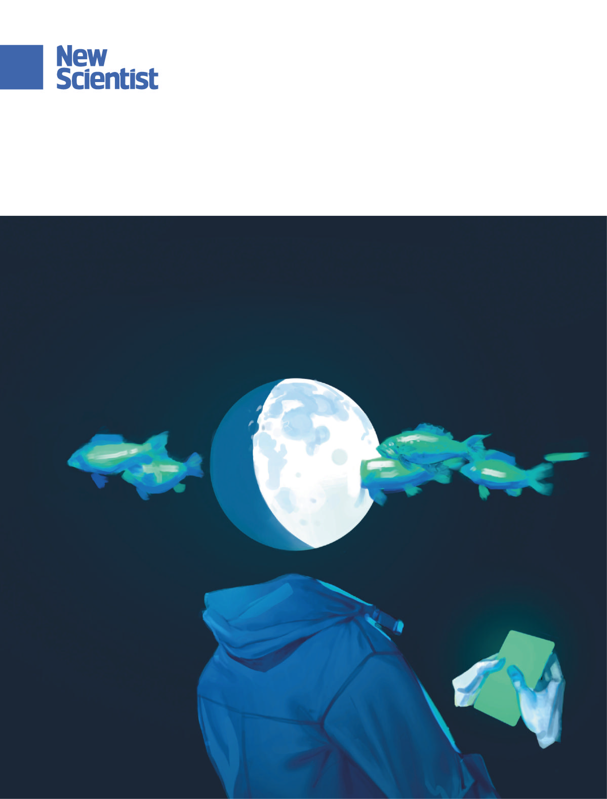
动物和人类心智
自我与自由意志
基础知识
睡眠与梦境
意识改变状态
意识与现实
指南
第12期
更多内容
意识
理解机器中的幽灵
编辑
RICHARD WEBB
科学家
基础
指南
意识
“令人着迷但难以捉摸的现象；无法明确它是什么，它做什么，或它为什么进化。关于它没有什么值得阅读的内容。”
心理学家Stuart Sutherland在三十多年前的《心理学国际词典》中这样描述意识。
过去几年中发生了很大变化。成像技术为我们体验从爱到颜色到饥饿到恐惧等感觉时大脑中发生的事情提供了新的洞察。生物学家追溯了主观体验首次出现在生命树中的位置，以及其他动物所拥有的感觉。数学模型为意识提供了新的视角。
但在这一切中，我们对意识及其在宇宙中的位置仍有很多不理解的地方——尤其是为什么我们存在这种体验的”困难问题”。这本第12期《新科学家基础指南》全面审视了这一最令人着迷且难以捉摸的现象，我希望它能提供思考的素材。
《基础指南》系列的其他书籍可通过访问shop.newscientist.com购买；欢迎在essential guides@newscientist.com提供反馈。
Richard Webb
新科学家基础指南
编辑 Richard Webb
关于编辑
NORTHCLIFFE HOUSE, 2 DERRY STREET,
设计 Craig Mackie
Richard Webb是《新科学家》执行编辑
LONDON, W8 5TT
+44 (0)203 615 6500
副编辑 Bethan Ackerley
© 2022 NEW SCIENTIST LTD, ENGLAND
制作和应用程序 Joanne Keogh
其他贡献者
新科学家基础指南
技术开发（应用程序）
Anil Ananthaswamy, Philip Ball, Michael Brooks, Andy Coghlan, Sofia Deleniv,
由NEW SCIENTIST LTD出版
ISSN 2634-0151
Amardeep Sian
Liam Drew, Liz Else, Linda Geddes, Alison George, Bob Holmes, Rowan Hooper,
英国印刷 PRECISION COLOUR PRINTING LTD
出版商 Nina Wright
Joshua Howgego, Simon Makin, Tiffany O’Callaghan, Sean O’Neill, David Robson,
MARKETFORCE UK LTD发行
总编辑
Emily Wilson
Per Snaprud, Laura Spinney, Helen Thomson, Richard Webb, Caroline Williams,
+44 (0)20 3148 3333
展示广告 +44 (0)203 615 6456
Clare Wilson, Emma Young
封面：PABLO HURTADO DE MENDOZA
displayads@newscientist.com
上图：LUMEZIA/ISTOCK
下一页：BASHTA/ISTOCK
新科学家基础指南 | 意识 | 1
意识是我们机器中的幽灵。它就是一切：世界、自我、所有体验。但除此之外，意识的主观性使得它难以定义，更难以描述。
第6页 简单与困难问题
第8页 思考意识的五种方式
第10页 寻找意识的所在
第12页 访谈：David Chalmers “为什么我们会有体验？”
第14页 意识与网络化大脑
第16页 观点：Christof Koch “物理学压倒性地支持意识”
通过询问意识的外在表现是什么，并追溯它们在生命史上首次出现的位置，我们可能开始理解为什么这种现象存在——从而进一步了解它是什么。
第20页 为什么意识会进化？
第25页 意识的十个标志
第26页 动物心智内部
第28页 意识的五个要素
第29页 机器人能有意识吗？
第30页 观点：Michael Graziano “意识是一种工程现象”
自我感和其相关特征metacognition（知道自己知道的能力），即监控你自己和他人心理状态的能力，通常被视为意识的巅峰。事实上，它们可能是进化的意外，甚至可能是我们自己想象的产物。
第36页 自我的进化
第39页 哪些动物有自我意识？
第40页 自我是幻觉吗？
第42页 Metacognition：知道你知道
第44页 你的有意识身体
第48页 自由意志与自我
新科学家基础指南 | 意识 | 2
睡眠的真正目的仍然不明确，但在具有某种程度意识的生物体中，它们似乎都会花费一些时间处于意识降低的状态。确切的原因是一个重大问题——正如我们在非清醒时间内似乎进入的许多不同意识状态的意义一样。
许多意识的改变状态都存在，从麻醉和自然或药物诱发的幻觉到微意识状态如昏迷。在所有情况下，我们大脑中发生的事情远非一目了然。
我们内在世界与外在世界之间的关系——物理过程如何设法产生意识，也许还有意识如何影响物理过程——是意识的另一个重大奥秘，至今仍鲜有答案。
页码索引： - p. 52 我们为什么睡觉？ - p. 55 睡眠时的大脑 - p. 57 入睡幻觉 - p. 57 梦的意义 - p. 58 梦何时发生 - p. 62 麻醉之谜 - p. 66 幻觉的力量 - p. 68 迷幻：更高的状态？ - p. 69 意识的奇异现象 - p. 70 自由意志的缺失 - p. 71 隐蔽意识 - p. 73 六种意识降低状态 - p. 74 死亡时意识会发生什么？ - p. 75 观点：Daniel Bor “意识是关于整合信息” - p. 80 意识的物理学 - p. 84 意识创造现实吗？ - p. 88 宇宙有意识吗？ - p. 93 观点：Anil Seth “我们需要解决意识的真正问题”
《新科学家》基础指南 | 意识 | 3
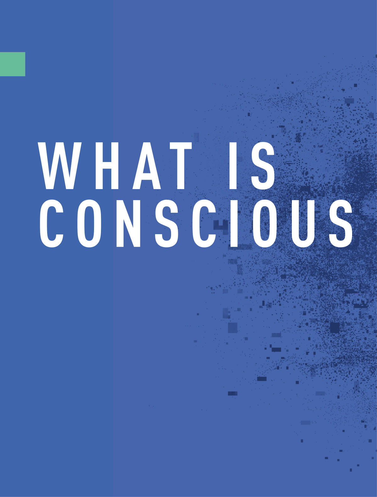
意识是机器中的幽灵。对我们每个人来说，它就是一切：世界、自我、所有经验。
但意识的主观性使其难以定义，更难以描述。我们的大脑如何创造意识体验和存在感？我们为什么要有这些感觉？这些都是未解之谜，处于意识奥秘的核心。
4 | 新科学家基础指南 | 意识
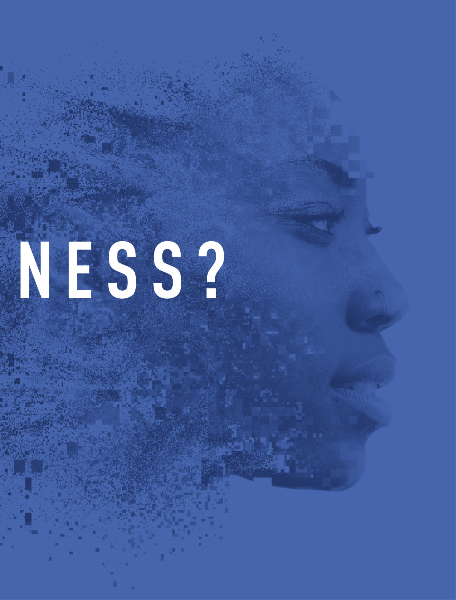
在与意识奥秘搏斗的科学家和哲学家中，近几十年来出现了一个流行的划分——在询问意识是由什么构成的，以及为什么它根本存在之间。两个问题都不容易回答，但其中一个显然更困难。
ONSCIOUSNESS是一个难以捉摸的概念。它不仅仅是你头脑中的东西；它是其中一些东西的主观体验。当你踢到脚趾时，你的大脑不仅仅处理信息并触发反应：你有疼痛的感觉。感到疼痛；体验快乐；闻到洋葱煎炸的味道；感到羞辱；在人群中认出朋友；反思你比去年更明智——所有这些都是意识体验的例子，有时称为”感质”(qualia)。
奥秘始于这些体验是由什么构成的。在1600年代，哲学家勒内·笛卡尔著名地将宇宙分为”心灵物质”(res cogitans)和”物质材料”(res extensa)，提出了两者如何能够相互作用的难题。他确信身体和意识心灵是两种不同的物质：前者由物质构成，后者是非物质的。
今天，大多数——虽然不是全部——科学家拒绝这种严格的”二元论”观点。相对正统的
[PABLO HURTADO DE MENDOZA] [上一页：LUMEZIA/ISTOCK]
6 | 新科学家基础指南 | 意识
二元论
大脑和心灵是两个独立的东西，意识体验很可能无法通过物质运作得到完全解释。
一元论
大脑和心灵是同一个东西，意识最终是一种源于物质运作的现象——在人类中，是大脑的物质。今天一元论的主要分支是…
物理主义
支配我们大脑中电和化学信号的现有物理定律最终足以解释意识和我们心智的运作。理解这些运作，我们应该能够”看到”不同意识体验的物理标记，从而知道其他人正在经历什么。
泛心论
今天的科学观点被称为物理主义（见右侧”思考意识的五种方式”）。意识与物质相关或从物质中涌现，特别是我们大脑中神经元的放电。但大脑这个物理对象如何产生意识这一非物质本质？
在20世纪最后几年，纽约大学的哲学家David Chalmers做出了一个有影响力的区分
意识：“容易”和”困难”的问题。源于意识是宇宙本身基本组成部分这一理念，这表明所有物质——甚至可能是岩石等无生命物体——都具有某种程度的意识，这种意识可能无法用当前基于物质的物理学来解释。如果我们能找到一种意识的测量方法，我们就能量化不同物体拥有多少意识。
“容易”问题包括解释与意识相关的大脑过程，如感官信息的整合、学习、思考以及清醒或睡眠状态。这些问题被称为容易问题并非因为它们微不足道，而是因为看起来没有理由认为它们不能通过物理机制来解决——尽管可能是非常复杂的机制。
第四章更深入地探讨睡眠和梦境
幻觉主义者同意物理主义者的观点，即我们的意识体验在大脑运作中具有物理基础，但他们认为这些是来自大脑监控自身过程的幻觉体验，并不代表世界的”真实”属性。
困难问题是Chalmers在1994年的一次科学会议上提出的，即解释我们为什么会有主观体验。“意识在心智科学中提出了最令人困惑的问题，”Chalmers说。当我们思考和感知时，正如他所说，大脑中有”信息处理的嗡嗡声”，但也有非常独特的主观心智状态。
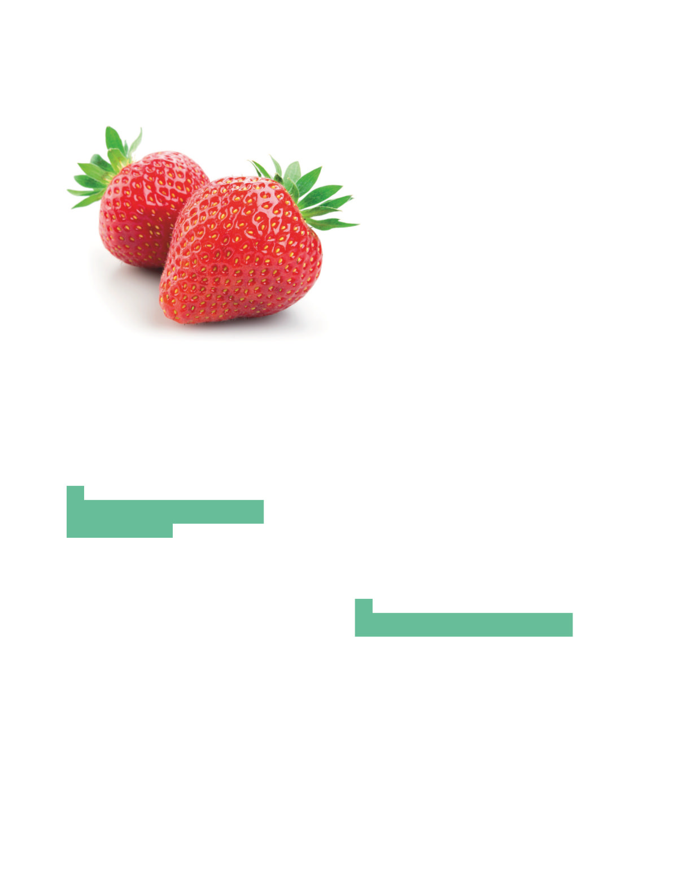
红色对别人来说是什么样子的？
我们不只是感知世界；我们感受世界。意识思维可以影响身体和世界：移动手臂的意识欲望会导致物理运动。就像颜色是大脑创造的幻觉一样，意识和我们的自我意识也是如此。“意识是进化设计的用户幻觉，目的是让必须引导身体度过危险生活的大脑更轻松，”马萨诸塞州塔夫茨大学的哲学家Daniel Dennett说，他是著名的幻觉主义者。如果我们的大脑是智能手机，意识就是屏幕，个体体验就是其上的图标，我们与大脑的界面。
→ 第六章更深入地讨论意识和现实
这些体验对外部观察者来说似乎根本无法知晓。别人对悲伤、疼痛、洋葱味道或红色的体验实际上是什么样的？纽约大学的Thomas Nagel在1970年代著名地表达了这个难题，他问道：“成为蝙蝠是什么感觉？”你可能知道蝙蝠大脑物理运作的每个细节，但仍然不知道那只蝙蝠正在体验什么。
→ 第三章更多关于意识自我的内容
这个比喻并不完全准确：例如，当我们感到头晕或确定声音来源时，这是大脑中物理过程的结果。从这个意义上说，你可能会把意识看作更像是智能手机屏幕，根据剩余电量或受到多少震动来呈现不同的应用程序。
当涉及困难问题时，观点差异很大。幻觉主义学派的拥护者完全摒弃这个问题，说困难问题在没有问题的地方制造了问题。他们说，我们通常不谈论我们的感受质(qualia)：我们谈论诸如疲倦、需要吃东西甚至恋爱等事情。所有这些现象在我们体内激素运作等方面都有相对直接、非神秘的生物学起源。如果我们体验草莓为”红色”，那不是因为真实世界是那样的，而是因为我们的视觉系统有效地为我们进行颜色编码以简化世界。
然而，这仍然是少数观点：大多数研究者相信意识是真实现象，通过深入研究大脑运作的奥秘，我们可以阐明其本质。但这远比说起来容易得多。
爱情、疼痛或色彩感知是由什么构成的？我们的大脑如何构建意识体验长期以来一直是个谜——但我们正在慢慢发现线索。
早在1998年，两个年轻人坐在德国北部不来梅的一个烟雾缭绕的酒吧里。神经科学家Christof Koch和”意识困难问题”的提出者、哲学家David Chalmers在一天的意识会议讲座后，仍有更多话要说。几杯酒下肚后，Koch提议打个赌。他打赌说在接下来的25年内，会有人发现”意识的神经关联”——一种与特定意识体验相关的特定大脑活动模式。
意识可能用类似方法来解释。脑电图(EEG)等成像技术为研究人员提供了工具，可以在执行各种不同任务时观察大脑的活动模式，希望找到特定意识体验的物理特征。
一个早期的惊喜是小脑——一种挂在皮层后面的迷你大脑，包含大脑中约860亿神经元的大约四分之三——似乎与意识几乎没有关系。我们知道这一点的一个原因是，有些人生来就没有功能性小脑。
某种特定的意识状态，比如经历一次痛苦的牙疼的体验。Chalmers说这不会发生，并且打赌反对这个观点。
这个打赌植根于主导的物理主义意识学派——意识是一种真实现象，其物理起源可以被揭示——特别是在一种解决意识问题的方法中，这种方法是Koch开创的。Koch现在是西雅图华盛顿州Allen脑科学研究所的主席和首席科学家，他与DNA的共同发现者Francis Crick一起开创了这种方法。
在DNA研究工作中，Crick将生物遗传性的奥秘归结为一小组分子的几个内在性质。他和Koch认为
[cerebellum，虽然他们经历一些问题，]
意识缺失并不是其中之一。
[令人沮丧的是，类似的观察结果破坏了]
[大脑内大多数”意识中心”的建议。以Koch和Crick]
[一度青睐的观念为例，他们认为皮质下方一个称为屏状核的片状结构对]
[意识至关重要。有理由保持乐观：2014年的一个]
[病例研究显示，电刺激一名女性大脑中的这一]
[结构导致她茫然地凝视前方，似乎失去意识，直到刺激]
[停止。但另一项研究描述了某人在其屏状核被]
[脑炎破坏后仍保持完全清醒，从而破坏了这一想法。]
新科学家意识基础指南第10页
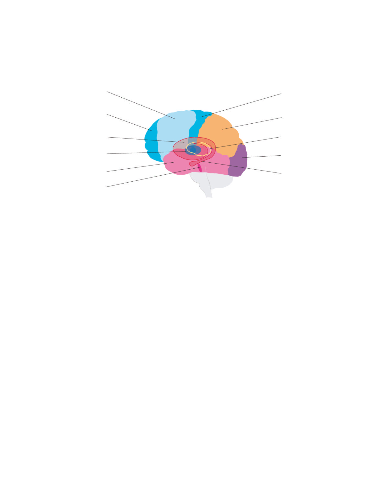
大脑的许多区域都与我们意识体验的各个方面有关，
这意味着寻找单一意识中心的努力至今毫无结果
额叶 运动皮层
复杂行为、交流、 自主运动的计划和控制
记忆、注意力和人格
前额皮层 顶叶
情绪调节、 语言、注意力和感官
直觉、洞察力、共情
基底神经节 丘脑
运动、奖赏和情绪 感觉输入的中枢站
苍球内节 枕叶
自主运动调节 视觉
颞叶 纹状体
记忆和感官 参与行为和运动的
脚桥被盖核 多个方面
运动启动
然而，一些神经元束确实对意识至关重要。如果丘脑的特定部分或脑干的特定区域受到损伤，结果可能是永久性无意识。但问题仍然是这些大脑区域是意识产生的核心，还是更像是一个电源插座，只是让插入其中的任何东西能够工作。
一些研究者认为前额皮层(PFC)起着至关重要的作用，它负责包括注意力、决策和计划在内的复杂认知过程。他们认为，来自外界的信息要成为意识感知——比如你真正看到一个红苹果——它不仅必须由负责处理该信息的大脑部分，即感觉皮层来处理，还必须由PFC来处理。对人类和猕猴的神经影像学研究支持这一观点，但怀疑者说这些研究显示的PFC活动可能与思考刺激和计划反应有关，而不是意识到它。再次，有些人因肿瘤或癫痫发作而手术切除了大部分PFC。“大体上，他们继续过着正常的生活，从未抱怨自己变成了僵尸，”Koch说。
[同事们进行了证据回顾，]
[并得出结论，只有PFC的两个区域，即眶额皮层和前]
[扣带皮层的刺激，有时会改变意识体验的报告。]
[似乎它们支持意识体验的情感方面，以及自我产生]
[意识体验或元意识(对意识的意识)，但可能不涉及更]
[基础的感官知觉意识。看起来]
[大脑皮层后部的一个区域——Koch称之为]
[“后部热区”——对此至关重要。]
[一个显然对意识重要的后部区域是顶叶皮层，它处理]
[来自身体的感觉信息。2021年，威斯康星大学麦迪逊分校的Mohsen]
[Afrasiabi和Michelle Redinbaugh等人报告了对]
[睡眠、麻醉或清醒状态的猕猴的研究。他们得出结论，顶叶皮层、纹状体和丘脑之间的连通性]
[是意识状态的”标志”。]
[总的来说，这仍然是一个令人困惑的画面——随着]
[他的赌约时间流逝，Koch预期会败北。“额叶皮层的更前部区域，更不用说其他大脑区域，]
[对意识的贡献程度将在未来许多年内保持开放，”]
[他说。“毕竟，大脑是已知宇宙中最复杂的活性物质。”]
虽然我们在理解大脑活动模式如何与意识体验相关方面取得了一些进展，
但我们为什么会有意识这一基本问题仍未解决， David Chalmers说
“为什么存在某种
成为我们的感受？“
一个人是如何成为意识哲学家的？
档案
DAVID 对我来说，意识问题是宇宙中最有趣的未解问题——
我们存在的一个核心方面，我们几乎
CHALMERS 完全无法理解。我实际上是从数学家开始的，在数学博士学位上走了一部分路程
“困难问题”的提出者 为什么世界上存在意识这个问题。但我逐渐被这个问题所困扰
意识哲学家David 我想，我要如何从宏观角度来研究这个问题？
Chalmers是纽约大学 哲学是一个允许你整合科学技术、历史和
心智、大脑与意识中心 所有事物的领域，所以我最终转而学习
的联合主任 哲学、认知科学和人工智能，并最终成为意识哲学家。
关于你与Christof Koch关于寻找意识神经相关性的赌注：你已经赢了，不是吗？
对我来说看起来相当不错。我非常愿意接受这样的想法：最终我们会在大脑中找到某个与意识相关的系统或属性——这看起来很有希望。但根据我的经验，你越深入这些路径，发现的问题就越多。我还没有找到任何让我真正满意的东西。
这个赌注是关于到2023年，神经元的某个内在属性或少数几个属性会被公认为意识的神经相关物，就像DNA对基因的作用一样。这不会完全解释意识，但会是巨大的一步。
我对此一直很怀疑：我认为这会比那复杂得多，需要更多时间。
与此同时，更广泛的意识困难问题似乎仍然像以往一样难以解决。为什么它如此困难？
困难问题是解释主观经验的问题。为什么成为我们会有某种感受？当我们看、听时，信息撞击我们的感官器官并被大脑处理，然后导致行为。我们可以对所有这些讲述一个很好的机械论故事，以及它如何解释学习、语言或记忆等事物。但为什么这从内部感觉像是某种东西？为什么存在听觉和视觉的主观经验？为什么它不是在没有意识的黑暗中进行？这看起来就是一种不同类型的问题。
虽然我们还没有确定意识的神经相关物，但我们正在更好地理解大脑活动与意识之间的相关性。当涉及为什么存在意识这个问题时，我们探索了一些理论选择，其中许多都非常有趣且有前景。但根据我的经验，你越深入这些路径，发现的问题就越多。我还没有找到任何让我真正满意的东西。
总的来说，我支持那些不试图将意识还原为大脑过程或更简单事物的观点，而是将其视为基本的东西，就像空间、时间、质量和电荷可能是基本的一样。我特别认真对待泛心论(panpsychism)，即在物理现实的基本层面存在某种意识元素，以某种方式累加并产生我们的意识这一观点。还有一个观点是，也许意识与任何在物理世界中发挥作用的物理过程都是不同的。
这里有句老话是什么来着？如果心智简单到我们能理解它，我们就会太简单而无法理解心智。有些人认为我们能理解自然本身就是一个奇迹，所以也许有些事情我们就是太笨而无法理解。我希望情况不是这样。我认为原则上最终拥有一个意识的科学理论没有任何障碍。科学和哲学是一个需要几个世纪或千年的过程。可能即使在100年后，所有这些看起来都会非常不同。
随着寻找意识中枢的努力未能找到令人信服的答案，注意力已转向这样的观点：意识依赖于神经元的网络特性，以及它们如何处理信息。这是两个主要意识模型的起点：全局工作空间和整合信息理论。
早在2005年，由威斯康星大学麦迪逊分校的Giulio Tononi和米兰大学的Marcello Massimini领导的一个神经科学家团队，通过经颅磁刺激向大脑注入一个能量脉冲，然后使用脑电图监测反应。他们发现，能量脉冲产生的电回声会在有意识的大脑中四处反弹，但在无意识的大脑中保持非常局域化。
全局工作空间——然后在协调活动的闪光中产生反响。结果是对世界的心理解释，它将所有感官整合到单一画面中，同时过滤掉冲突的信息片段（见右图）。
这个概念的一个流行版本是，皮层中特殊的”工作空间神经元”，主要在大脑前部，通过它们的长距离连接广播信息。全局工作空间理论似乎与许多关于大脑的发现相符。然而，批评者问道，它是否解释了主观经验本身，还是仅仅指示信息何时被处理。
换句话说，有意识的大脑连接性更强，[可用于推理、言语和身体控制。]
此类见解已经被融入到更加复杂的观点中，这些观点认为意识不是源于特定细胞的工作或大脑的任何单一区域，而是源于神经元网络的特性。
全局工作空间理论可能是这些观点中最具影响力的。该理论由加州圣地亚哥神经科学研究所的Bernard Baars于1983年首次提出，它提出非意识体验在大脑的独立区域内（如视觉皮层）进行局部处理。只有当这些信号被广播到分布在大脑许多不同区域的神经元集合时，我们才会意识到这些信息——
其他基于网络的观点表明，意识是信息被[整合的结果，使其超越各部分之和。]
[一个引起广泛关注的理论是整合信息理论(IIT)，这是Tononi的创想。它]基于这样的观察：我们意识觉知的每一刻都是统一的。当你凝视一束花朵时，比如说，不可能独立于其香味而意识到花朵的颜色，因为大脑已经整合了感觉数据。Tononi认为，要使一个系统具有意识，它必须以某种方式整合信息，使整体包含的信息超过各部分之和。他提出了一个衡量系统如何整合
14 | New Scientist Essential Guide | Consciousness
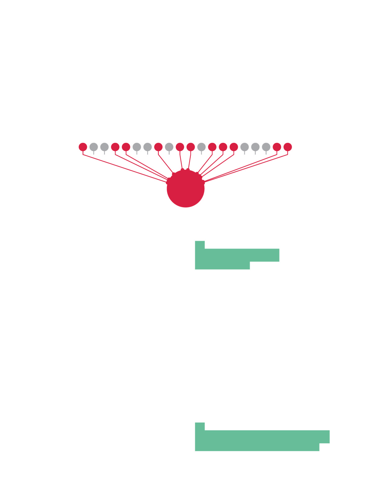
全局工作空间理论表明意识产生
于大脑中高度协调的广泛活动
感知
视觉、听觉、味觉和触觉首先在大脑的小块局部区域进行处理
有意识的 全局 非意识的当信号被广播到更广泛的 工作空间 当信号保持局部化时，大脑皮层神经元网络——全局工作空间——时，我们对感觉产生意识 相关的感觉不会被意识感知
信息的量度——作为任何系统中意识”量”的代理——他称之为phi。非常粗略地说，在由能够快速有效相互作用的专门模块组成的系统中，phi会很高。这对于大脑皮层的大部分是正确的。相比之下，小脑的phi很低，因为小脑由主要独立工作的模块组成。
通过这种方式，IIT反映了关于大脑的一些观察——例如，中风或肿瘤如何可能破坏小脑而不会显著影响意识，而对皮层的类似损伤通常会干扰主观体验。IIT的知名支持者包括Christof Koch，他认为这与他的工作相符，该工作指向后皮层高连接”热区”的活动，高phi是意识的神经相关物。
然而，IIT的问题在于，有太多方式可以将像人类大脑这样复杂的系统，甚至其组成部分进行分割，以至于在任何实际情况下计算phi几乎是不可能的。它表明像电子逻辑门网格这样的无机物可能具有极高的意识程度，因为它以相同的方式整合信息，甚至可能意味着宇宙本身具有某种形式的意识。
→ 更多关于有意识宇宙的内容请参见第88页
这些远不是唯一的意识理论。例如，普林斯顿大学Michael Graziano提出的”注意图式”模型与虚幻主义思想流派密切相关。它提出大脑进化出了一个关于如何表征自身的模型。这种注意图式就像一面自我反射的镜子，正是它创造了意识的主观感觉。没有”机器中的幽灵”；意识只是由复杂神经处理创造的海市蜃楼。
与此同时，英国萨塞克斯大学的Anil Seth提出了一个叫做”预测性处理”的观点：大脑是一台预测机器，意味着我们感知到的是大脑对其感觉输入原因的最佳猜测。因此，意识体验和自我认知的很大一部分是基于我们的期望，而不是实际存在的东西。❚
→ Michael Graziano和Anil Seth分别在第30页和第93页更深入地解释了他们的观点
“物理学压倒性地支持意识”
意识的数学模型，如整合信息理论，可以帮助我们更好地理解意识是什么。
快速浏览一下声称解释意识的数千本书籍，会让人觉得真正理解意识是一项艰巨的任务。毕竟，任何形式的神经活动与主观感受之间存在着深刻的解释鸿沟。前者属于物理学领域，涉及时空、能量和质量；后者属于体验。虽然体验是短暂的，但它们是生命的本质。我们了解世界、了解时空、了解能量和质量、了解任何事物的唯一方式，都是通过看、听和嗅，通过欲望和仇恨，
档案 CHRISTOF
通过记忆和想象。这两个领域密切相关，这从中风、头部重击或
[KOCH] [一个神经外科医生电刺激一个人大脑的某个部分，唤起了一个童年记忆。]
[Christof Koch是] [物理学方程式中，也不在化学元素周期表中，更不在意识并没有出现在]
[艾伦脑科学研究所] [我们基因的A-T-G-C分子对话中。不知何故，]
[的首席科学官] 它从神经系统中涌现出来。[位于华盛顿] [我花费了三十多年时间——前]
[著有多本关于意识的] [16年与我的导师、同事和朋友]
[书籍，包括] [Francis Crick合作——将意识的特定方面]
[《生命本身的感受》] [与哺乳动物大脑联系起来。我们推广了]
意识的神经元相关物(NCC)的概念：
最小的神经元机制——突触、
神经元和大脑区域——它们共同足以
产生任何一种有意识的感知。
从那时起，已经取得了很大进展。我们现在

知道构成大脑主体的大脑皮层的某些区域 [新皮层比小鼠的厚约两倍，]
（就其大小而言，它是宇宙中最复杂的 表面积约是小鼠的1000倍。它是一个
器官）与意识有着特殊的关系，并非所有 [高度通用的计算组织，擅长]
区域都平等地参与生成 [处理感觉信息、建立和存储]
有意识体验的内容。微电极和磁 [关联，以及规划和产生复杂的]
扫描仪也向我们展示了新皮层可以 [运动模式。新皮层被分为]
在不一定产生有意识体验的情况下保持活跃。 [多个区域，由较小的柱状结构组成，在]
这就是无意识的领域。 物种和大脑区域之间具有相当相似的细胞类型和架构。
然而，Crick和我深入研究。为什么特定的 [我们的大脑”观测站”旨在识别、记录和]
NCC会产生一种特定的有意识体验？ [干预小鼠视觉引导行为背后的皮层网络，]
为什么高度组织化物质的特定振动 [包括视觉感知、决策制定，甚至小鼠]
会触发有意识的感觉？这看起来就像 [意识。快速发展的光遗传学技术]
摩擦神灯让精灵出现一样神奇。 [使我们能够在确定的时间控制小鼠大脑中]
我们需要的是一个关于任何系统中的 [确定神经元中的确定事件——]
活动如何产生意识的基本解释。 [也就是说，从相关性转向因果关系。建设]
因此，我们转向威斯康星大学麦迪逊分校 [这些观测站是一个大规模的努力，旨在综合]
Giulio Tononi的观点。 [解剖学、生理学和理论知识]
他倡导一种复杂的信息论 [构建大脑皮层模型，这有]
意识解释，称为整合信息论。 改变我们对哺乳动物大脑理解的潜力。
这个想法引入了一个精确的测量，称为phi， [在我理解意识的整个探索过程中，]
它捕捉意识的程度。以比特表示， [我从未失去生活在神奇宇宙中的感觉。我]
phi量化任何相互作用部分系统 [相信一些深层和基本的组织原理]
在进入特定状态时既分化又整合的程度。 [创造了宇宙并为了我无法理解的目的]
这是现象体验的核心：任何一种 [使其运动。我从小就称之为上帝。]
有意识体验都与任何其他体验高度分化， 先驱一代的恒星必须在
同时也是统一的、整体的。phi越大， [壮观的超新星中死去，才能在空间中播撒]
该系统的有意识体验就越丰富。 [自复制化学物质袋所需的较重元素，]
整合信息论对哪些大脑回路 [在一颗年轻恒星周围的岩石行星上，]
参与意识、哪些是边缘参与者 [距离恰好合适。自然选择的竞争压力]
做出了具体预测， [使具有神经系统的生物得以崛起。]
即使它们可能包含更多神经元。 [随着这些系统的复杂性]
该理论应该让医生建立一个意识 [增长到惊人的程度，一些生物]
测量仪来测量严重脑损伤患者 进化出反思自身的能力，
处于植物状态的程度，以及哪些患者 思考它们美丽但残酷的世界。
部分有意识但无法表达其痛苦和不适。 虽然有情生命的兴起是不可避免的，
在西雅图华盛顿的艾伦脑科学研究所， [但这并不意味着地球必须承载生命，或者]
我们一直在追求不同的策略。 [两足、大脑袋的灵长类动物必须]
我们的目标是理解信息如何在小鼠和 [行走在非洲草原上。]
人类大脑新皮层及其附属结构中被编码、 [但我相信物理定律压倒性地]
转换和表示。 [有利于意识的出现，这些]
新皮层是一个分层结构：人类 定律将引导我们获得或多或少完整的意识知识。❚
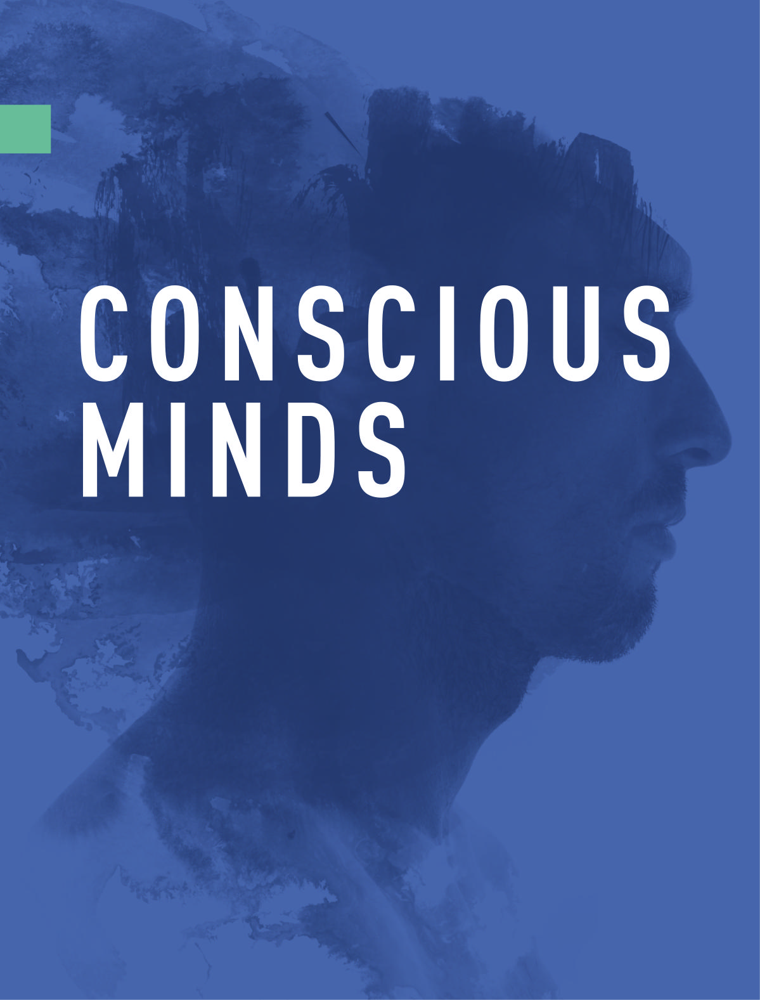
第2章
18 | 新科学家基础指南 | 意识
我们知道——或者我们认为我们知道——我们是有意识的。
但是你的宠物狗或猫，或者会使用工具的乌鸦，或者顽皮的章鱼或蠕动的蠕虫呢？
回答这些问题似乎是不可能的。我们还没有找到任何独特的大脑活动模式来表明即使在人类中也存在意识，而且我们几乎无法询问其他动物关于它们的体验。
但是提出这些问题确实提供了另一种方法来接近意识现象。通过询问其外在标志是什么，并追溯它们在生命史中首次出现的地方，我们可能开始理解为什么意识存在——从而了解更多关于它是什么的信息。
意识
会进化？
直到最近，关于什么意识可能因为多种原因而进化——或者可能意识的作用的问题在很大程度上被忽视了。完全没有原因。有些人认为，它并非拥有生存优势，而是一种”副现象”，
但现在进化生物学家开始只是作为智能的自动属性而出现。
在生命之树周围摸索，以然而，对大多数人来说，这有点像逃避。 “我的猜测是，意识，
考虑我们自己的意识要素何时何地由于其复杂性和出现——因此为什么会出现。代价，实际上为其拥有者提供了适应价值，“西雅图华盛顿大学的心理学家David Barash说道。
然而，追踪我们所称的意识的进化有其自身的困难。“意识不会留下任何化石记录，”英国苏塞克斯大学的Anil Seth说。我们必须通过比较今天活着的动物并回推它们的共同祖先可能能够做什么来推断其进化历史。但是因为我们真的不知道我们在寻找什么，我们必须在进化树周围摸索，只以我们自己的意识体验作为指南。
一些迹象似乎很明显。黑猩猩能在镜子中认出自己。如果另一只鸟看到了它们第一次藏食物的地方，灌丛鸦会偷偷回去重新藏食物——除非观察者是它们的伴侣。推错杠杆而没有得到食物奖励的老鼠会遗憾地凝视着它们本应推的杠杆。在这些情况下，我们可以推断出某种对
20 | 新科学家基本指南 | 意识
自我、他人以及可能发生的事情的意识，这与奖励通路相关。他认为看起来很像我们在自己身上认识到的意识这是分配体验价值的能力（见”意识的10个征象”，第25页）。然而，如果这是唯一的标准，那么通过清除标准的非人类动物将非常少，因为很少有动物表现出我们可能与我们的意识相关的外在征象中的几个以上。
→ 第3章更多关于自我意识 -
有理由考虑更广泛的基准：不是每一种有意识的体验都像遗憾或自我意识那样复杂，即使对我们来说也是如此。“如果你问自己，你意识到什么…你看到颜色，你闻到咖啡，你感受到疼痛，”纽约CUNY研究生院的哲学家Jesse Prinz说道。“意识看起来很大程度上关于感知和情感：它不是关于思想或更高级、更人性化的能力。”这些有意识体验的基本组成部分可能很普遍，即使在缺乏我们的心理复杂性和脑力的动物中也是如此。
考虑情感——或者用不太人类中心主义的术语来说，“享乐价值评估”。正如Prinz指出的，我们的有意识体验大部分由带有情感色彩的感知组成：物体是舒适的或可怕的，声音是令人愉悦的或令人讨厌的，我们的身体感觉良好或不好。这种评估在指导我们的行为方面起着关键作用。
大约在3亿年前出现在现代爬行动物、鸟类和哺乳动物的共同祖先中——第一个完全陆生的脊椎动物。这是有道理的。这个祖先会面临其水生同类没有的挑战，比如体温调节和水分保存。
简单的动物有反射或”无意识”的反应，甚至蠕虫都能通过试错学习固定的行为模式，但具有享乐价值评估的个体能够进行更加灵活的行为。在这种新环境中，这种适应性将是一个巨大的优势。
这并不意味着它没有缺点。与感官数据的无意识处理相比，它是缓慢和耗能的，一次只能做一件事。更重要的是，它可能导致任性甚至有害的行为 ——例如，没有有意识的思想就不会有自我伤害。尽管如此，它似乎足够有用，可能不止一次进化。2020年，德国图宾根大学的Andreas Nieder 进行了一项巧妙的实验，发现了支撑鸦科鸟类（如乌鸦）视觉意识的大脑处理。这些鸟被训练对不同颜色的方块做出反应，其中一些几乎无法察觉地微弱。当乌鸦报告时，称为苍白端脑的区域的神经元会亮起
行为是关于朝着有益的事物前进或远离无益的事物。情感旨在通过提供积极和消极的奖励来指导我们，挪威奥斯陆公共健康研究所的进化生物学家Bjørn Grinde说道。这使得快乐价值评估(hedonic valuation)成为一个有用的进化工具。
Grinde认为这种感觉——意识到某些好事（或坏事）正在发生在你身上——可能代表着意识的黎明。调查脊椎动物家族树，他看到了一个清晰的模式：哺乳动物、鸟类和爬行动物都表现出情绪反应的迹象，如在被处理时心率增加和体温升高，而鱼类和两栖动物则没有。高等脊椎动物的大脑在多巴胺受体方面也更加丰富，多巴胺是与[看到方块最密切相关的神经递质，但当它们未能发现时则不然，这表明这个区域对它们的意识视觉感知至关重要。在人类和灵长类动物中，大脑的不同部分——前额叶皮层——执行同样的工作。因此，Nieder认为意识可能在多个场合分别出现，就像翅膀在昆虫、鸟类和蝙蝠中分别出现一样。
← 回到第10页了解更多关于定位人类意识所在地的内容
虽然许多研究者同意哺乳动物、鸟类和爬行动物有一些特殊之处，但许多其他人认为意识也存在于动物王国的其他地方。他们指出，情绪的迹象在我们越远离自己时变得越难辨别。我们能识别鱼类的情感表达吗，更不用说果蝇了？相反，许多研究者正在趋向于另一个指标。
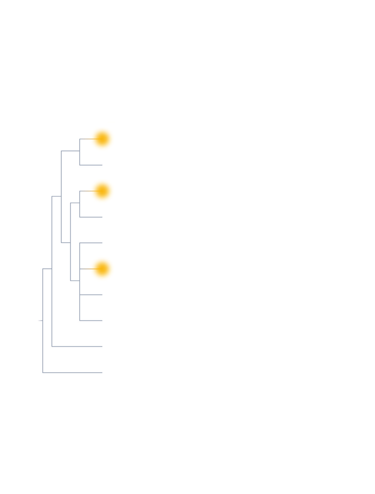
在至少三个不同门类的动物中发现了意识的迹象，这表明意识进化了不止一次，并且比大多数人认为的更加普遍
脊索动物门
棘皮动物门
节肢动物门
线虫动物门
环节动物门
软体动物门
轮虫动物门
扁形动物门
刺胞动物门
海绵动物门
忘记像情感、理性或想象力这样的复杂能力吧。研究者们提出，如果一个动物主观地体验世界：如果它具有我们自己体验中独特的”我，在这里，现在”的元素，那么它就是有意识的。
像快乐价值评估一样，主观体验允许行为灵活性，这超越了单纯的反射反应。这听起来像是意识的一个合理基础，但你如何测量动物的主观体验呢？Bruno van Swinderen认为他找到了一种方法。这位澳大利亚布里斯班昆士兰大学的神经科学家相信，主观性的本质是选择性注意——在所有可获得的感官信息中只专注于少数几个元素——因为它表明个体正在控制自己的感知。“我不确定主观体验和选择性注意之间真的有多大区别，”他说。
为了发现果蝇是否具有选择性注意能力，van Swinderen训练它们在悬浮在空气垫上的轨迹球上行走，面对投射到LED环绕墙上的虚拟场景。通过转动轨迹球，果蝇可以移动场景并选择关注两个物体中的哪一个。图像以不同的频率闪烁，这样当果蝇关注特定物体时，它会在神经活动中产生显著的频率，这些活动由植入其大脑的探针记录。结果令人惊讶。“这就像一个聚光灯。有一个动态的注意力窗口在移动，其他竞争的物体被抑制了，”van Swinderen说。“这个小果蝇大脑真的具有注意力能力。对我来说，这就是意识的黎明。”
像这样测量注意力非常耗费人力，但可能有一种更简单的方法：到目前为止，似乎能够集中注意力的动物也是需要睡眠的动物。这些包括脊椎动物、昆虫、甲壳类动物和章鱼，但可能不包括海星、蠕虫和水母等更加呆滞的动物。
→ 第4章有更多关于睡眠和做梦的内容
有趣的是，van Swinderen还发现昆虫和脊椎动物对全身麻醉剂的反应几乎相同。“击倒一只果蝇的浓度与击倒一头大象的浓度几乎相同，”这暗示两者以相似的方式失去意识，他说。相比之下，线虫蠕虫不太可能有选择性注意或任何接近意识的东西，需要10倍的麻醉剂才能停止移动。
→ 转到第62页了解更多关于麻醉剂的信息
对选择性注意的寻找表明，你正专注于某事并理解你能多快转移注意力等等。根据Graziano的”注意力模式”理论，这个模型——而不是选择性注意本身——负责我们对世界的意识觉知。他推测这种程度的心理复杂性可能只存在于脊椎动物中。
↓ Michael Graziano在本章第30页解释了他的想法
以色列特拉维夫大学的进化生物学家Eva Jablonka也认为意识不仅仅是选择性注意。她相信我们应该寻找”无限联想学习”作为意识起源的标志。
这是将多个线索编织成一个单一的能力
类似意识的现象出现在脊椎动物、[感知超越了其各部分的总和，然后]
昆虫和章鱼中，至少如此。我们知道[使用这种复合线索来驱动行为。这]
这三个群体的共同祖先是一个非常[让动物能够灵活应对面临的挑战，]
简单的生物，类似扁虫。现代[而不是依赖硬编程的行为。]
扁虫很少显示出，如果有的话，初步[例如，这意味着它们能够更好地区分]
意识的迹象，所以可以肯定地说共同[健康和有毒的食物来源，]
祖先也缺乏意识。如果是这样，这意味着[基于微小的感知差异。这也是]
意识在三个群体中分别进化。[让我们学会一只低吼的狗在某种情况下可能是友好的]
这强化了Grinde关于意识功能的观点。[但在另一种情况下可能是威胁性的。“这
“当你退后一步开始[标志着最小意识的开始，”]
反思这些系统为什么在特定地方出现时，[Jablonka说。
故事似乎说得通，“Prinz说。这三个群体[无限制的联想学习需要一系列]
都有敏捷、快速移动的动物，它们遇到[大脑功能，不仅是选择性注意，还有]
快速变化的条件。这[将感觉组合成一个感知的能力，]
对灵活决策提出了很高要求。[执行复合动作模式和区分]
然而，并非所有人都相信能够[自我和环境的能力。科学家发现]
集中注意力是意识的标志。[这种复杂学习的证据在动物王国中]
选择性注意是关于数据处理的，[分布得令人惊讶地广泛。“甚至]
普林斯顿大学神经科学家Michael Graziano说。[小鱼也能够做到这一点，“Jablonka说。研究人员已经]
要根据这些数据行动，动物需要[在几乎每种脊椎动物中记录了它]
该注意力的心理模型，原因很像[（可能除了七鳃鳗）；一些]
它需要身体的心理模型。“我说’手臂，[节肢动物，如昆虫和甲壳动物；]
去那里’是可以的，“Graziano说。”但是[少数软体动物，包括章鱼；也许]
我大脑中的某些东西需要有一个模型[一些蜗牛。对其他群体的判断还在进行中，比如]
什么是手臂，它可能的运动等等。“[蠕虫，因为我们没有足够的证据来确定。]
同样，注意力模型会识别[“我们知识中存在巨大空白，”Jablonka说。]
24 | New Scientist Essential Guide | Consciousness
今天还活着，Jablonka建议意识——
由对强大学习能力的选择驱动——
可能帮助推动了那种快速进化。例如，捕食者
我们对某物意识程度的评估[在探测猎物方面会更好，这反过来需要]
必然是以人类为中心的，因为我们只能依靠[找到避免被发现的新方法——推动]
我们对意识是什么以及它与我们自身[捕食者在策略上变得更加复杂。“这是一种]
关联的高度不完美的理解。但其他动物[持续的共同进化军备竞赛，“Jablonka说。]
的某些或所有这些特征[我想不出有什么能如此戏剧性地改变适应性。”]
经常被视为表明某种程度的内在生活。[但意识的出现不仅让动物采用更复杂的行为。]
• 在镜子中认识自己[Jablonka建议它还负责我们在自然界中看到的]
• 对他人的心智有洞察[许多美丽。例如，它导致不同物种进化出伪装。]
• 对做出错误决定表现出后悔[它推动植物进化出鲜艳的花朵，从竞争中]
• 在压力情况下心率加快[脱颖而出以吸引授粉昆虫。“它]
• 大脑中有许多多巴胺受体[完全改变了世界，“她说。”世界]
来感知奖励[本来会是一个非常不同的地方，]
• 在决策中高度灵活[没有意识的话会是一个非常乏味的地方。”]
• 具有集中注意力的能力[当涉及在进化背景下考虑意识时，还处于早期阶段。]
（选择性体验）[虽然研究人员尚未就何时出现]
• 需要睡眠[以及哪些动物拥有意识达成共识，]
• 对麻醉剂敏感[但他们已经丰富了我们对意识是什么]
• 显示无限制联想学习[以及我们自己版本的独特之处的理解。]
但意识的基本要素在我们周围的事实
让许多人感到惊讶。“当我开始时，我真的确信
我们会在哺乳动物中找到它。
↓
有关其他动物意识的更多信息，请参阅下一节
我相当确信我们不会在别处找到它，”
Prinz说。“我已经完全确信
相反的情况是真的。基本机制可以在
各种各样的生物中找到。”
尽管如此，我们已经知道的东西让Jablonka[我们可以从这种方法中得出的另一个教训是]
怀疑意识在早期脊椎动物[意识并不是明确的。“我不认为我们]
和早期节肢动物中进化，在寒武纪大爆发期间，[会找到一条单一的分界线来区分那些]
大约5.4亿年前，当这些群体[享受内在宇宙光辉的物种和]
迅速分化。与此同时，章鱼的意识可能在大约2.5亿年后才进化出来，是在它们的谱系从其他智力天赋较低的软体动物（如蛤蜊和蜗牛）中分化出来之后。
这个起源很有趣。寒武纪大爆发见证了大多数主要动物群体的出现，而那些没有的，“塞斯说。”意识并不只有一种单一的方式。动物王国将充满其他种类的心智和其他种类的意识，而它们不会只是人类意识的迷你版本。我们不是宇宙的中心。”
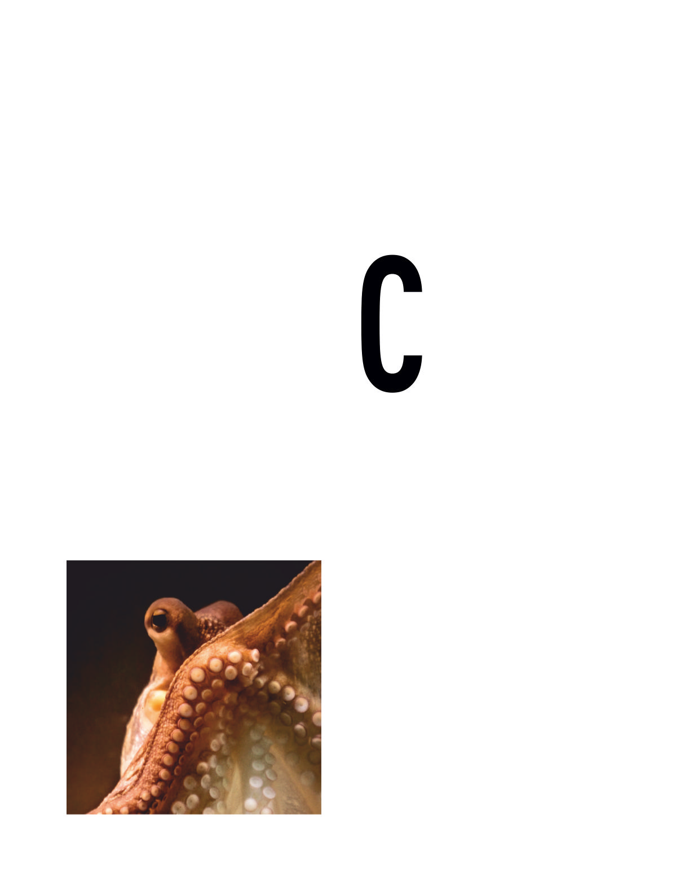
看似有意识行为的证据比比皆是，不仅存在于温血哺乳动物和鸟类中，也存在于非常不同的动物如章鱼甚至蜘蛛中。深入这些异质心智确实极具挑战性。
孩子们都知道把球扔进海里，然后看着海浪把它抛回来的乐趣。加拿大阿尔伯塔省莱斯布里奇大学的比较心理学家詹妮弗·马瑟(Jennifer Mather)和华盛顿州西雅图水族馆的海洋生物学家罗兰·安德森(Roland Anderson)惊讶地发现章鱼也在玩类似的游戏。它们的玩具是一个漂浮的药瓶，它们可以随意忽视或探索。水族馆的六只章鱼很快就失去了兴趣，但有两只表现出了孩子般的好奇心，用触手推动它或射出水柱让它逆着水槽的水流移动。很难将此解释为游戏以外的任何东西，而许多研究者认为游戏需要某种形式的有意识觉知。
章鱼似乎会游戏、计划和通过观察学习——这些都是我们与有意识体验相关联的能力。
当然，挑战在于理解这些生物的内在生活如何与我们自己的不同。在过去，科学家谈论”意识层次”，仿佛存在一个人类处于顶端的等级制度。
然而，伦敦政治经济学院的哲学家乔纳森·伯奇(Jonathan Birch)论证说，我们最好考虑我们可能称之为有意识体验的五个独立的广泛方面（见”意识的五要素”，第28页）。根据伯奇和他的同事们的观点，询问一种动物是否比另一种动物更有意识或更少意识是没有意义的，因为每个物种可能在意识的某些方面得分很高，但在其他方面得分很低。
伯奇的合作者、剑桥大学的尼古拉·克莱顿(Nicola Clayton)的研究提供了一个很好的例子。灌丛鸦埋藏食物以备后食的倾向展现了高度的时间性(temporality)，因为它涉及为未来的稀缺做计划并记住储藏点的位置。与此同时，它们在竞争对手鸟类面前隐藏食物时使用欺骗行为，显示了心理理论(theory of mind)，这也暗示了相对复杂的自我感。
相比之下，头足类动物尚未显示出自我识别的证据。但章鱼对游戏的享受可能是头足类动物能够体验类似于愉悦感的标志——
26 | 新科学家基础指南 | 意识

某种评价丰富性(evaluative richness)的证据。它们也具有非凡的感知丰富性(perceptual richness)，拥有能够检测偏振光的复杂视觉以及通过吸盘进行触觉品尝的能力。
如果你认为意识的基本要素是空间中的自我概念和基于以往经验和当前情况的信息做出决策的能力，那么头足类动物完全符合条件。例如，20世纪80年代的实验涉及向章鱼提供背上有刺痛海葵的美味寄居蟹。
与其他捕食者不同，章鱼在第一次被蛰后并没有退缩。相反，它们尝试各种策略来摆脱海葵：从虹管向它喷水、从下方攻击，并试图用一根触手精巧地提取螃蟹。
当章鱼面对蛤蜊时也表现出类似的狡猾。它们经常试图用喙钻孔来取得里面的肉，然后注入毒素来停止蛤蜊的心脏或使夹紧贝壳的肌肉失效。“有一些证据表明钻孔的位置是习得的——把它放在大多数地方都没用，”
对其配偶的行为。这些看起来很像基于手头信息的有意识决策。
一些章鱼也使用工具，例如，会整天拖着一个沉重的贝壳，以防后来需要它作为庇护所。这表明了提前计划的能力，显示了定义意识的复杂决策制定。“工具使用和观察学习向我表明，如果你能够看着另一个实体并知道它是’他者’，那么很可能存在自我感，”纽约城市大学的头足类动物研究者詹妮弗·巴西尔(Jennifer Basil)说。然而，她警告说，当一个生物与我们如此不同时，很难对它们在想什么，甚至是否在思考有任何想法。
也许物种间最令人吃惊的差异涉及它们有意识体验的统一性(unity)。人类有两只眼睛，但由于连接我们左右脑半球的厚神经束，我们能够无缝地将两个视野整合成单一的有意识体验。鸟类缺乏那种连接结构，这使得伯奇和他的同事推测在每个个体内部，可能存在”一对有意识的主体，彼此密切合作”。
与此同时，在章鱼中，三分之二的神经元位于其触手中，并且有一些
马瑟说：“我认为这必须是’决策制定’。”[每个肢体半自主操作的证据。]
还有许多其他例子展示了可能构成意识[“你可以想象有八种意识体验]
思维的高级能力。章鱼和乌贼可以通过[与不同手臂相关，这些体验]
观察彼此来学习，例如，这表明存在[部分与大脑相关的体验统一，“伯奇说。]
“自我”和”他者”的概念，也许还有[这是一种如此陌生的意识，我们几乎]
将自己在心理上置于那种位置的能力。[无法想象——但这也许甚至不是]
乌贼似乎还能同时发送矛盾信号[我们发现的最令人惊讶的意识证据。]
：雄性可能会向面向身体一侧的雌性[结网蜘蛛将其构造定制以适应]
展示求偶展示，而在另一侧向挑战的[受限空间或绕过障碍物的方式表明]
雄性展示”退后”展示，例如。[既有规划能力又有形成空间心理]
在其他时候，雄性可能试图欺骗他的[表征的能力。当你考虑到大多数]
情敌，通过穿着类似雌性的图案，使[蜘蛛几乎完全失明时，这特别令人]
其他雄性认为他不是威胁，当他靠近时[印象深刻。其他种类的狩猎蜘蛛也似乎]
会规划路线，甚至似乎能够感到惊讶。
这些发现，结合蜘蛛社会性的新证据，表明许多蜘蛛物种具有高级认知能力。然而，这些生物的大脑通常很小：例如，大多数圆网蜘蛛重50到80毫克，有些不到1毫克，而它们的大脑只是其中的一小部分。蜘蛛的古老起源也引发了关于大脑进化的一些深刻哲学问题。此前，我们倾向于在我们的近亲中寻找智能，但将网络扩展到蜘蛛等动物已被证明是有益的。“这一研究方向的成功表明，我们应该小心不要限制我们的研究问题或研究物种，”德克萨斯大学奥斯汀分校研究昆虫认知的卡罗琳·斯特朗说。
为了避免在其他动物中寻找人类特有的特征，伦敦政治经济学院的哲学家乔纳森·伯奇和他的同事建议我们应该专注于意识体验的五个广泛方面，这些方面可以用来区分不同动物的意识程度。
动物在其每种感官中区分不同细节的能力。
广义上说，区分积极奖励和有害刺激的能力，这可能类似于人类的快乐或痛苦等情绪。
动物将来自感觉器官的信息整合到单一体验中的程度。
生物的过去经验是否影响其当前行为，以及它是否能为未来做计划和做出决定。
这可以通过评估动物是否在镜子中认出自己，或具有所谓的心智理论——理解另一个动物有自己心智的能力来测试。
这也令人兴奋，因为这意味着蜘蛛可以提供关于哪些神经结构对意识体验是必要的，以及这些结构如何进化的有价值信息。在脊椎动物中，中脑收集感觉信息和身体信号，然后整合这些信息，创造世界和生物在其中位置的心理模拟。这反过来根据其需求指导其注意力和运动，创造一种”体验性意识”，在此基础上构建其他类型的意识，如自我反思。“它基本上支撑着一切，”澳大利亚麦考瑞大学的安德鲁·巴伦说。
无脊椎动物的大脑采用不同形式，但巴伦认为，一种叫做中央复合体的结构在昆虫中显示出相同的连接性。在蜘蛛中，一个被称为弓形体的区域可能具有相同的目的。蜘蛛大脑的详细研究在神经科学家的优先列表中排名较低。然而，如果进一步的证据支持这些区域创造世界内在表征的想法，这可能帮助我们确定意识体验出现的日期——可能在5亿多年前，当寒武纪大爆发产生了今天几乎所有动物群体时。这意味着意识可能比我们想象的更广泛。❚
有感知的机器是科幻小说的常见题材——但它们可能吗，如果有一个，我们会知道吗？答案可能取决于你如何看待意识。
如果意识的主观感受是由大脑过程创造的幻觉，那么复制这种过程的机器将以我们的方式有意识。我们如何知道这一点？塔夫茨大学的丹尼尔·丹尼特认为，人类和由什么构成的问题（例如，脑类器官由生物材料构成）。如果你赞同意识的整合信息理论，那么在机器中识别意识可能更直接。原则上，这
马萨诸塞大学说图灵测试，[简单地要求确保phi，一个表示]
在这种测试中，机器必须让人类审讯者相信系统内信息整合程度的量值，它是有意识的，如果[大于零。在实践中，计算]
“以适当的严格性和[phi对于除了最简单的系统之外的任何系统]
攻击性和聪明才智”进行，应该就足够了。[来说在计算上都是难以处理的。所以，即使]
普林斯顿大学的Michael Graziano认为我们[一台机器被设计来整合信息，要判断它是否]
可以采取更直接的方法。他的注意schema[有意识也远远超出了我们的能力。]
hypothesis将意识视为大脑对自身运作的简化
模型——对它如何表征事物的表征。他相信可以构建一台具有类似自反思模型的[←][-]机器。[第14页有更多关于整合][-]
“如果我们能以一种可以看透其[信息模型的内容][-]
内部构造的方式来构建它，那么我们就会知道这是一台拥有
丰富自我描述的机器，“他说。”这是一台[爱尔兰国立大学Maynooth分校的Phil Maguire]
认为并相信自己有意识的机器。这些都是[进一步指出。他注意到，根据定义，]
可以确认的，因为原则上你可以理解[整合系统无法通过观察其组成部分来理解。]
机器是如何处理信息的。“[“机器是由可以独立分析的组件构成的，”]
对Graziano来说，意识可以出现在[他说。“它们是分解的。分解的系统可以]
任何机器中，无论它是纯软件还是[在不诉诸意识解释的情况下被理解。”]
由物质、生物或其他材料构成的。换句话说，机器不可能有意识。
英国苏塞克斯大学的Anil Seth对此并不确定。[纽约州特洛伊市伦斯勒理工学院的Selmer Bringsjord]
“我认为意识是否与基质无关仍是未知的，”[同意这一观点——但理由不同。他]
他说。对他来说，[认为我们主观的意识感受是]
判断机器是否有意识需要[某种非物质材料的结果，这对我们]
基于例如它是否具有我们知道[的一些智能行为至关重要。对他来说，]
对意识很重要的大脑结构类似物[机器永远无法拥有这种本质，所以永远]
做出明智判断。[不会像我们这样有意识或智能。❚]
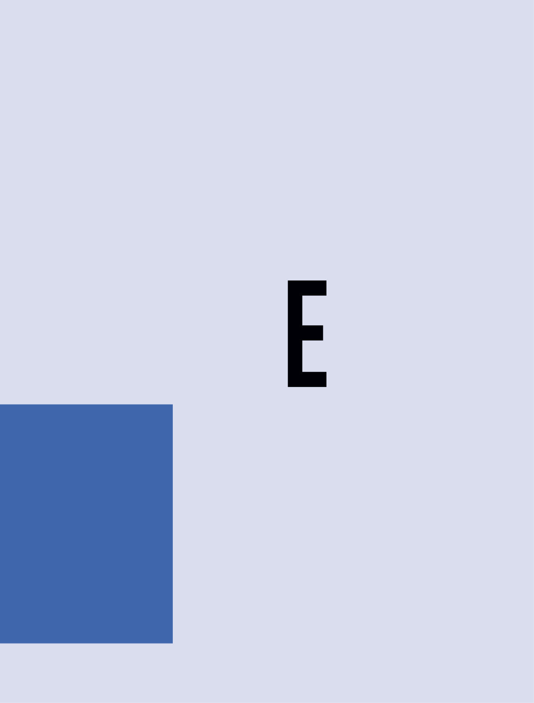
“意识
是一种工程
现象”
主观体验存在的一个可能原因是它从 [工程学，特别是机器人科学]
我们大脑调节自身的方式中产生。 [告诉我们，每个好的]
控制装置都需要一个模型——一个快速
[草图——来描述它所控制的对象。我们已经]
从认知神经科学中知道
大脑构建了许多内部
模型，代表现实世界中
物品的信息束。这些
模型是简化的描述，
有用但不完全准确。
例如，大脑有一个身体模型，
叫做body schema，来帮助控制四肢
个人简介 [的运动。当有人失去一只手臂时，手臂的模型]
[可以在大脑中持续存在，所以人们]
MICHAEL [报告感觉到一个幽灵般的phantom limb。但事实]
GRAZIANO [是，我们所有人都有phantom limbs，因为我们都有真实四肢的内部模型，只有当真实的四肢消失时才变得更明显。]
Michael Graziano是 [根据同样的工程逻辑，大脑需要]
普林斯顿大学的 [对自身的许多方面建模，以便能够监控和]
神经科学家和 [控制自己。它需要一种phantom brain。这个]
心理学家，著有 [自我模型的一部分可能对]
包括 意识特别重要。原因如下。
重新思考 [任何时刻都有太多信息流过大脑，无法]
意识： [等深度地处理所有信息。]
主观体验的 [为了处理这个问题，系统进化出了一种集中]
科学理论 [资源并战略性地将注意力从一个对象转移]
到另一个对象的方法：从附近的物体到远处的
声音，或到内部事件如情绪或
记忆。注意力是大脑抓住
信息并深度处理的主要方式。为了控制
它的游移注意力，大脑需要一个模型，我
称之为attention schema。
30 | New Scientist Essential Guide | 意识
attention schema理论解释了为什么人们[人工注意力，该注意力的模型，正确]
认为意识存在hard problem。[的内容范围（关于感官等事物的信息]
效率要求尽可能快速和粗糙的模型[和情绪）以及一个复杂的搜索引擎来]
，所以attention schema忽略了信号、神经元和突触的所有[访问内部模型并讨论它们。]
小细节。[第一个组件，注意力，是大多数神经系统中]
相反，大脑描述自己的简化版本[最基本的过程之一。它被global workspace theory]
，然后将此报告为幽灵般的非物理[很好地描述。如果你观察]
本质上，这是一种能够在心理上占有物品的神奇能力。[注视一个物体，比如苹果，大脑中与]
内省——或者说认知访问内部[苹果相关的信号可能会增强并变得一致。]
信息——永远不能返回其他答案。这[通过足够的注意力增强，这些信号]
就像一台陷入逻辑循环的机器。注意力[可以达到一个阈值，在那里它们实现”点燃”]
模式就像一面自我反射的镜子：它是大脑对[并进入全局工作空间。关于苹果的视觉信息]
大脑如何表征事物的表征，[变得可供大脑周围的系统使用，比如让你能够谈论]
是高阶思维的一个具体例子。[苹果的语言系统、让你能够伸手去拿]
在这种解释中，意识与其说是一种[苹果的运动系统、让你能够做出高级]
幻觉，不如说是一种自我漫画。[决策的认知系统，以及让你能够]
这个想法的一个主要优势是它从控制工程学[存储那个时刻以备后用的记忆系统。]
直接给出了一个简单的理由，
解释为什么意识特征会在最初进化。[←][-]
没有监控和调节注意力的能力，你就无法[返回第14页查看全局工作空间理论的解释][-]
控制你在世界中的行为。[-]
这使得注意力模式对生存至关重要。在这种观点下，意识不仅仅是
烟雾和镜子，而是引擎的关键部分。科学家们已经构建了注意力的人工版本，
它可能与聚焦注意力的能力共同进化，包括至少一个全局工作空间的简单版本。但这些机器
就像手臂模式与手臂共同进化一样。在这种情况下，没有显示出意识的迹象。
它可能早在五亿年前就起源了。[我们的有意识机器需要的第二个组成部分]
有时候，理解一个事物的最佳方式就是[是注意力模式，这个关键的内部]
尝试构建它。根据这个新想法，我们应该[模型以一般性的方式描述注意力，并且]
能够将类人意识工程化到[通过这样做，告知机器关于意识的信息。]
机器中。这只需要四个要素：[它将注意力描绘为一种无形的属性，一种能够]
[体验或占有物品的心智，]

某种本身没有物理实质但仍然[除了作为词汇的统计聚类之外。相比之下，人类大脑可以将语言转换为]
私密潜伏在智能体内部的东西。构建那种[非语言信息并再次转换回来。如果有人]
注意力模式，你就会拥有一台[问你柠檬的味道与橙子的味道相比如何，你可以将语言转换为味觉]
以与人类相同方式声称自己有意识的机器。[信息并比较两种记忆中的味道，]
我们的机器需要的第三个组成部分是[然后转换回文字来给出你的答案。]
与意识相关的大量信息流。[这种语言与许多其他信息域之间的轻松来回转换]
讽刺的是，困难问题——让[在人工智能中是一个挑战性的问题。]
机器完全有意识——可能是容易的[我们的有意识机器需要]
部分，而给机器提供有意识的材料范围[关联每个可想象域之间的信息，]
可能是困难的部分。构建有意识内容的努力[这是一个在人工智能中尚未解决的问题。]
可能从感官输入开始，特别是视觉，因为人们对[考虑到所有的前景和所有的困难，]
大脑中感官系统如何工作以及[我们距离有意识的机器到底有多近？]
它们如何与注意力相互作用了解得很多。[如果注意力模式方法是正确的，第一次]
但仅靠丰富的感官意识是不够的。我们的[视觉意识尝试可以用]
机器还应该能够整合内部[现有技术构建。但给]
项目，比如抽象思维和情感。在这里，[机器一个类人的意识流将需要更长时间。]
工程问题变得真正棘手。人们对[构建一台能够]
抽象思维和情感背后的大脑信息内容，或[看、听、尝、触、思考抽象]
它们如何与注意力机制相互作用知之甚少。[思想和感受情感，具有单一整合的]
弄清楚如何构建具有这种内容的机器[注意力焦点来协调所有]
可能需要几十年。[这些域内和域间的活动，并且能够谈论这整个]
我们的有意识机器需要的最后一个组成部分[内容范围的有意识机器将需要时间。但我相信这会发生。]
是一个会说话的搜索引擎。严格来说，[不过，对我来说，这个思想实验的目的]
说话对意识来说并非必要，但对大多数[不是倡导有意识的机器人。]
人来说，人工意识的目标是一台[重点是意识本身可以被]
具有类人说话和理解能力的机器。[理解。它不是一种空灵的本质或]
我们想要与它进行良好的对话。[不可解释的神秘。注意力模式想法]
问题是欺骗性地困难。我们已经有了
像Siri和Alexa这样的数字助手，但它们的功能有限。你给它们词汇，它们在互联网上搜索词汇，然后给你回馈更多词汇。如果你询问最近的餐厅，数字助手并不知道什么是餐厅，它把这个问题放在上下文中，并在适应和生存中给它一个具体的角色。与其说是一个定义不清的[附加现象，一种由大脑挤出并]
[漂浮在耳朵之间的雾气，意识变成了]
认知机器的关键组件。 ❚
32 | 《新科学家》基本指南 | 意识
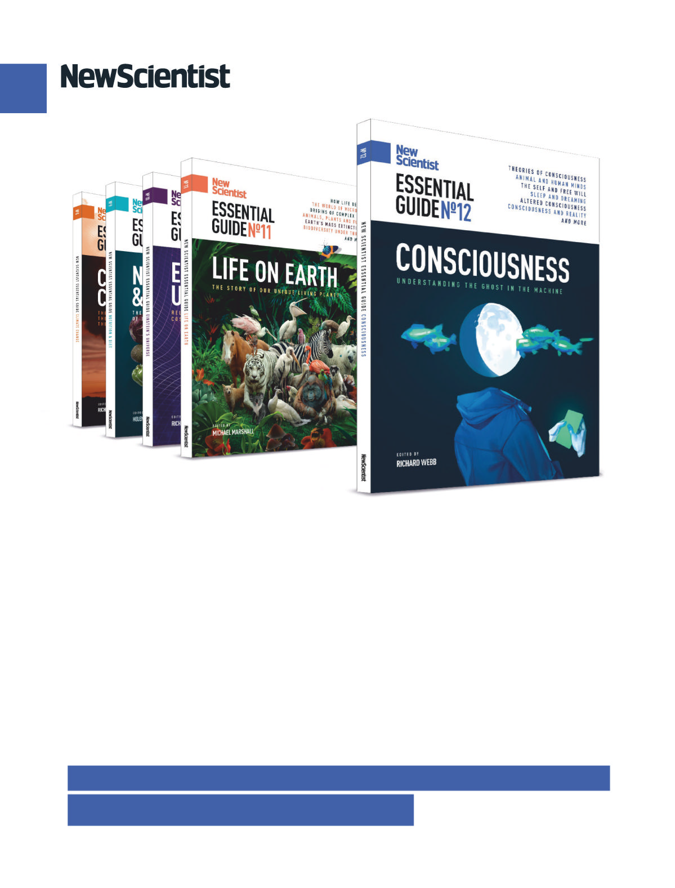
《新科学家》
基本指南
直接送达您家门口
《新科学家》基本指南是全面的、您需要了解的纲要，涵盖当今科学和技术中最激动人心的主题。
获取包括最近发布的《地球生命》在内的这个系列，以及基本指南订阅。这意味着您不必在商店中搜索问题——我们可以直接将它们送到您家门口。
如需了解未来期刊和订阅优惠的更多信息，请访问：
NEWSCIENTIST.COM/ESSENTIALGUIDE
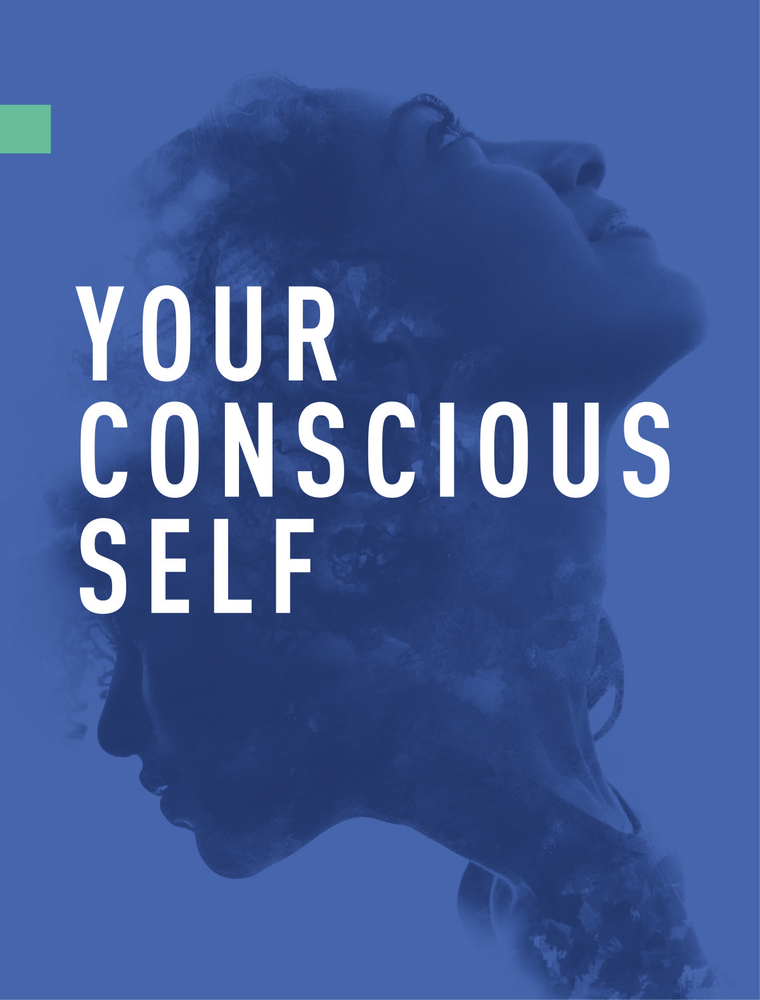
34 | 《新科学家》基本指南 | 意识
存在感对于我们所体验的意识是至关重要的。
成为我们是什么感觉，也许成为灌丛鸦、章鱼或新生儿也是什么感觉。
大概，成为一张桌子或一部iPhone是没有任何感觉的。
自我意识及其相关特征——元认知，即监控您自己和他人心理状态的能力，通常被认为是意识的巅峰。实际上，它们可能是进化的意外，甚至可能是我们想象的产物。
许多心理学家和人类学家坚持认为存在一个与大脑复杂性增加相对应的意识等级制度。在其基础是归因于具有简单神经系统的动物的最小意识。这些心智被认为永远漂流在原始感官体验的海洋中，在颜色、饥饿、温暖和恐惧等感知之间摇摆，对它们的意义几乎没有意识。
照镜子时，你可能会看到痘痘、皱纹或蓬乱的面部毛发，但在表面之下藏着更有趣的东西。
每当你与镜中的倒影对视时，你确切地知道是谁在看着你。
← 回到第二章了解更多关于动物心智的内容
很少有心智足够复杂来以不同方式体验世界——通过内省的透镜。即使如此，它们也可能有有限的自我意识。只有在心智复杂性的顶峰，我们才发现心智能够围绕抽象的”自我”概念构建终生的体验叙述。这些是精英。
毫无疑问，一些大脑比其他大脑大得多，结构也复杂得多。这种差异主要是动物必须满足以生存的不同进化需求的结果。例如，一个久坐不动、过滤进食的牡蛎的神经系统只由两个细胞簇组成。这些让它能够做牡蛎需要做的事情——控制消化，并在捕食者逼近时将光感触手的信号传输到使其快速闭合的肌肉。与此同时，在光谱的另一端，有一个特殊的需求似乎导致了复杂大脑的进化。它也可能创造了自我意识产生的条件。
这个挑战就是处理他人的心智——无论他们是猎物、竞争者还是你社会群体的其他成员。根据牛津大学Robin Dunbar开发的社会大脑假说，紧密团体中的生活取决于能够理解正在发生的事情 ▷
[PABLO HURTADO DE MENDOZA]
[上一页：LUMEZIA/ISTOCK]
36 | 《新科学家》基本指南 | 意识
像人类一样，小鼠、乌鸦和黑猩猩都具有一般智力，表明即使是小脑的动物也能灵活思考
小鼠 乌鸦 黑猩猩 人类
0.4克 10.2克 380克 1350克
7100万个神经元 12亿个神经元 280亿个神经元 860亿个神经元
在另一个个体的心智中。
这可能是我们独特的人类意识的基础。在1970年代，出现了这样的观点：需要理解他人心智的需要让我们意识到自己的心智。西雅图华盛顿大学的心理学家David Barash说：“如果你无法感知自己，就更难预料他人的感知。”这可能表明人类
水牛肉的——从而推断出牛群一直在哪里觅食。关键是，为了理解他人的心智，大脑需要从仅仅体验感觉和思想的东西进化成为它们的观察者。
然而，并非每个人都认为我们应该把自我意识放在基座上。“自我意识并不是高阶的，或本质上比
当我们类人猿的祖先开始生活在更大的社会群体中时，意识达到了更高的高度，随之而来的是日常潜在的攻击和竞争。
这并不是唯一将”高级”意识的进化与群体生活联系起来的假说。但对于伦敦大学学院的神经科学家Chris Frith来说，好处在于合作而非竞争。“这样我们就能相互交流经验，”他说。
Frith的团队已经表明，如果允许人们与伙伴一起仔细考虑证据的利弊，他们在实验室任务中会做出更好的决定。这听起来可能很明显，但很难想象一个没有任何内在生活的僵尸能够做到这一点，因为这需要反思和内省——我们与意识联系在一起的关键特征。“我们必须能够反思我们的经验，然后才能谈论它们，”Frith说。
Frith的同事Geraint Rees举了一个例子：两个早期人类看着远处的尘土云，试图判断它是否表示一群水牛或一群狮子。他们越善于反思自己的感受和判断，他们关于是狩猎还是逃跑的集体决策就越好。“如果你能结合感官系统的力量，这就成为一个有用的优势，”Rees说。
然而Frith认为，意识好处的一个更好例子是早期人类讨论某种蘑菇的特殊味道，“意识是另一个例子，”普林斯顿大学的神经科学家Michael Graziano说。“在他看来，心智只是某些大脑可以建模的对象，从而变得意识到的。一旦这种建模的生物机制进化出来，它就可以用来表示不仅是他人的心智，也包括自己的心智。”
大多数研究人员都同意，大脑至少部分通过生成模拟来运作。然而，一些人不同意自我意识是建模机制的功能性组成部分。事实上，一些人认为它是信息在大脑闭环连接中快速流动的意外”涌现”副产品。它没有特定目的，就像运行引擎发出的噪音对引擎本身的工作没有影响一样。
相反，这种噪音的音调反映了我们大脑中的主要连接。将会有大量涌现的心理模式，服务于不同物种的各种生存需求。例如，在蝙蝠中，它可能是那些传输来自回声定位咔嗒声的信息，用于构建世界的3D模型。在人类中，似乎就是这样的情况：我们大脑中的主要连接似乎是那些用于思考他人心智的连接——同样的连接也用于思考我们自己。从中涌现的是一个似乎恒定的模式。对你来说，那就是你的自我感。
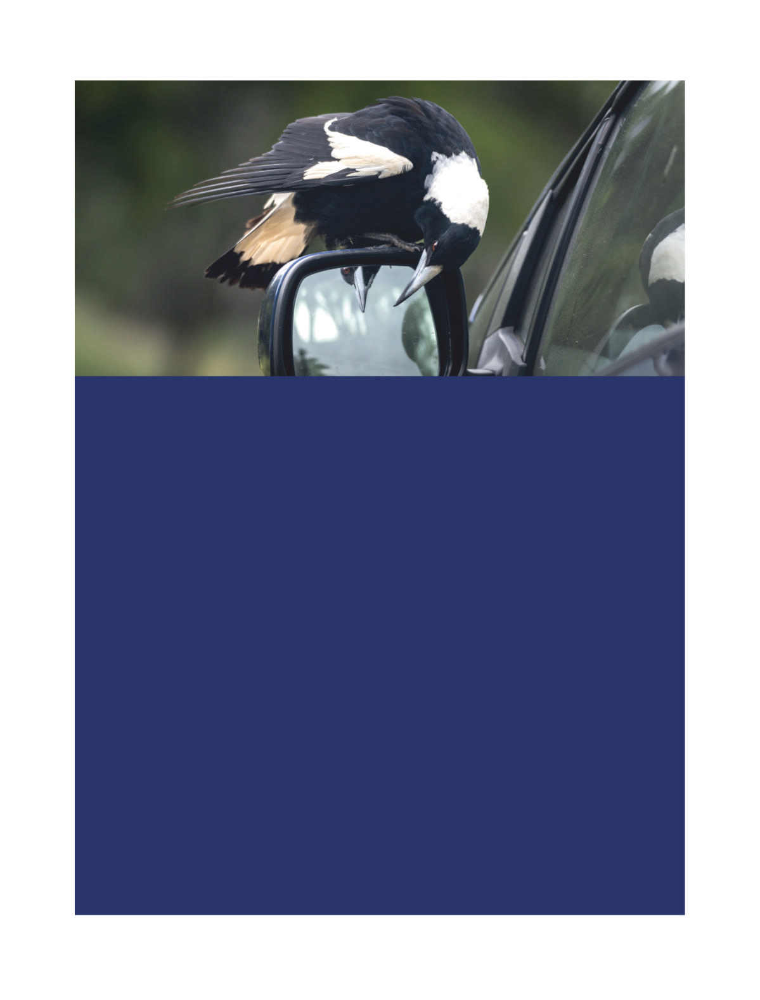
在最广泛使用的自我意识测试——所谓的面部标记测试中，研究人员偷偷在动物的前额或脸颊上涂上无味的染料，并观察它在镜子前的反应。基本前提是那些具有坚定自我感的动物能够识别它们的反射并试图擦掉染料。
通过这项测试的动物包括黑猩猩、倭黑猩猩、猩猩、亚洲象和欧亚喜鹊——臭名昭著的聪明乌鸦科动物的成员。虎鲸和宽吻海豚似乎也能在镜子中识别自己，尽管它们的解剖结构意味着它们无法移除面部标记。
这种与智力的明显相关性是为什么自我意识已成为心理复杂性的一种代理的原因。
但有一些令人困惑的进化空白。例如，大猩猩通常在测试中失败，但我们更远的灵长类亲戚猩猩却出色地通过了测试。此外，自我意识精英包含一些奇怪的异常情况，如鸽子、蝠鲼和蚂蚁。其中一些发现——特别是关于蚂蚁和鸽子的——受到争议。
研究人员试图解释其他情况，例如，争论大猩猩自从与其他猿类血统分离以来在精神上倒退了，因为它们在环境中面临较少的压力。
然后，我们有理由相信镜子测试是有缺陷的。恒河猴通常在测试中失败，但中国上海生物科学研究院的Chang Liangtang及其同事在2017年的实验似乎表明，这仅仅是因为它们缺乏擦掉染料的手眼协调能力。当训练如何做到这一点时，它们开始通过测试。
这暗示可能还有许多其他具有未被发现的自我意识的物种。
与此同时，一些与幼儿一起工作的发展心理学家长期以来一直争论镜子测试不一定揭示一种超越此时此地的自我意识。
实验表明，儿童可以在3岁时在镜子中识别自己，但无法识别几个月前拍摄的视频中的自己，并且会在另一年或两年内难以理解过去存在的想法。
通过自我意识测试的大多数动物要么是我们的灵长类亲戚，要么是像我们一样具有复杂社会生活的动物，这一事实可能意味着，该特征不是反映心理复杂性，而是简单地表明它们的心智已经进化来面对与我们自己相似的挑战。
喜鹊和其他乌鸦科动物在镜子中识别自己——无论这意味着什么
是幻觉吗？
我们有着强烈的连续性、连贯存在 我们知道自己会随时间感，但从构成身体的细胞到我们的 而变化。我们的身体成长，然后核心性格特征，我们都处于不断变 衰老；我们成熟，观念也会化的状态中。 改变；我们的记忆变得清晰这表明答案相当不同。 又模糊。但对我们大多数人来说，我们的自我感是无缝且连续的。你依然是同一个你，对吧？
这就引出了一个问题：如何做到的。对这个问题的一个有趣视角是，虽然我们身体许多器官中的细胞只能存活几天或几周就会被替换，但我们大脑中的神经元从出生前就与我们同在，可以存活100多年。“大脑中大多数神经细胞实际上和我们一样古老，”瑞典卡罗林斯卡学院的分子生物学家Jonas Frisén说。
至少，我们的自我意识肯定存在于我们的大脑中。当加拿大多伦多大学的Christina Starmans和她的同事们向来自美国和印度的人们展示苍蝇围着一个人转的图片，并询问他们认为哪些苍蝇最近时，结果令人震惊：无论文化背景如何，大多数人都指向靠近人眼睛附近的苍蝇。“这表明存在一种普遍的自我定位于头部、靠近眼睛的感觉，”Starmans说。
至少从主观上看，眼睛作为自我的窗户是说得通的。“我们对自己在身体中的位置感知是由我们对世界的主要体验所决定的，”Starmans说。“我们来自世界的几乎所有输入都通过我们的头部进入。”
40 | New Scientist Essential Guide | Consciousness
对于
是
要问我们大多数人，我们的自我意识位于何处，我们会指向眼睛附近的某个地方
这也与一些客观证据相符。在一些极其罕见的大脑疾病中，人们会有存在于身体外部的感觉：比如，那些经历自体幻视(heautoscopy)的人会看到一个分身，并感觉他们既位于自己的身体中，也位于分身中。“他们同时存在于两个地方。这非常令人不安，”英国安格利亚鲁斯金大学的认知神经科学家Jane Aspell说。
类似的错觉可以在实验室中产生。例如，志愿者在佩戴虚拟现实头盔时被抚摸背部，头盔显示他们自己被抚摸的模拟画面，他们开始感觉自己更靠近虚拟自我而不是实际身体。大脑扫描显示，一个叫做颞顶联合区的区域受到影响。“这个区域是大脑计算的关键，它创造了你的自我在空间中定位的感知，”Aspell说。
因此，很容易认为我们自我意识的连续性与大脑物理连续性有关。然而，即使是我们长寿的神经元也在不断变化，重新连接以产生新的思想、记忆和心理状态。事实是，我们学到的东西、吃的食物、睡眠质量以及无数其他因素都在时刻影响着我们的选择和行为。所以，在许多方面，“你从一个时刻到下一个时刻都不是同一个人，”英国埃塞克斯大学的Helge Gillmeister说。
连续自我的虚幻本质在2016年得到了支持，当时英国爱丁堡大学的研究人员调查了构成我们性格的行为习惯在63年间的变化。之前的研究观察较短时期，只发现了小的变化，表明我们基本保持不变。但更长远的观点令人震惊：在六十年的测量中，我们性格的任何方面几乎都没有保持不变。随着时间推移，我们变成了不同的人。
有时，人们会一下子经历重大变化——“发生了一些重大事件，彻底颠覆了他们的生活，彻底震撼了他们，”该论文的共同作者、心理学家Wendy Johnson说。但在大多数情况下，我们的性格通过”长期内特定行为的变化涓流，有意识和无意识的，“她说。
我们在调整对过去自我或信念的概念以维持连续自我的错觉方面异常熟练。例如，我们会争先恐后地重写历史，让我们之前的态度更接近当前的态度，否认我们曾经持有与现在不同意的强烈政治观点的想法。“你在过去编造自己，”Gillmeister说。
在某种程度上，我们也意识到这种脱节。研究表明，我们思考未来自我的方式与思考当下自我的方式截然不同——在我们的大脑中，就好像未来的你是一个完全不同的人。❚
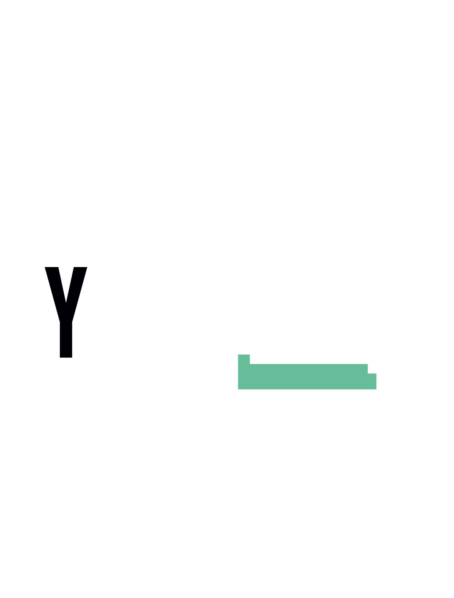
元认知：
知道你知道
虽然关于哪些动物具有自我意识的争论仍在激烈进行，但据我们所知，有一种特征是人类独有的——思考我们正在思考什么以及知道我们知道什么的能力。
如果你有宠物狗，它在任何给定时刻可能都会意识到许多感觉：它饿了，长距离散步后累了，也许还有从什么地方散发出的美味气味。
结果可能有其他解释。扫描人类在执行元认知任务时的大脑表明，这种能力的所在位于我们的前额皮质，在我们头部的前方。但这种能力很难测量。
来自厨房的声音。当我们询问人们对自己答案的确信程度时，
然而作为其主人，你意识到测试结果会因人们进行测试的能力差异而变得混乱。那么你测量的是能力本身，还是对该能力的意识？
所有这些感觉，却在它们之上还有额外的思维过程层次。作为人类，我们能够
←
意识到我们对基本感官输入的意识，这让我们能够反思我们感受和判断的准确性或有效性。这让我们能够思考：
返回第10页，了解更多关于意识在大脑中的位置
“我在那次长时间步行后有多疲惫，这是锻炼后那种令人满意的疲倦感。但我还没有累到今晚不能走到酒吧。”
早在2010年，当时在纽约大学工作的Fleming和他的同事们想出了一个关键的额外步骤。
这种能力通常被称为内省或元认知。“这是自我反思的能力，是了解自己的能力，”在伦敦大学学院研究意识的Steve Fleming说道。“这是我们认为即使不是人类独有的，至少也是人类心理学最发达的能力之一。”Fleming将这种能力称为我们的超意识。“元认知似乎是我们身份认同的核心，”他说。
他们在屏幕上短暂闪烁两张条纹图像，中间用空白图像分隔，并要求人们说出哪一张对比度最大（见右上图）。
在每个问题后，受试者必须评估他们对选择了正确答案的信心程度。
关键是，条纹的对比度会根据每个人进行调整，这样无论他们的视力有多好，每个人都能答对大约70%的问题。这
过去对元认知的研究主要关注它是否真的是人类独有的，还是在某种程度上被更聪明的动物所共享。
意味着对于信心评级，唯一的变量是人们的元认知能力，这在实验室中首次证明了这种能力存在很大差异。
在海豚和猴子身上已经有了这种能力的暗示，例如，尽管怀疑者说
除了做这些测试，志愿者们还进行了脑部扫描，这显示那些具有最佳元认知能力的人在前额叶皮层最前端、额头后方的区域有更多的灰质，这个区域被称为前额叶前皮层。
42 | 新科学家基础指南 | 意识
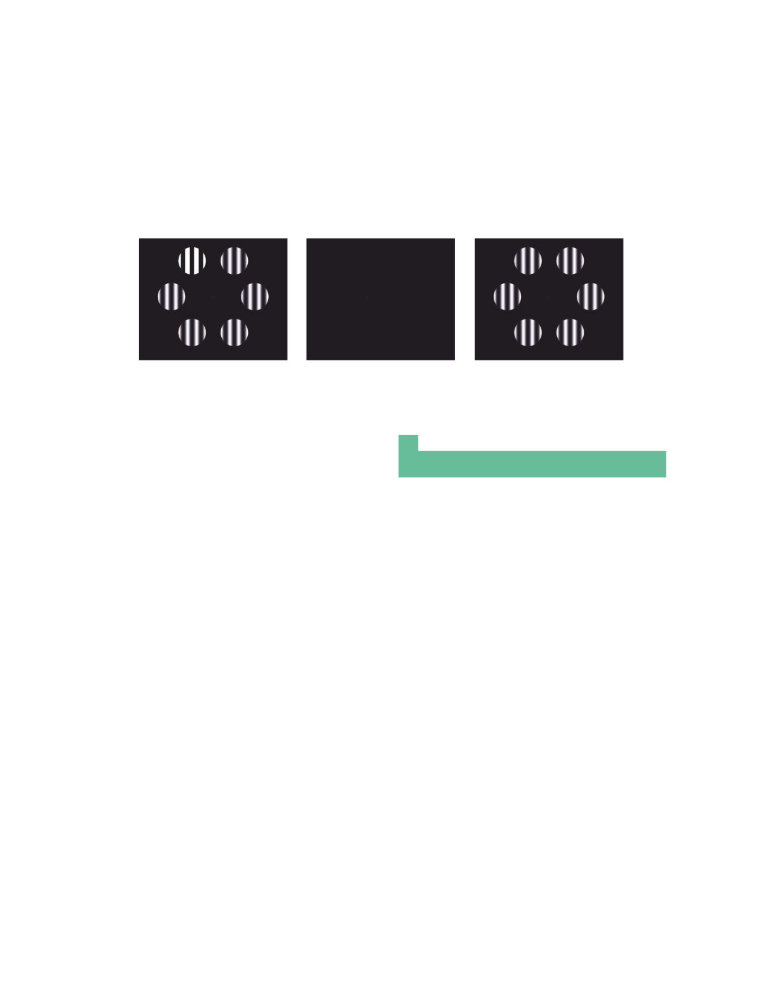
元认知可以通过让人们评估两幅图像中哪一幅更清晰来测试，然后询问他们的信心程度——但通过操控图像使他们只能在特定比例的时间内答对
→
第5章有更多关于大脑改变状态的内容
“这个区域的什么特点给了我们这种能力？”Fleming问道。“它在人类中更发达的事实是否意味着我们与动物有着根本不同的自我意识？”
她使用一个简单的基于光标的电脑游戏研究了精神分裂症患者的元认知能力。起初，参与者在判断自己表现如何方面与对照组一样出色。
了解大脑如何工作的另一种经典方法是观察它不正常运行时会发生什么。以”盲视”为例，这是一种通常由脑外伤引起的非常罕见的病症。受影响的人表现得好像他们在一切意图和目的上都看不见。
但当Metcalfe开始秘密地自己移动光标时，对照组很快意识到有些奇怪的事情在发生。另一方面，精神分裂症组的人们未能
但仔细测试显示，他们可以在无意识层面上接收一些关于世界的视觉信息。
意识到他们不再完全控制光标的移动。
例如，当要求他们猜测面前的物体是什么时，他们比随机猜测要好——同时一直坚持说他们什么都看不见。
一些患有精神分裂症的人开始相信其他人在控制他们的行为，比如认为一个微芯片被植入了他们的头部。“如果你不知道你在控制自己的行为，你可能会出现那种症状，”Metcalfe说。
盲视一直被认为是由大脑后部视觉皮层的损伤引起的，这是来自视神经的信息首先到达的地方。
但一些脑成像研究表明，损伤也会影响到前额叶皮层的连接，这正是Fleming强调的同一个区域。
通过在Fleming使用的那种电脑任务后给予反馈，可能可以改善人们的元认知能力。Metcalfe希望这能帮助精神分裂症患者。但假设我们其他人也做同样的训练。这会给我们一个增强版的超意识吗？“如果你把意识定义为看到红色时的感觉，
元认知的不那么极端的损伤可能涉及其他更常见的病症，如精神分裂症，它涉及妄想和幻觉。“精神分裂症患者在那个非常核心的元认知方面有问题；我知道我是我，我知道我在做什么，”同样在哥伦比亚大学的Janet Metcalfe说。
那么这不会改变那个，“Fleming说。”但如果它是能够准确反思你所看到的，或者你是否刚刚做了一个好决定，那么训练可以给它一个提升。” ❚

长期以来，我们知道内脏器官有自己的生命活动。它们产生电活动，通过神经元传递到大脑。因此，来自心跳、呼吸、胃部缓慢规律脉动和肌肉状态的信号都在大脑的电活动中得到体现。大脑反过来调节这些功能。换句话说，存在一个神经回路，神经细胞将信息从器官向上传递到大脑，并将指令向下传递到器官。
然而，在20世纪，神经科学家往往忽视身体。他们将心理生活完全与大脑联系起来——这种方法的典型代表是”缸中之脑”思想实验，其中一个脱离身体的大脑继续拥有正常的意识体验。
事情在本世纪初开始改变，当时南加州大学的神经科学家安东尼奥·达马西奥开创了具身意识(embodied consciousness)领域。“我一直在为身体是任何与心智有关的事物的关键参与者这一观点辩护，”他说。多年来，他在这一观点上多多少少是孤独的，但现在少数研究人员已经加入了他寻找自我感觉的身体起源的探索。
他们的出发点是内感受(interoception)，这是我们对自己身体内部发生的事情的一种第六感。测量内感受的一个简单方法是让某人在固定时间内计算自己的心跳，并将其计数与心电图(ECG)测量的实际心跳进行比较。人们完成这项任务的能力差别很大。那些能够最准确感知心跳的人往往能做出更好的直觉决策，并且更善于感知他人的情绪。
这是怎么回事？为了解开这个谜团，研究人员需要在大脑中找到内感受的表征。他们在大脑对心跳的反应中找到了一个，被称为心跳诱发电位(heartbeat-evoked potential, HEP)。许多研究关注这个，因为HEP相对容易测量：心跳并不完全规律，因此可以从大脑的所有其他活动中过滤出HEP。通过同时记录一个人的心跳(通过ECG)和扫描他们的大脑可以找到HEP。它表现为大脑中各种”静息态网络”的活动，即使一个人没有有意识地做任何事情时这些网络也是活跃的。
关于HEP可能在做什么的线索出现在2016年，当时洛桑联邦理工学院(EPFL)的神经科学家朴亨东(Hyeongdong Park)及其同事在体验全身幻觉的人身上测量了这一信号。志愿者戴上虚拟现实头盔，观看自己背部被抚摸的模拟画面，同时在现实中他们的背部也被抚摸。过了一会儿，他们描述感觉好像自己现在在物理上更接近虚拟自我的位置，而不是他们实际坐着的地方。他们的HEP越明显，幻觉就越强烈。
这是内感受与大脑自我概念之间联系的第一个神经生理学证据，研究人员声称。“HEP反映了身体自我意识的变化，如自我认同的变化以及向虚拟身体的位移，”领导EPFL认知神经科学实验室的奥拉夫·布兰克(Olaf Blanke)说。
EPFL小组进一步表明，我们的身体自我绝非被动——它介入我们做出的每一个决定。布兰克的团队以生理学家本杰明·利贝特(Benjamin Libet)的工作为基础，利贝特在1983年检测到一个信号，该信号在一个人意识到自己行动意图之前就在大脑中产生。利贝特将其解释为没有自由意志这样的东西。EPFL小组发现，同样的信号与一种特定的身体行为——呼吸——有关：我们更有可能在呼气时启动自愿行为。布兰克将这一发现描述为”自由意志行为被一系列内在身体状态所束缚”的明确迹象。
某人计算自己心跳的准确程度是内感受能力的测试
这些实验使朴亨东和布兰克提出，来自器官的信号与来自外部世界的信号一起，向大脑提供身体自我的表征。这包括自我认同和自我定位，如全身幻觉中所示。他们还认为，来自器官的信号的节律性有助于产生自我在时间上连续的感觉。“心跳的周期性模式是可预测的，”布兰克说，“这个时间因素可能在自我的连续性中发挥重要作用。”
法国巴黎高等师范学院的神经科学家凯瑟琳·塔隆-博德里(Catherine Tallon-Baudry)对身体如何促进自我意识有不同的理解。大脑不断受到来自身体内外的信号以及自身认知过程产生的信号的轰炸。这些信号由不同的大脑回路处理。她认为来自器官的节律性信号对所有传入信息施加了统一的
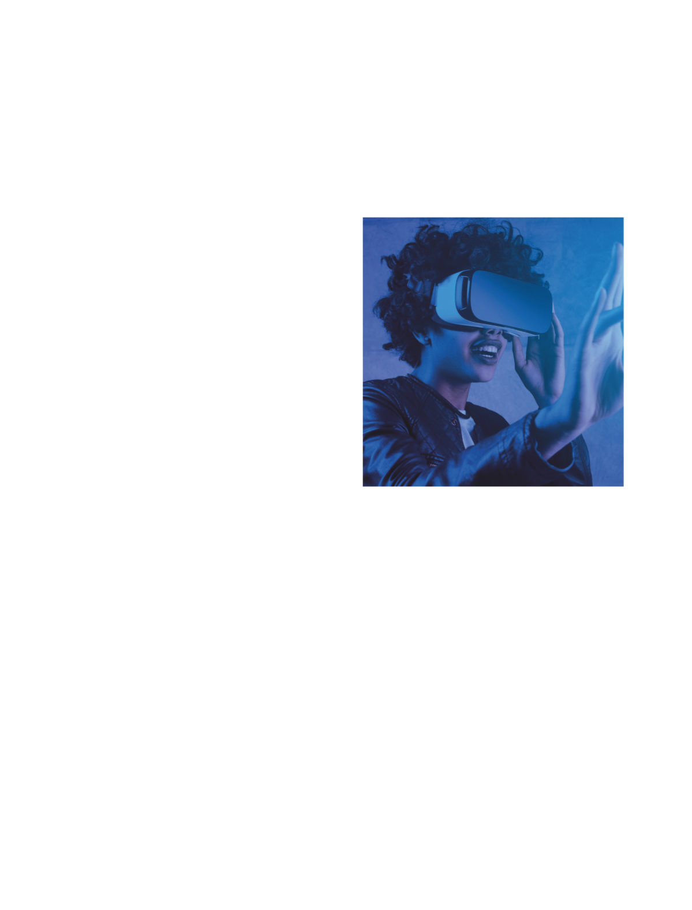
虚拟现实头盔可以用来创造脱离自我的幻觉
大脑的参考框架。这使我们能够
从单一、主观的”我”的视角来
感知所有传入的信息。她说：“我认为
意识是大脑整合来自整个
机体的信息后产生的一种特性。“她相信，
一系列实验支持了她的论断。
2014年，Tallon-Baudry和Park（在转到Blanke的
实验室之前曾在她的实验室工作）开始探索
HEP如何可能影响我们对事物的意识体验
。他们要求人们将目光固定在一个
中心点上，并说出他们是否能看到围绕该点的
微弱光环。一个人在展示光环前的
HEP越大，他们感知到它的可能性就越大。Tallon-Baudry说：“心跳就像一条额外的视觉信息。”它还
提供了意识体验内在的”我性”。她说：“在人的反应——’我看到了
什么’——中，有’我’这个元素。
我们不应该忽视感知中’我’这个元素。”
Blanke认为这项研究是对
意识阈值的完美展示，但他说没有
必要得出自我参与其中的结论。为了解决
这个问题，Tallon-Baudry和她的团队设计了
另一项研究。这次，他们专注于
“I”和”me”之间的区别。Tallon-Baudry说
“I”捕捉了自我最基本的方面——
思考之前的方面，执行
思考的统一实体。这与
涉及监控的关于”me”的反思根本不同
不同的身体功能而没有统一感。
为了看看他们是否能证明大脑对这些
两个概念的处理也不同，Tallon-Baudry的团队
要求正在接受大脑扫描的人们固定在一个点上，然后让他们的思维漫游。
时不时地，他们会被打断并被问及
——在那个确切时刻——他们是否在思考
“me”或”I”，他们已经被训练识别。根据他们报告的内容，
HEP在大脑的不同部分发生：靠近前部的区域
用于”me”思维，更后面的区域
用于”I”思维。这首次证明了
大脑确实区分这两个概念。
Tallon-Baudry的团队还展示了身体
如何可能对我们个人
偏好的决定产生影响，这在很多方面在他人
眼中定义了我们。志愿者看到200张著名
电影的海报，并被要求评价他们看过的电影。
第二天，他们被展示来自
他们评价过的电影的成对海报，并必须指出他们
在追踪HEP时更喜欢哪一张。如这类实验的常规情况，
人们的反应并不完全一致。然而，在选择时刻
HEP最大的人给出的答案
最符合他们的原始评分。
当他们的大脑最密切地倾听他们的心脏时，他们的选择最忠于自己。
Blanke的身体自我概念和Tallon-Baudry的
身体意识概念可能并不相距太远。实际上，他们可以想象达成一个
统一的具身自我模型来
调和他们的发现。
与此同时，英国萨塞克斯大学的Sarah Garfinkel
一直从不同的角度接近事物。她一直在探索两个相关的
观念：身体信号影响情绪，以及
情绪通过记忆
和学习塑造我们的自我意识。在与自闭症患者合作时，她
得出结论，他们在与
他人相处时经常遇到的问题源于他们的大脑被与自己和他人情绪相关的内脏输入所淹没。
基于过度活跃的身体-大脑
轴的观念，Garfinkel的研究现在转向了我们大多数人在生活的某些阶段
或多或少都会感受到的一种感觉：恐惧。在她最近的研究中，她改编了一个
经典的心理学范式，称为恐惧条件反射，
志愿者学会将中性刺激
与负面后果联系起来。她测量了人们的
心跳和皮肤的电导率，
当我们感到恐惧时电导率会增加。她的志愿者
在心脏收缩时呈现刺激比在心脏放松时
表现出更多恐惧。
心跳的阶段也影响了这些恐惧反应
后来被唤起的容易程度。她说：“这些
来自心脏的信号真的可以驱动和压倒
条件性恐惧反应。”
大脑并体验为情绪或驱动——
比如恐惧的情绪，或进食的驱动。他认为，主观性
后来又进化了。它由
肌肉骨骼系统施加，该系统作为中枢神经系统的物理
框架进化，在这样做时，
也提供了一个稳定的参考框架：
意识体验的统一”我”。
当Damasio思考综合时，
其他研究人员正在考虑他们发现的应用
。Garfinkel打算直接在
受创伤影响的人群中测试她关于过度活跃心脑轴的想法
。她的结果已经为
设计作用于
心血管系统的药物可能有助于治疗创伤后
应激障碍的理论依据提供了支持——实际上这些药物
现在正在临床试验中。
Blanke和Park已经申请了一项与
使用呼吸模式预测行为相关的专利。
在其他应用中，它可以帮助调整
脑机接口对残疾人
选择更敏感。
Tallon-Baudry正与比利时列日大学的神经学家Steven
Laureys合作研究
意识状态疾病患者的HEP，

加芬克尔不喜欢谈论意识，比如昏迷状态，因为她认为这个概念太模糊。“意识在很多层面上运作，”她说道。但她确实相信自己正在试图解决与布兰克和塔隆-鲍德里同样的谜题。对于达马西奥来说，如果我们从进化的角度看，这三种方法都是可以协调的。
四十亿年前，最初的原始生物体监测着它们身体状态的变化——相当于饥饿、口渴、疼痛等等——并拥有维持平衡的反馈机制。那些原始机制的遗存就是我们的自主神经系统，它控制着心跳和消化等身体功能，而我们对此大多无意识。
然后，大约五亿年前，以大脑为特征的中枢神经系统进化了。“这是大自然的一个后来的想法，”达马西奥说道。但它成为了曾经更分散的心智的”锚点”。身体状态的变化被投射到这个新的结构上，这个结构开始监测和整合来自身体的信号。
他们已经训练了一个人工智能来学习HEP如何与这类患者的可测量临床体征相关联，以测试HEP是否能单独作为那些临床体征模糊不清的人群的诊断工具——特别是那些处于被称为微意识状态的灰色区域的人群。
这些发现也有哲学含义。如果意识是具身的，这可能会影响我们对死亡的思考，死亡目前被世界卫生组织定义为大脑(而非身体)功能的不可逆转丧失。这项研究对其他动物的意识以及我们如何对待它们也有含义。如果意识是具身的，这意味着没有办法整合来自身体信号的机器或机器人永远不会真正有意识。“当你开始思考具身自我的含义时，”塔隆-鲍德里说，“它们真的相当深刻。”
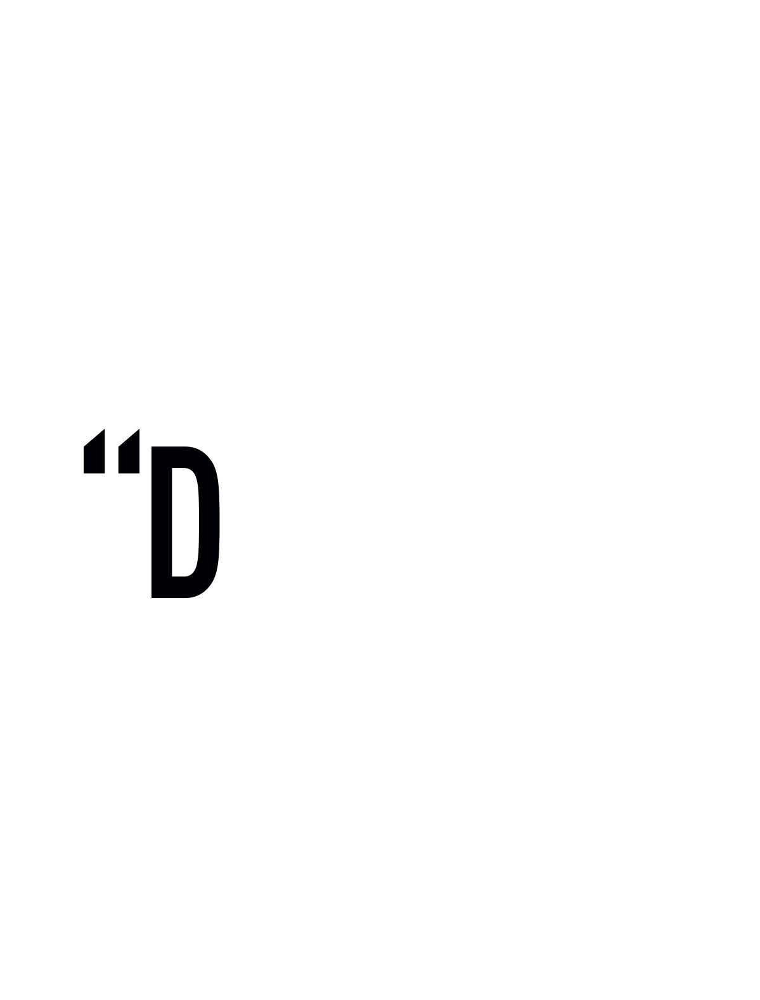
我们的自我感基于一个如此根本性的假设，以至于它看起来不可动摇：我们是自己命运的主人。但我们越是解开将意识经验与大脑联系起来的微妙纽带，这个假设就越显得摇摇欲坠。
“我真的只是决定午餐吃鱼和薯条吗？”人类千年来一直在与这样的问题搏斗。也许不是关于鱼和薯条，而是关于我们是否真正拥有控制权，或者是否有某种外部力量——无论是全能的上帝还是物理定律——预先决定了我们生活的轨迹。
不幸的是，没有简单的答案。决定吃鱼和薯条的”我”是谁？你的直觉可能告诉你，你是一个控制着物理身体的有意识实体。但那个物理身体包括产生你意识的大脑。两者无法分割。
自由意志的辩论由来已久，但在1980年代，心理学家本杰明·利贝特真的激起了风浪。他进行了一个实验，让人们等一会儿然后按一个按钮，并在超精确的时钟上记录他们决定行动的确切时间。他们的头皮上也放置了电极来测量大脑中的电活动。
这个设置揭示了神经元活动比人们有意识地决定按按钮的时间早了近半秒。最近，一个类似的实验将人们放在功能性磁共振成像扫描仪中，而不是给他们接上电极。这发现大脑前额叶皮质中的活动比某人意识到已经做出决定的时间早10秒钟。
尽管利贝特的工作仍然存在争议，但它提出了一个重大问题：我们的无意识大脑真的在驾驶座上，而我们的意识只是个乘客吗？即使我们在驾驶，我们也可能在轨道上。瞬间的生死决定——比如警察选择开枪——通常做得太快，无法让有意识的思考发挥作用。相反，这样的选择可能由硬连线的、无意识的偏见指导。
柏林高级神经影像中心的神经科学家约翰-迪伦·海恩斯领导了脑扫描研究，他警告不要跳到这个结论。“我不会将这些早期的[大脑]信号解释为’无意识决定’，”他说。“我会将其更多地视为后续决定的无意识偏见。”其他人同意，声称我们所有的行为都不受我们控制且不存在自由意志是一个巨大的推断。“利贝特处理的是非常简单行为的非常短期的前兆，”伦敦大学学院的帕特里克·哈加德说。
话说回来，即使是更长期的决定和行为也是特定大脑过程的结果，假设你接受物理主义观念，即意识可以通过物理物质的运作来解释。在这种观点中，生物材料不过是遵循物理定律的原子和分子的聚集体。每当你决定什么时，你大脑中某种特定的神经元模式就会发射以将
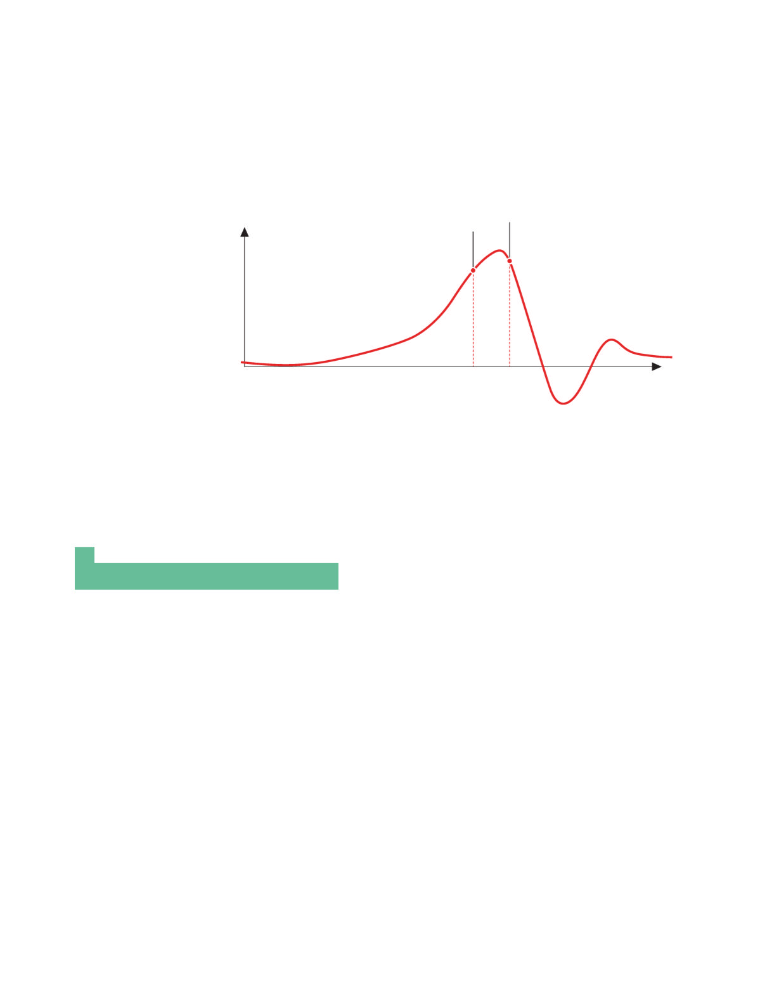
心理学家本杰明·利贝特在1980年代进行的实验似乎挑战了自由意志的观念
要求人们在超精确时钟上记录他们首次决定按按钮的确切时间 按下按钮 受试者意识到按下的决定
头皮上的电极显示大脑中的活动比他们有意识地做出按下决定的时间早大约半秒钟 电压 时间
-200 ms 0 时间 (ms)
你的思想转化为行动——走向厨房去冲咖啡，或许，或者说出一句你将来会后悔的话。归根结底，这一切都归结为电子脉冲——遵循物理学铁律的基本粒子，在这些定律下，一切都由之前发生的事情决定。
这似乎没有给自由意志留下多少空间。“物理定律，如果是确定性的，告诉我一切我所做的事情，世界上发生的一切，包括我所做的一切，包括我做过的每一个决定，都逻辑性地遵循自然法则和宇宙的初始条件，”纽约哥伦比亚大学物理学哲学家Jenann Ismael说。既然我们既不能控制自然法则也不能控制宇宙的初始条件，我们就不能完全控制我们的行为——不是吗？
慢着。伦敦国王学院哲学家Eleanor Knox说，我们应该首先定义我们的术语。“有一种非常强烈的自由意志概念，这是我的学生们都带到课堂上来的，”她说。“要拥有自由意志，我现在必须能够表现得完全没有与任何偶然计划的联系——所以随心所欲。”
即使撇开物理学不谈，这显然也不是事实。Ismael说：“我们认为当我们做决定时，行为的控制中心在内部。但实际上，有各种各样的影响：文化影响、心理影响、对我们心理形成更有影响力的我们无法控制的影响等等。”我们的选择是由遗传本性和环境养育形成的一系列倾向的结果——这是我们不一定能立即控制的独特环境产物。
第6章全部关于意识和现实
但对于伦敦经济学院名誉心理学家Nicholas Humphrey来说，承认决定在大脑过程中有一个非自愿的、物质的原因并不等同于否认自由意志。“相反，我是说我，我自己，是它的原因，”他说。Humphrey将他的”我”称为”体现的自我”：生活在他内心的思想、信念、欲望、倾向等的总和。体现的自我可能不会意识到每一个行动，但它最终决定了它们——这是一种自动驾驶状态的自由意志。
关键点是你仍然可以选择违背你刚刚决定的事情。毕竟，这是我们体验到的自由意志的核心。说这种自由意志与物理学的确定性定律不兼容，是颠倒了因果关系，除非你是一个坚定的二元论者，主张心灵的非物理本质。“无论我们称之为什么的自由意志，最终都必须能够用物理学定律来解释，”Knox说。当然，除非你选择了幻觉主义的出路——即我们体验到的任何东西都不必然对应于真实物理世界中发生的任何事情。
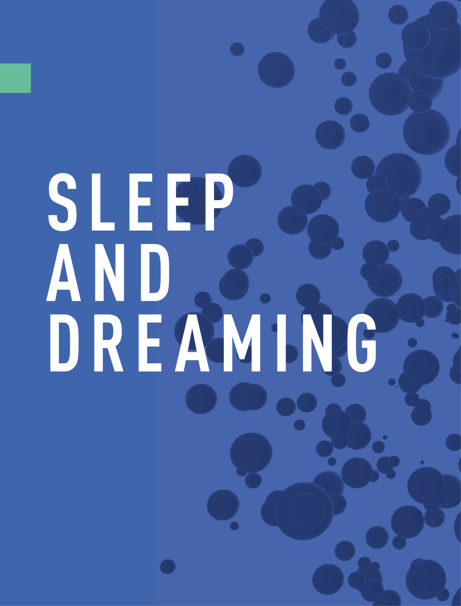
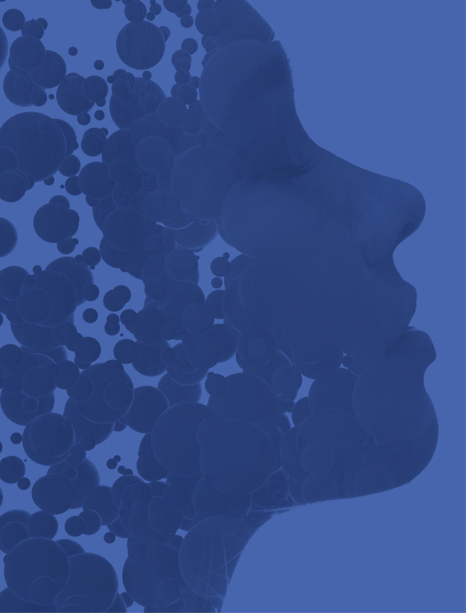
每天晚上，我们进入意识的阴间世界。睡眠的真正目的仍然不清楚，但在具有某种程度意识的生物中，它们似乎普遍地会花一些时间处于意识减弱的状态。
同样清楚的是，意识不像灯的开关，醒着时开着，睡觉时关着。我们的大脑在睡眠的不同阶段处于各种不同的意识状态，这在我们做梦的方式中最为明显——这是我们大脑夜间漫游的另一个巨大谜团。
普通人一生中大约有三分之一的时间在睡觉。如果长期剥夺睡眠，我们会身体生病。因此，我们仍然不真正知道为什么睡眠如此重要，这是令人困惑的。
表面上看，我们睡觉显然是为了让我们的大脑和身体休息和恢复。但为什么不在保持意识的情况下休息，这样我们也可以警惕威胁？如果恢复意味着东西正在被修复，为什么这不能在我们醒着的时候进行？研究动物如何进食、学习或交配的科学家们不会被这些活动目的的问题所困扰。但对于睡眠研究者来说，“为什么”是令人疯狂的神秘。
睡眠是如此广泛的现象，它必须在做一些有用的事情。甚至果蝇和线虫都经历不活跃的时期，在这些时期它们不太容易被唤醒，这表明睡眠是最简单动物的需求。
但调查动物王国并没有揭示睡眠习惯与某些明显生理需求之间的明确相关性。事实上，睡眠模式存在令人困惑的多样性。
一些蝙蝠每天花20小时睡觉，而大型放牧哺乳动物往往每天睡眠不到4小时。例如，马匹站着小睡几分钟，每天总共只有约3小时。
在一些海豚和鲸鱼中，新生儿和它们的
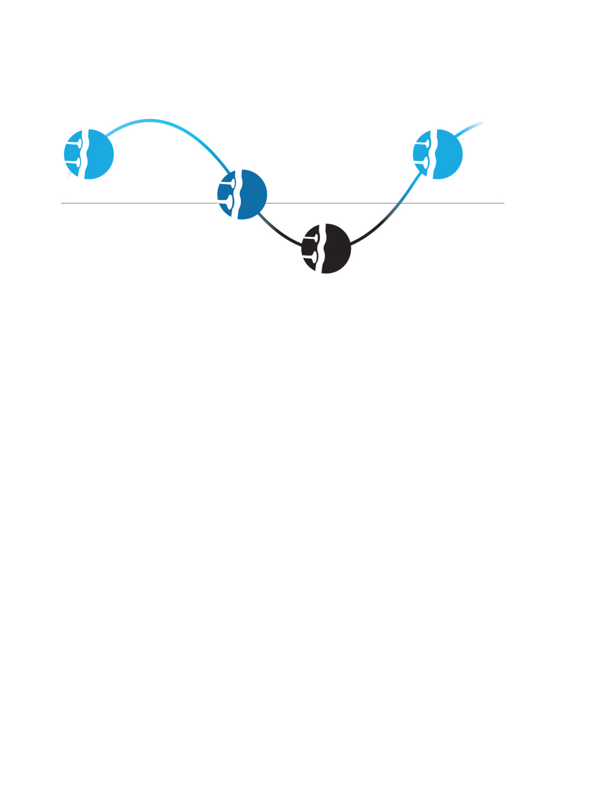
关于睡眠目的的一种理论认为，睡眠是为了阻止我们的大脑被每天形成的新记忆所超载
夜晚
突触重新平衡
100 80
在睡眠期间，所有突触都 100 按照其强度比例缩减， 120 这样白天的 100 记忆不会丢失… 150
早晨 晚上 早晨循环开始 形成新记忆 80 准备重新开始
两个假设的突触各自 稍后，由于新记忆的形成， 120 …同时整个大脑中具有100单位的强度 一个突触变得更强 所有突触的总强度恢复到一天开始时的水平
母亲在分娩后的整个月份都保持清醒。关于维护角度的争论已经持续了一个多世纪。曾经有一种流行的观点认为，某种毒素在我们清醒时在大脑中积累，当达到一定水平时，就会使睡眠变得不可抗拒。
所有这些变化都让那些希望发现睡眠单一普遍功能的人感到困扰。费城宾夕法尼亚大学的马科斯·弗兰克说：“睡眠中的身体变化在物种间差异巨大。但在迄今研究的所有动物中，大脑总是受到睡眠的影响。”
这样的物质从未被发现，但维护假说的现代版本认为，在白天，我们消耗了大脑运作所必需的大分子供应，包括蛋白质、RNA和胆固醇，这些在睡眠期间得到补充。在动物身上已经发现，这些大分子的产生在慢波睡眠期间增加，尽管批评者指出，这些数字只显示了相关性，而不是这些分子的水平控制睡眠。
因此，大多数睡眠研究者现在专注于大脑研究。毕竟，睡眠最明显的特征是意识丧失或至少在某些动物中意识减弱。而且缺乏睡眠会导致认知能力下降，不仅在人类中如此，在大鼠、果蝇和几乎所有其他被研究的物种中都是如此。
独特功能学派的思想也有着悠久的历史。西格蒙德·弗洛伊德提出睡眠的目的是在做梦期间实现愿望，尽管这一观念的科学支持未能实现。然而，有充分的证据表明，睡眠介导了不同类型的大脑功能：记忆和巩固。
我们的大部分睡眠时间都花在慢波睡眠上，也称为第三阶段或深度睡眠，在此期间整个大脑都有容易检测到的电活动波，这是由神经元大约每秒同步放电一次引起的。这与其他阶段交替进行，包括快速眼动睡眠，其中大脑活动类似于清醒时看到的活动，以及两种状态之间的过渡阶段。
记忆并非在体验事件的瞬间就被刻在石头上。相反，最初不稳定的痕迹作为短期记忆被保持，然后体验的最相关方面被转移到长期存储中。
一般认为是慢波睡眠完成了睡眠的实际作用。除了看起来与大脑的清醒活动最不同外，波在睡眠开始时较大，此时睡眠需求可能最大，然后逐渐减小。如果你比平时更长时间不睡觉，当你最终打盹时，这些慢波会更大。
动物和人类的几种实验表明，当学习和回忆之间有睡眠时，会形成更强的记忆。这一观点最令人信服的支持来自于放置在大鼠大脑中的电极显示，小群神经元在睡眠期间”重播”了最初在大鼠清醒和探索时产生的活动模式。“记忆表征是
对睡眠的解释分为两大类：与大脑修复或维护相关的解释，以及睡眠的大脑被认为执行某种独特主动功能的解释。
有些人发誓，如果他们想在早上6点醒来，就会在睡前用头敲枕头六次。胡说八道？也许不是。1999年的一项研究表明，这完全归因于一些巧妙的无意识处理。
连续三个晚上，研究人员用闹钟来启动唤醒过程。枕头仪式可能有助于设置这个闹钟。
睡眠的大脑也可以处理语言。在2014年的一项研究中，巴黎高等师范学院的席德·库伊德和他的同事们训练志愿者
这是一种在进化上有意义的能力，库伊德说。“如果你停止监控环境，你在睡眠期间就会变得非常脆弱…有道理的是你不会简单地关闭，而是以一种待机模式继续跟踪。”这可能解释了
德国吕贝克大学的研究人员让15名志愿者在午夜入睡，要求他们用左手或右手按按钮来表示他们听到了什么。研究人员要么告诉参与者动物或物体的名称，要么在他们入睡时监控大脑的电活动，并在人们睡着时听到相同的单词。
即使在睡眠中，大脑运动区域的活动仍在继续，表明睡眠者正在准备按下正确的按钮。人们还能正确分类他们入睡后首次听到的新词，表明他们在睡着时真正分析了词汇的含义。
这种保护性监控可能不会持续整夜。2016年发表的一项研究发现，虽然在REM睡眠中，对睡前刚听到的词汇的语言处理会持续，但一旦进入深度睡眠，所有反应都会消失，因为大脑会”离线”以处理白天的记忆。
“你对环境中事物的认知会逐渐向深度睡眠递减，”Kouider说。“睡眠在认知方面不是全有或全无的；在意识方面是全有或全无的。”
这最后一组从凌晨4:30开始肾上腺皮质激素(adrenocorticotropin)这一应激激素出现了可测量的上升，在早上6点左右达到峰值。在早上6点意外被叫醒的人没有这种峰值。研究人员得出结论，无意识思维不仅可以在我们睡觉时跟踪时间，还可以设定生物闹钟，以便我们为期望的唤醒时间做好准备。

“有充分的证据表明睡眠介导了记忆巩固”
德国蒂宾根大学的Jan Born说，“在睡眠期间会重新激活”。这对研究者还表明，当人们学习使用大脑特定部位的任务时，该区域在随后的睡眠中产生更强烈的慢波。
许多实验室仍专注于睡眠期间记忆系统如何更新，但自2003年以来，一个新想法正在获得关注。它跨越了两个理论类别，涉及神经元维护和记忆处理。
这种缩减最好在”离线”状态下完成，Tononi说。“你可以以各种方式激活大脑，因为你不需要行为或学习。”
该假说涉及突触(synapses)，即神经元之间通过其进行交流的连接处。我们知道，当我们形成新记忆时，所涉及神经元的突触变得更强。
突触稳态假说(synaptic homeostasis)并没有赢得所有人的认同，但确实得到了很多关注。Born说，它是”目前睡眠研究人员中最有影响力的[理论]“。然而，Frank希望Tononi和Cirelli提供更多关于机制的细节。
这个想法是，在清醒时，我们不断形成新记忆，因此加强突触。但这种加强不能无限期地持续下去：从能量角度来看太昂贵，最终当我们的突触变得”最大化”时，就无法形成新记忆了。
Jerry Siegel也不相信。加州大学洛杉矶分校的神经科学家Siegel坚持他的挑战性理论，即睡眠只是在不做觅食或繁殖等必要事情时节约能量的适应性方式，这些活动实际上比在安全地方小睡更危险。
提出的解决方案是慢波睡眠。在没有任何明显外部输入的情况下，神经元放电的慢周期逐渐降低全面的突触强度，同时保持突触之间强度的相对差异，以便保留新记忆（见第54页图表）。
对Siegel来说，睡眠习惯反映了动物生活方式的多样性，不同物种出于不同目的睡眠。
现在有很多证据支持被称为”突触稳态假说(synaptic homeostasis hypothesis)“的理论。在人类中，脑部扫描显示我们的灰质在清醒一天结束时比开始时消耗更多能量。威斯康星大学麦迪逊分校提出这一假说的Giulio Tononi和Chiara Cirelli已经表明，啮齿动物和果蝇的突触强度在清醒时增加，在睡眠时下降。
睡眠对健康影响的研究学者、英国拉夫堡大学的Jim Horne说，像睡眠这样复杂的现象当然可能执行多种功能。更重要的是，考虑到人类大脑的复杂性，我们的睡眠可能是所有动物中最复杂的。
也许，那么睡眠功能理论如此多样化就不足为奇了。弄清睡眠的重大”为什么”是否会产生一个简洁的解决方案，或者需要无数答案，可能会让生物学家再失眠一段时间。从这个意义上说，也许恰当地，这是意识总体情况的一面镜子。❚
56 | New Scientist Essential Guide | 意识
这是大脑的天然黄昏地带——我们入睡时都会经历的清醒和睡眠之间的过渡阶段。被称为入睡前幻觉(hypnagogia)或”N1”，它通常以生动的梦境为特征——尽管通常人们会进入深度睡眠并在醒来时忘记这些梦。它值得更仔细的关注。睡眠研究员Tore Nielsen说：“如果你是一个好的观察者，你会注意到那些斑点具有幻觉般的特质。”
[含义]
在加拿大蒙特利尔圣心医院。
我们不知道是什么导致了入睡幻觉，但一个想法是大脑的某些部分比其他部分更早进入睡眠。“众所周知，大脑的不同部分在不同时间关闭，”Nielsen说。
长期以来，人们认为入睡幻觉可以激发创造力。化学家弗里德里希·奥古斯特·凯库勒在半睡半醒时洞察了苯的环形结构。超现实主义艺术家萨尔瓦多·达利通过让自己打盹时在金属盘上悬挂一把勺子来调动他的创造力。当他入睡时，勺子会撞下来，在梦境图像仍然清晰时把他惊醒。发明家托马斯·爱迪生在试图解决困难问题时打盹时，手里各握着一个钢球，做了类似的事情。
2021年，巴黎国家健康与医学研究所的Delphine Oudiette和她的团队客观地测试了与创造力的联系，让人们用特定方法解决一个棘手的数学问题——而不告诉他们有一个简单的捷径。在解决问题时，他们被鼓励小睡一会儿，手里拿着一个瓶子，期间连接脑电图(EEG)。
回到数学问题时，脑电图显示只达到N1睡眠阶段的83%的人找出了隐藏的捷径，而保持清醒的31%和进入更深N2睡眠的14%形成对比。
然而，入睡幻觉有其阴暗面。它有时会引发一种可怕的睡眠瘫痪，当通常伴随我们梦境的神经抑制在某人完全入睡前开始时。“入睡幻觉在很大程度上是一个未知领域，”Nielsen说。“我们仍在开发导航工具。”
梦境是我们称为睡眠的意识改变状态的标志性特征。我们开始理解我们的大脑如何塑造我们的梦境，以及为什么它们包含如此诡异的熟悉和奇异的混合。
玛丽·雪莱的梦涉及一个苍白的学生跪在一具正在恢复生命的尸体旁边。保罗·麦卡特尼的梦包含《昨天》的旋律，而詹姆斯·卡梅隆的狂热幻象启发了《终结者》电影。
凭借它们诡异的熟悉和奇异混合，很容易在我们梦境的夜间漫游中寻找意义。为什么我们的大脑要进行这些旅程，为什么它们包含如此离奇的曲折？
任何曾经醒来对夜晚的梦感到惊奇，却在到达淋浴间前忘记内容的人都会理解研究如此短暂的心理状态的困难。一些试图编目梦境特征的最佳尝试要么要求参与者每天早上醒来时立即记录，或者更好的是，邀请志愿者在实验室睡觉，在那里他们在夜间间隔被唤醒并立即询问。
此类实验表明我们的梦境往往是无声电影，只有一半包含声音痕迹。享用一顿饭或感受脚下湿草更加不寻常：味觉、嗅觉和触觉很少出现。
梦境何时发生
睡眠以重复循环发生，每个循环约90分钟长。在一个循环中，有三个非快速眼动睡眠阶段，大脑活动变得温和而有节奏，最终进入慢波深度睡眠。
慢波睡眠后，脑波再次改变模式，眼睛开始在眼睑下滚动，身体大部分肌肉瘫痪以阻止我们表演梦境。这是REM睡眠，在这个阶段花费的时间比例在整夜的每个连续睡眠循环中增加，因此到清晨，这90分钟的大部分可能花费在REM中。
我们确实在睡眠的其他阶段做梦，但这些梦往往没有情感，关注简单事物且难以记住。简而言之，它们很无聊。REM睡眠是经典梦境发生的地方，那些具有奇异并置、物理上不可能的壮举和情感困惑事件的梦。
类似的研究试图确定可能影响我们梦境内容的一些因素，尽管它们难以找到任何可靠的东西。
你可能期望你的梦境揭示关于你个性的某些东西，但外向性或创造力等特质似乎不能预测某人通过睡梦之地旅程的特征。雪莱和麦卡特尼的梦境与我们的并没有太大不同。
“人们的梦境似乎更相似而非不同，”英国斯旺西大学的Mark Blagrove说。这表明梦境中的共同象征可能代表共同的焦虑和欲望，但寻找这些的尝试也令人失望。
更富有成果的方法是观察睡眠期间大脑活动，寻找梦境形成的线索。特别感兴趣的是睡眠有助于巩固我们记忆以便未来回忆的想法。
在海马体中首次记录事件——可以被视为人类记忆的印刷机——大脑然后将其内容转移到皮层，在那里归档回忆进行长期储存。
这使得包括Blagrove在内的一些心理学家怀疑，当不同的信息片段在大脑中传递时，记忆的某些元素可能出现在我们的梦境中。通过研究参与者的现实生活事件日记并将其与梦境记录比较，他的团队发现
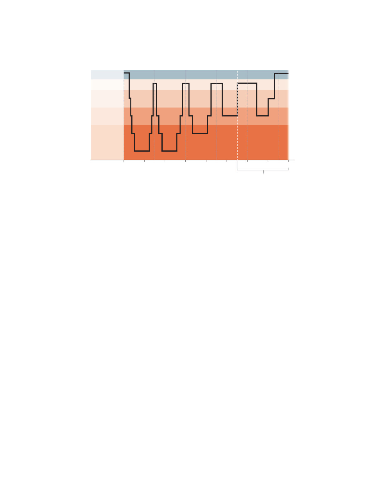
一次约8小时的良好睡眠由五到六个周期组成。
在约5.5小时后，我们获得更高比例的REM睡眠
[周期] [第一] [第二] [第三] [第四] [第五]
做梦 [清醒] [清醒] [清醒] [清醒]
[可发生在任何阶段，但]
[REM]
[在REM期间更常见]
[第1阶段]
过渡阶段
[第2阶段]
慢波睡眠
[大脑修复和] [第3阶段]
[维护]
[时间（小时）] [0] [1] [2] [3] [4] [5] [6] [7] [8]
[REM睡眠的关键时期]
记忆以两个独立的阶段进入我们的梦境，“McNamara说。[我们的梦境不只是角色]
它们首先在事件发生当晚浮现在我们的意识中，这可能反映了[和物体的集合。就像电影或小说一样，它们以]
记忆的初始记录，然后在五到七天后重新出现，这可能[许多不同的风格讲述故事——从琐碎]
是巩固的标志。[无序的序列到强烈的诗意愿景。]
即便如此，单一事件完整地出现在梦境中是相当罕见的——相反，我们的记忆[我们的情感暗流似乎是这里的指导]
是零散出现的。“通常发生的情况是，小的[力量。]
片段被重新组合到梦境的持续故事中，“亚利桑那州北中央[马萨诸塞州塔夫茨大学的精神病学家]
大学的Patrick McNamara说。不同元素出现的顺序[Ernest Hartmann研究了最近遭受痛苦个人]
可能反映了记忆在巩固过程中被分解然后重新包装[经历或悲伤的人的梦境日记。他发现他们更可能]
的方式。[有特别生动的梦境，专注于单一]
McNamara的一项研究比较了一个人在两个月期间的[中心形象，而不是蜿蜒的叙述。]
梦境和现实生活日记，发现地点感——一个可识别的[这些梦境也比来自其他更平静时期的梦境]
房间，例如——是记忆片段首先闯入受试者梦境的[更令人难忘。]
部分，接着是角色、行动，最后是物理对象。[为什么我们的情感会以这种方式驱动梦境的]
虽然在巩固过程中它可能将记忆固化到我们的突触中，[形式？Hartmann怀疑这也可能]
睡眠中的大脑也与你心理自传的其他部分建立联系，[反映潜在的记忆过程——众所周知，我们的情感]
让你看到不同事件之间的关联。这可能会挖掘出旧记忆并[引导我们存储和后来回忆哪些记忆。也许强烈的]
将它们植入我们的梦境中，这反过来可能解释了为什么[形象表明将创伤事件与我们自传的其余部分]
我们经常梦到我们几个月甚至几年都没有见过[整合是一个多么困难的过程。结果]
或访问过的人和地方。这也可能[可能帮助我们接受那个事件。]
是梦境中那些奇异的身份错误案例的原因，[我认为它让新的创伤不那么创伤，”]
当物体或人看起来是一样东西，但呈现另一种形状或特征时。[Hartmann说，尽管他坦承]
“这是大脑混合不同[他的假设很难证明。]
[尽管有这些进展，仍然存在许多、许多谜团。]
[清单首位的问题是我们梦境的目的：]
[它们对于保存我们的记忆是必要的，]
[还是说我们可以在没有它们的情况下存储]
[生活事件？“没有共识，”]
[McNamara说。但如果我们了解它们的起源，]
[我们就能更好地把握意识的总体情况。 ❚]
意识不是一个开关状态，而更像调光器。
或者你可能将其视为状态的阶梯，底部是零意识，
顶部是最大意识。
存在许多意识的改变状态，从麻醉诱导的无意识
到致幻状态，除了药物诱导外，在我们许多人中自然发生。
即使是被认为是最低意识的状态，从昏迷到持续植物状态，
事情似乎也不像我们曾经认为的那样界限分明。
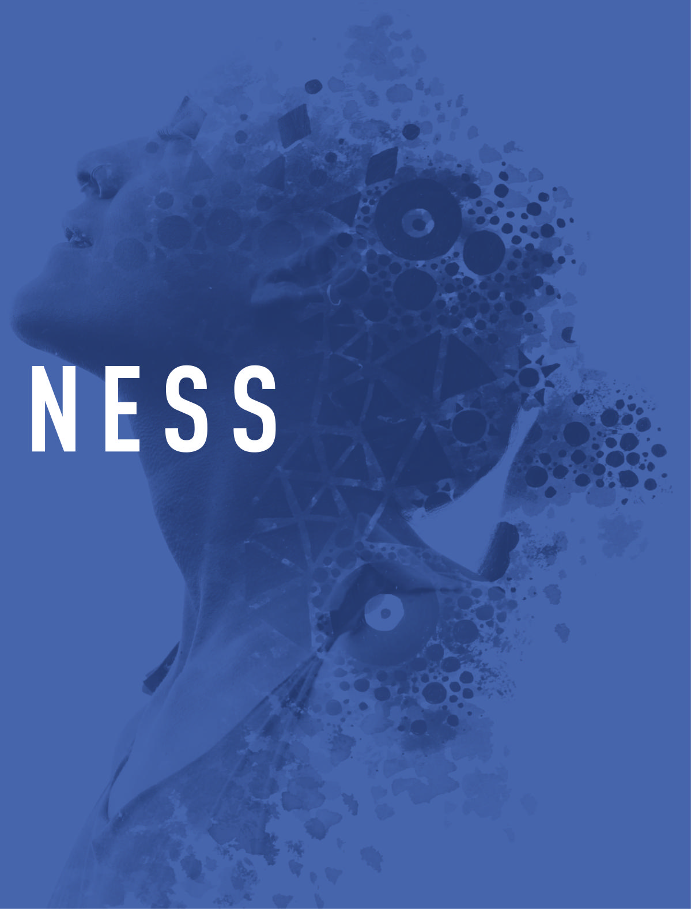
我们许多人都信任医生使用全身麻醉安全地移除是一位日本外科医生在1804年进行了
我们意识的能力，即使我们并不已知的首次麻醉手术，
真正理解它是如何工作的。事实上，使用一种强效草药混合物。在西方，
鉴于没有人知道他们在首次全身麻醉手术
移除什么，没有人真正理解。在1846年在马萨诸塞总医院进行。
一个装有硫酸乙醚的烧瓶被放在
患者面部附近直到他失去意识。
从那时起，一系列化学品被
用作麻醉剂，有些吸入，
如乙醚，还有一些通过注射给药。那些在使用这些药物方面获得专业技能的人发展成了自己的医学专科。虽然长期以来被负责缝合伤口的外科医生所掩盖，但谦逊的”麻醉师”承担着同样重要的工作，让你处于生死之间的暮光状态。
全身麻醉的发展将手术从恐怖的折磨转变为温和的沉睡。它是世界上最常见的医疗程序之一。也许我们不了解它的工作原理并不令人惊讶：毕竟，我们仍然不理解意识，那么我们如何能理解它的消失呢？
当然，意识改变不仅发生在全身麻醉下——它在我们入睡时发生，或者如果我们不幸被击中头部时也会发生。但麻醉剂确实允许神经科学家安全、可逆并且极其精确地操控我们的意识。
我们早就知道存在不同的麻醉水平（见下页图表）——正如意识存在于一个尺度上，我们也沿着这个尺度滑动。“进入和脱离全身麻醉的过程不像切换电灯开关，”密歇根大学安娜堡分校的麻醉师George Mashour说。“它更像调光开关。”
典型的受试者首先经历类似醉酒的状态，他们可能记得也可能记不得，然后失去意识，这通常定义为对命令没有动作反应。当他们更深入地进入暮光区时，他们现在甚至对手术刀的穿透都没有反应——这毕竟是手术的目的——在最深的水平上可能需要人工呼吸协助。
如今，麻醉通常从注射一种叫做丙泊酚的药物开始，它能提供快速平稳的意识丧失过渡。除非手术只需要几分钟，通常会添加吸入麻醉剂，如异氟烷，以便更好地逐分钟控制麻醉深度。
自从它们首次被发现以来，一个大的谜团是如此多样化的一组化学物质如何都能导致意识丧失。其他药物通过与体内的受体分子（通常是蛋白质）结合起作用，这种方式依赖于药物和受体像钥匙插入锁中一样紧密配合。然而，麻醉剂的长列表包含从大型复杂分子（如巴比妥类或类固醇）到惰性气体氙（仅以原子形式存在）。它们如何都能适配同一把锁呢？
长期以来，人们对麻醉剂效力与它们在橄榄油中溶解能力的显著相关性很感兴趣。流行的”脂质理论”认为，麻醉剂不是与特定蛋白质受体结合，而是物理性地破坏神经细胞的脂肪膜，导致它们功能异常。
然而，在1980年代，试管实验显示麻醉剂可以在没有细胞膜的情况下与蛋白质结合。从那时起，许多麻醉剂都发现了蛋白质受体。例如，丙泊酚与通常对一种叫做GABA的化学信使产生反应的神经细胞受体结合。大概，麻醉剂在油中的溶解度影响它们到达结合在脂肪膜中的受体的容易程度。
但这只解决了谜团的一小部分。我们仍然不知道这种结合如何影响神经细胞，以及它们进入哪些神经网络。“如果你在氙气和丙泊酚麻醉下观察大脑，会有惊人的相似性，”在1980年代推翻脂质理论的伦敦帝国理工学院的Nick Franks说。
轻度头晕
失忆
意识丧失对命令无反应
对疼痛无反应可能需要机械通气维持呼吸
大致相当于醉酒状态
睡眠
由于脑损伤导致的意识丧失——包括持续性植物状态和昏迷
在全身麻醉下失去意识不像切换电灯开关，而更像调暗调光开关
如果有的话，哪些是意识丧失的根本原因。但期望找到一个作为心灵”电灯开关”的离散位置或位置现实吗？如果你坚持全局工作空间理论(global workspace theory)等意识理论，这些理论将意识视为广泛分布的现象，其中我们只有在传入信号广播到分布在大脑中的神经元网络时才会意识到一种体验，那么这是不现实的。
←第14页有关于全局工作空间理论的详细说明
这个想法从使用头皮上的脑电图(EEG)传感器记录大脑电活动的研究中获得了支持，这些研究是在人们接受麻醉时进行的。这表明，随着意识消失，皮层区域之间失去了同步性——皮层是大脑的最外层，在注意力、意识、思想和记忆方面很重要。
这个过程也通过功能性磁共振成像扫描被可视化。一项关于丙泊酚麻醉期间发生什么的研究，当患者从清醒状态下降时
对命令失去反应的轻度镇静状态，发现虽然皮层的小”岛屿”会对外部刺激产生反应
必须触发某种共同的神经元变化，[当人们失去意识时，没有活动扩散]
这就是最大的谜团。” 到其他区域，就像在清醒或轻度镇静时那样。
许多麻醉剂被认为通过使神经元更难放电来起作用，但这可能对大脑功能产生不同的影响，取决于哪些神经元被阻断。因此，功能性MRI扫描等大脑成像技术正在被用来观察大脑的哪些区域受到麻醉剂的影响，该技术可以跟踪大脑不同区域血流的变化。这些研究成功揭示了几个被大多数麻醉剂抑制的区域。不幸的是，涉及的区域太多，很难知道哪些区域
[另一项研究将这一过程放慢，以便更详细地观察，在志愿者进入麻醉状态的不同时点给予轻微电击，并记录反应的脑电图读数。在麻醉的最深层次，初级感觉皮层是唯一对电击产生反应的区域，支持了意识丧失与大脑长距离交流阻塞相关的观点——就好像消息以某种方式到达了邮箱，但没有人去取。] ❚
近年来，人们越来越清楚地认识到，幻觉远不止是精神疾病的罕见症状或致幻药物的结果。它们在其他地方的出现让我们更好地理解了大脑如何创造一个并不真实存在的世界。
幻觉是看似真实但实际上不是由我们外部环境中任何事物引发的感觉。它们不仅仅是视觉的——还可以是声音、气味，甚至是触觉体验。除非你亲身经历过，否则很难想象它们看起来有多么真实。正如多年来一直有音乐幻觉的西尔维娅所解释的，这不像是在脑海中想象一首曲子——更像是”听收音机”，她说。
有证据支持这些体验是真实的观点。1998年，伦敦国王学院的研究人员扫描了出现视觉幻觉的人的大脑。他们发现，活跃的大脑区域在观看幻觉图像的真实版本时也是活跃的。例如，那些产生面部幻觉的人激活了梭状回区域，已知该区域包含专门的细胞，当我们看真实面孔时这些细胞就会活跃。颜色和文字幻觉也是如此。这是幻觉更像真实感知而不是想象的第一个客观证据。
它们令人信服的本质有助于解释为什么幻觉被赋予了如此重要的意义——甚至被认为是来自神的信息。但随着人们清楚地认识到它们可能是精神分裂症等心理健康状况的症状，人们对它们的看法变得越来越怀疑。
我们现在知道，没有精神疾病的人也会出现幻觉。体验它们的可能性在你60多岁时增加；我们中有5%的人在一生中会经历一次或多次幻觉。
许多人在即将入睡或刚醒来时会产生声音或形状的幻觉。经历极度悲伤的人在失去亲人后的几周内也会产生幻觉——通常是他们所爱之人的幻象。但最能揭示我们大脑如何工作的幻觉可能是那些出现在最近失去某种感觉的人身上的幻觉。
这被称为Charles Bonnet综合征。Bonnet是一位生活在18世纪早期的瑞士科学家，他首次描述了他祖父身上的这种状况，当时他的祖父开始失明。有一天，老人正坐着和孙女们聊天，这时出现了两个男人，身穿华丽的红灰色斗篷。当他问为什么没有人告诉他他们会来时，他发现只有他能看到他们。
西尔维娅的情况也类似。在一次耳部感染导致严重听力损失后，她开始产生一种声音幻觉，听起来像木笛和铃铛的结合。起初，是几个重复的音符。后来，出现了完整的曲调。“你会期望听到一个你认识的声音，也许是钢琴或小号，但这不像我在现实生活中知道的任何声音，”她说。
Max Livesey在70多岁时患上了帕金森病，破坏了从鼻子向大脑传递信息的神经。尽管失去了嗅觉，有一天他突然闻到了燃烧叶子的味道。随着时间的推移，气味越来越强烈，从燃烧的木头到可怕的洋葱味。“当它们最强烈时，闻起来像粪便，”他说。它们如此强烈，以至于让他的眼睛流泪。
感觉丧失不一定是永久性的才会引起这种幻觉。当我们的感觉减弱时，我们所有人都有产生幻觉的可能。
感觉剥夺是刺激幻觉的一种方式
最强烈时，它们闻起来像粪便，“他说。它们如此强烈，以至于让他的眼睛流泪。
感觉丧失不一定是永久性的才会引起这种幻觉。当我们的感觉减弱时，我们所有人都有产生幻觉的可能。处理最原始元素的区域，如模式和音高。从这里，信号被传递到处理更复杂特征的更高大脑区域，如旋律和调性变化。
链条不会将每个细节都传递上去，
对于人们来说，只需要30到45分钟就能体验到[大脑将接收到的噪音信号与]
幻觉，如果他们尝试简单的视觉剥夺[先前经验结合起来，生成对正在发生的事情的预测。]
技术，比如Ganzfeld程序。这[如果你听到熟悉旋律的开头音符，你期望]
涉及坐在一个均匀照明的房间里，[歌曲的其余部分跟随。这个]
将一个乒乓球切成两半，将每个部分[预测传回到较低区域，在那里它与]
贴在你的眼睛上，然后通过耳机[实际输入进行比较，并传至前额叶，]
听一些白噪音。在德国弗莱堡[前额叶进行一种现实检查，然后]
心理学和精神健康前沿领域研究所[它出现在我们的意识中。只有当预测]
Jiří Wackermann进行的一项研究中，一名志愿者[错误时，信号才会传回较高区域，]
看到了一匹跳跃的马。另一个人看到了一个异常[从而调整后续预测。]
详细的人体模型。“它全身黑色…有着又长又窄的[你可以自己测试这一点。英国苏塞克斯大学的]
头部，相当宽的肩膀，非常长的手臂，“他们说道。[Anil Seth建议听正弦波语音，基本上是]
这些幻觉似乎是因为[语音记录的退化版本。第一次，你听到的只是]
大脑无法忍受通常持续受到刺激的[蜂鸣声和口哨声的混杂。但如果你先听]
区域处于不活跃状态。这些不真实的[原始录音，然后切换回退化的]
经历因此可以让我们一瞥[版本，你突然能够听出说的是什么。]
我们的大脑如何拼接我们对现实的感知。[改变的只是你大脑对输入的期望。这意味着]
尽管每秒被成千上万的感觉轰炸，[它现在有更好的信息来基于其预测。“我们的]
大脑很少停止为你提供[现实，“Seth说，”仅仅是一个受控的幻觉，]
稳定的意识流。当你眨眼时，[被我们的感官所约束。”]
你的世界不会消失。你也不会注意到[这个想法与Sylvia身上发生的情况一致。]
外面的交通嘈杂声或袜子的紧绷感[尽管她大部分时间是聋的，她仍然能够]
(至少在它们被提及之前)。一直处理所有[听出一些声音——她发现]
这些事情对大脑来说是非常低效的[听熟悉的巴赫协奏曲能抑制]
运行方式。相反，它采取了一些捷径。[她的幻觉。英国纽卡斯尔大学的认知神经学家]
例如，声波进入耳朵并被[Timothy Griffiths扫描了]
传输到大脑的初级听觉皮层，[Sylvia在听巴赫之前、之后和期间的大脑，]
神经学家在英国纽卡斯尔大学扫描了
迷幻：
Sylvia在听巴赫之前、之后和期间的大脑，
更高的状态？
让她在整个过程中评估幻觉的强度。
它们在真正的音乐播放后最安静，
从神奇蘑菇和死藤水——
音量逐渐增加，直到下一个片段。
南美在某些宗教仪式中使用的药剂
大脑扫描显示，在她的
——到LSD和氯胺酮，
幻觉期间，处理旋律和音调序列的
使用化学手段获得意识的改变、
较高区域正在相互交流。
致幻状态已成为人类文化
然而，由于Sylvia是深度
数千年的一部分。近年来，
失聪的，它们不受进入她耳朵的
这种改变心智的药物越来越
真实声音约束。她的幻觉是她
成为医学关注的焦点，
大脑对外界存在什么的最佳猜测。
作为抑郁症和创伤后应激障碍
了解为什么人们对感觉环境
等疾病的治疗方法。
减弱的反应不同，可能会揭示
然而，直到最近我们才发现
为什么有些人更容易出现与某些
这些体验是如何产生的。2016年，
心理健康状况相关的妄想和幻觉。
伦敦帝国理工学院的研究人员
精神分裂症患者通常在其感觉皮层
监测了19名服用氯胺酮的志愿者、
有过度活跃，但从这些区域到其前额叶
15名摄入LSD的志愿者和14名受
的连接性较差。
神奇蘑菇中致幻化合物
因此，大脑做出很多预测，这些预测在
psilocybin影响的志愿者的大脑活动。
进入意识觉知之前没有经过现实检查，
扫描显示志愿者的幻觉来自
珀斯西澳大利亚大学的临床神经科学家
通常不相互交流的大脑区域的
Flavie Waters说道。
联合活动。
在Charles Bonnet综合征等情况下，
负责视觉、注意力、
感觉皮层的活跃度不足会触发
运动和听觉的区域变得更加
大脑开始填补空白，而没有实际的
连接，而被认为让我们
感觉输入来帮助它纠正方向。在这两种情况下，
对自我有所认知的网络则减少了联系。
Waters说，大脑开始倾听自己，
这可能就是为什么服用LSD的人
而不是调谐到外部世界。
经常说他们感觉到”自我消解”——他们的
与一些娱乐性药物使用相关的幻觉
感觉
似乎也有类似的情况(见右侧”迷幻：更高的状态？“)。
知道幻觉可能是我们构建现实方式的副产品，这一认知可能会改变我们体验幻觉的方式。已故心理学家Oliver Sacks在其晚年视力开始衰退后经历了幻觉。当他弹钢琴时，在仔细查看乐谱时偶尔会看到平面符号如阵雨般降落。“我早就学会忽略我的幻觉，偶尔还会享受它们，”Sacks说道。“我喜欢看看我的大脑在玩耍时会做什么。”
自我解体——相反变得更加与周围世界融为一体。英国苏塞克斯大学的Anil Seth对这项研究的重新分析表明，使用迷幻药物的大脑在某些指标上甚至可能处于比清醒大脑”更高”的意识状态。“我们看到来自大脑信号多样性的增加，”他说。“大脑的活动更加复杂。”
68 | New Scientist Essential Guide | Consciousness
在一些罕见的大脑疾病中，人们明显以与普通个体非常不同的方式体验世界。这为研究意识问题提供了另一个攻击角度。
这里不乏看似表明意识状态改变的罕见疾病。以幻肢综合征为例——一些人感觉他们缺失的肢体仍然存在——或者Cotard综合征，患者相信自己已经死了。或者日历联觉(calendar synaesthesia)，这也许是身体和大脑相互作用塑造我们思维的最引人注目的例子之一。
当大多数人思考他们计划在11月做什么时，他们对未来几个月有一个模糊的概念。但患有日历联觉的人实际上可以在面前看到一个日历，通常以奇怪的形式出现——比如一个触及他们胸部中央的呼啦圈。
神经科学家V. S. Ramachandran研究过日历联觉和许多其他疾病，他怀疑这暗示了我们的大脑应对月份这一非直观概念的方式。“大脑在进化中没有时间创造时间的表征——它太抽象了，”他说。“进化经常做的是采用现有的硬件并重新改造它。”我们确实发展出了概念化周围环境的工具。“所以你采用一个空间地图，将时间映射到空间上，你就得到了一个日历，”他说。对于联觉者来说，那个日历似乎在空间中是可见的。
对这些疾病的研究可以通过揭示自我与外界之间的模糊边界来帮助阐明意识的一些奥秘。Ramachandran最不寻常的案例之一是一个叫David的男人，他患有Capgras综合征。这通常的特征是相信亲人已被冒充者替代。不过，David相信自己是冒充者。
“他看着镜子中的自己说：‘妈妈，那是真正的David。如果他回来了，你会与我断绝关系吗？’，”Ramachandran说。当被追问解释时，David说唯一合理的解释是他有一个失散多年的双胞胎兄弟，他们在出生时被分开了。“这是对他所处困境的巧妙解决方案，让人脊背发凉。它将你带入关于自我是什么的问题。”
我们的自我感也受到周围人的影响。例如，当患有镜像触觉联觉(mirror-touch synaesthesia)的人看到别人被触摸时，感觉就像他们以同样的方式被触摸。
经历如此戏剧性感知差异的人可能很少见，但我们都有能力扭曲我们的自我感。一个简单的实验可以显示这一点。试着在双重反射镜中看你自己——两面镜子相对放置，第二面镜子反射第一面镜子中的图像。然后，举起你的右臂。第一个反射是正常的镜像，但第二个是倒置的，这是我们不习惯看到的——它是一个分身，当你举起右臂时它也举起右臂并模仿你的行为。继续观察，你的自我感可能会发生奇怪的事情——你开始感觉自己在那里。
更重要的是，如果你观察你的手臂在第二面镜子中移动，你可能会看到轻微的延迟。为什么会发生这种情况正是Ramachandran和他的团队正在研究的问题，但我们知道你大脑中告诉你的手移动的神经元在你有意识地决定移动它之前几毫秒就放电了。
在1964年的电影《奇爱博士》中，主角有一种不寻常的疾病：他的右臂似乎有自己的思维。
这样的疾病确实存在，尽管极其罕见。
患有所谓外来手综合征(alien hand syndrome)的人发现他们受影响的肢体会伸出去抓取他们不想拿起的东西。他们可能试图用另一只手约束它，如果那不起作用，“他们有时会绑着手来到手术室”，研究这种疾病的英国爱丁堡大学神经科学家Sergio Della Sala说。
病因是大脑损伤，通常在被称为辅助运动区(supplementary motor area, SMA)的区域。对猴子的研究表明，大脑的另一个部分——前运动皮层(premotor cortex)——会无意识地根据我们周围看到的事物产生一些行动。然后SMA介入允许或停止这个运动，但对SMA的损害可能会破坏这种控制——因此出现了无政府主义的手，对每个视觉线索都有反应。少数人不幸地在大脑两侧的SMA都有损伤，两只手都会出现这种情况。
为了避免感觉像木偶一样被操控，你的大脑将一切平滑处理，让所有事情都感觉是同时发生的。Ramachandran怀疑，当你在镜子中看到这个分身时，你的大脑不会将其识别为你自己——因此校正机制不会启动。本质上，你看到的是大脑无意识机制的赤裸呈现。
这些洞察构建了一个关于我们意识的图景——它是非常脆弱的——但这对于解决意识难题所能告诉我们的有其局限性。
“你可以弄清楚神经回路和所有那些，但这仍然留下了感质或体验——无论是高潮还是红色的颜色或Marmite酱的味道或咖喱或其他任何东西，”Ramachandran说，“这个问题将伴随我们，直到我们找到一种新的科学方法。也许这将是世界的永久双重视角。内部视角和外部视角。”
他们的手在他们控制之外行动。他们受制于环境触发因素，Della Sala说。
这个系统听起来像是自由意志的完全对立面——Della Sala称之为”自由不愿”。
研究发现表明，虽然感觉像我们的行为总是在我们的有意识控制之下，但实际上，也有很多无意识的决策在进行。
如果这听起来不太可能，你是否曾经在某个走神的日子开车去某个地方，发现自己在遇到正常上班路线的一部分时就朝办公室走去？那是你的前运动皮质对环境线索的反应。
70 | New Scientist Essential Guide | Consciousness
这是近几十年来对意识最令人震撼的洞察之一——那些因创伤性脑损伤而被认为处于无意识状态的人们，可能比我们想象的更有意识。
直到20世纪90年代末，人们都认为处于植物人状态的人，按定义来说，没有任何有意识的觉察。他们会表现出睡眠和觉醒周期的迹象，偶尔睁开眼睛或做出非自主运动，但并不意识到自己或周围的人。
然而，当时在英国剑桥MRC认知与脑科学部门的Adrian Owen有一个令人担忧的想法：如果我们错了怎么办？
神经科医生早就知道闭锁综合征，这种情况下人们是清醒和有意识的，但几乎无法移动身体的任何部分。这首次在1966年的医学教科书中被定义，但肯定更早就为人所知；在Alexandre Dumas 1844年的小说《基督山伯爵》中就有描述。
闭锁综合征患者需要帮助呼吸，许多人只能通过眼部运动进行交流。但他们不被归类为意识障碍，因为与昏迷、植物人状态或微意识状态的人不同，他们是完全有意识的（见”六种意识降低状态”，第73页）。不过，诊断可能需要数月，如果眼部运动有限，甚至可能需要数年。
Owen想知道植物人状态的人是否也可能有隐藏的意识。在当时，这被认为是”荒谬的想法”，他说，不仅因为它让人们感到不适——有人可能被困在自己的身体里而没有人知道。
尽管如此，Owen和他的团队开始测试这个想法。他们的第一个患者是Kate，一个因病毒而处于植物人状态的女性。1997年，他们使用正电子发射断层扫描技术扫描Kate的大脑，这种技术可以测量大脑活动，同时向她展示家人的照片或播放熟悉的语音。令他们惊讶的是，她的大脑反应正如你可能期望的有意识的人的大脑反应一样。但Owen的团队面临一个问题：大量的神经活动是自动发生的，所以结果并不一定证明她是有意识的。花了十年时间才找到解决方案。
2006年，Owen和他的同事们证明了一个处于植物人状态的23岁女性可以响应指令，要求她想象在房子里走动或打网球。这两种心理任务需要不同的大脑活动，可以从脑扫描中识别出来。这毫无疑问地确认了她有意识地意识到自己和研究人员，并且她有能力响应他们的请求。
意识障碍是出了名的难以诊断。大多数医生使用格拉斯哥昏迷量表的变体来评估某人对各种刺激睁眼的能力，以及他们的语言反应和运动动作。他们也可以使用脑扫描来识别物理损伤。
然而，要识别隐蔽意识，你需要使用功能磁共振成像(fMRI)或多次脑电图(EEG)测试来验证反映理解和遵循命令能力的大脑活动。“但我们就是没有筛查患者的这种高级功能水平，”纽约威尔康奈尔医学院的Nicholas Schiff说。“当我们进行筛查时，找到他们并不那么困难。”
真正的警示信号，Schiff说，是Brian Edlow在马萨诸塞州总医院于2017年进行的一项研究。Edlow知道

“植物人状态的一些人可以通过正确的干预被唤醒”
全世界意识障碍患者的确切数量没有数据，但Schiff参与了一项关于误诊率的国际调查。保守估计是，每10个看起来处于昏迷、植物人状态或微意识状态的人中，就有1个实际上具有隐蔽意识。“这是一个大问题，”
covert consciousness（隐蔽意识）已经在一些人身上被发现了，“Schiff说道。”现在我们知道这并不是一个罕见的问题。”
这些人在受伤后经历了数月或数年的恢复，但他想知道在更近期的脑外伤患者中是否也可能存在这种情况。这些新见解伴随着医学科学的其他进展。20年前，对于植物状态的病人，除了希望他们慢慢恢复或出现罕见的自发觉醒外，你能做的并不多。现在，我们知道一些植物状态的人有能力通过正确的干预被唤醒。
他和同事们对16名看似无意识的严重头部外伤患者进行了脑部扫描。在扫描过程中，他要求他们进行心理任务，比如”想象握紧你的右手”。在8个没有行为意识证据的人中，有4个能够遵循他的指示。这是一个小规模的研究，但具有巨大的影响。虽然没有万能药，但某些药物在特定情况下似乎有助于这一过程。Schiff的团队在一名因袭击而处于最小意识状态长达六年的男子的丘脑中植入了电极。立即就看到了改善。在为期六个月的试验结束时，这名男子能够进食、说话和观看电影。
“这些人在重症监护中，”Schiff说道。“如果你撤销了他们的治疗会怎样？”即使对于那些接受维持生命治疗的人，误诊也可能导致有限的康复，从而阻碍了康复的机会。2016年，加州大学洛杉矶分校的Martin Monti和他的同事们表明，通过使用低强度超声波刺激丘脑，可能实现类似的效果。其他人则专注于大脑的不同区域和迷走神经，迷走神经连接大脑、丘脑和身体的多个区域。
covert consciousness的诊断可以改变生活。例如，一名被认为处于植物状态的男子，偶尔出现头部运动，但被认为是随机的。一旦Schiff的团队意识到他的covert consciousness，这些运动得到了更多关注。一名研究人员为他开发了一个头戴式电脑鼠标，他用它来控制键盘。最终，他能够给Schiff写电子邮件，亲自同意参加Schiff的下一项研究。这些进展提出了新的伦理问题。有些人可能认为，在某种程度的意识下从脑损伤中幸存比处于植物状态更糟糕，因为你可以体验疼痛并对自己的困境有一些认识。
72 | 《新科学家》意识基础指南
当一个人不再有任何大脑活动时，就是脑死亡。他们不会恢复意识，也无法在没有人工生命支持的情况下呼吸。
昏迷中的人是无意识的，大脑活动水平很低。他们对声音和疼痛没有反应，吞咽或咳嗽等反射能力大大降低。他们可能能够自主呼吸。
一种状态，人可能有一些反射，包括打哈欠和眼球运动，但对自己或环境没有意识。使用药物的一些改善已被证明只是暂时的，并且产生递减的回报，人们会重新陷入无意识状态。然后是发现亲人有covert consciousness但你无法提供任何继续对话手段的痛苦。
当一个人开始表现出对自己或环境的间歇性意识时，就被称为处于最小意识状态。当他们发展出交流能力时，就被称为具有新兴意识。另一个问题是意识状态的人是否可能就自己的福利进行更有意义的对话。“一旦一个人表现出意识的迹象，他们能决定是生是死吗？”威尔康奈尔医学院的医学伦理学家Joseph Fins问道。
一些被诊断为昏迷、植物状态或最小意识状态的人可能有他们无法显露的意识期，因为他们无法做出任何有目的的运动。这与locked-in syndrome（闭锁综合征）不同，因为这个人仍然有认知问题，如记忆丧失或不一致的意识。从历史上看，我们将这种决定视为全有或全无——人们要么有能力同意治疗，要么没有，他说。但现在，我们有了第三种情况，他说，一个可能有足够意识在某些时候回答困难问题的人。“现在脑损伤患者正在出现和交流，我们必须倾听他们所说的，”Fins说道。
locked-in的人是完全有意识的，所以不被归类为有意识状态的疾病，但无法移动身体的大部分。有时，他们可以使用眼球运动进行交流。我们确实知道的一件事是，locked-in的生活不一定是痛苦的。对只能用眼球运动进行交流的人进行的小规模调查发现，大多数人是快乐的，locked-in的时间越长，他们就越快乐。但这源于他们能够定期与周围的人互动。如果没有这种互动，Schiff担心有意识状态的人面临极端孤立。
通过眼部和面部动作进行交流。他们的病情通常与脑干损伤有关。
“目前还没有关于意识障碍患者幸福感的正式研究，”英国皇家萨里郡医院的拉尔夫·克劳斯说。“但根据轶事证据，从人们在意识清醒期间告诉我的情况来看，他们是快乐的。” ❚
意识会发生什么？
简短的答案并不令人意外：我们不知道。
1987年4月15日，米歇尔·弗兰克尔-唐奈的丈夫汤姆本应从晚间会议接她回家，但他决定先游泳。他患有未被诊断出的心脏病，在游泳池中发生了灾难性的动脉瘤破裂。米歇尔与他一起乘坐救护车。那是她最后一次与他交谈。
“第二天早上当我看到汤姆的遗体时，他显然已经不在了，”宾夕法尼亚州布林茅尔学院的化学家、梵蒂冈天文台兼职学者弗兰克尔-唐奈说，她在科学和精神方面都有大量著述。多年来，她发现自己在思考人类长期以来的一个问题：他去了哪里？
即使是那些理性地拒绝来世观念的人也很难放弃这个想法。这可能与我们的心智理论有关。因为我们习惯性地设身处地为他人着想，想象他们的思想和感受，所以很难相信当我们的思想和感受仍然如此真实时，那些思想和感受就会消失。
← 返回第42页了解更多关于元认知的内容
然而，我们没有任何不同情况的证据。当你死亡时，血液停止流动，肌肉变凉，意识消散——你的物质身体开始回归构成它的原子。
但这是否真的是关于你的最后定论——嗯，没有人真正知道。例如，意识的整合信息理论表明，意识之所以产生是因为特定物理系统组织信息的方式。一些研究人员认为生命本身是一个类似的涌现属性，体现在一个简单的等式中：生命=物质+信息。
物理学的铁律是信息不能被摧毁。那么物理学是否为某种形式的来世提供了一扇后门，其中与你相关的信息可以继续存在？弗兰克尔-唐奈认为量子物理学提供了令人着迷的暗示，即定义我们个体原子和粒子的量子波函数在空间或时间中没有明确定义的边界。“在某个很远的距离，仍然有一些极其微小的几率能在那里找到一个电子，”弗兰克尔-唐奈说。“这是无法测量的。但这并不意味着它不重要。”
意识的某种形式在死后幸存的说法远远超出了科学目前能告诉我们的。但我们当然会在那些比我们活得更久的人的头脑中继续存在。“即使在今天，汤姆在某种意义上仍然存在——在我的记忆中，”弗兰克尔-唐奈说。“如果我闭上眼睛，我可以听到他的声音。”我们自我的最后安息之所，我们可以确信的，是在我们留下的那些人的心中。 ❚
74 | 新科学家基本指南 | 意识

“意识就是
关于组合
信息”
不同的证据线索指向意识的起源在于大脑如何处理接收到的数据，为破解其奥秘带来希望。
我第一次在医院看到中风后的父亲时，我感到不安，因为我发现我那坚强自信的父亲被一个困惑和孩子气的人取代了。除了担心他是否会康复之外，我还被刚刚发生的事情的深刻形而上学含义所震撼。
当时，我距离哲学和神经科学的大学期末考试还有几周时间，这两个学科都涉及意识。在我的哲学课上，我听到了意识不是物理现象而必须在某种程度上独立于我们物质的、有形的大脑的优雅论证。这个观点最著名的是由勒内·笛卡尔在近400年前作为二元论阐述的，似乎与我面前的神经科学证据形成鲜明对比：我父亲的意识被大脑中的一个小血块损坏了。
个人简介
丹尼尔·博尔
丹尼尔·博尔是英国剑桥大学的神经科学家和心理学家
不久之后，我放弃了攻读心理哲学博士学位的计划，选择了意识神经科学的博士学位。关于我们大脑的某些问题确实似乎更属于哲学领域。成为蝙蝠是什么感觉？你看到红色的体验和我的一样吗？实际上，我们如何确定其他人根本就有意识？但我认为，正是神经科学，而不是哲学，最有可能回答这些最困难的问题。

我们在发现意识的物理或神经相关性方面取得了巨大进展——大脑中的意识
单词或声音，其他区域开始活跃。这些是外侧前额皮质和后顶叶皮质，后者是另一个高度参与复杂、高级思维的区域，这次位于
看起来”，你可能会说。调查这个问题的一种方法是观察当意识减少或缺失时会发生什么变化，比如人们处于植物人状态，没有意识迹象时。
大脑扫描显示，这些人通常丘脑受损，丘脑是位于大脑正中央的中继中心（见右侧图表）。另一个常见发现是丘脑与前额皮层之间连接受损，前额皮层是位于大脑前部的区域，通常负责高级复杂思维。
前额皮层也通过另一种技术得到证实——在人们在全身麻醉下失去意识时扫描大脑。当意识消退时，一组离散的区域被去激活，其中外侧前额皮层是最显著的缺失者。
这些类型的调查对于缩小搜索参与我们清醒和意识的大脑部位的范围非常宝贵，但它们仍然无法告诉我们当我们看到红色时大脑中发生了什么。
简单地让某人躺在脑扫描仪里盯着红色的东西看是行不通的，因为我们知道视觉刺激会引起大量无意识的大脑活动——实际上，任何感官刺激都会如此。
我们如何解决这个问题？
一种解决方案是使用刚好处于意识阈值的刺激，所以它们只是有时被感知到——比如播放微弱的噪音爆发，或在屏幕上闪现一个词，几乎短到无法注意到。如果这个人没有有意识地注意到闪现的词，大脑中唯一被激活的部分就是直接连接到相关感觉器官的部分——在这种情况下，是视觉皮层。但如果受试者意识到了大脑，后部。
令人满意的是，虽然许多动物都有丘脑，但与意识相关的两个皮层脑区在其他物种中远没有在人类中那样大和发达。这符合常见的直觉，即虽然在动物王国中可能存在意识谱系，但我们自己的意识形式有着非常特殊的地方。
在人类中，与意识相关的三个脑区——丘脑、外侧前额皮层和后顶叶皮层——共享一个独特特征：它们彼此之间以及与大脑其他地方的连接比任何其他区域都多。有了如此密集的连接，这三个区域最适合接收、结合和分析来自大脑其余部分的信息。许多神经科学家怀疑，正是这种信息的汇集是意识的标志。例如，当我在酒吧与朋友交谈时，我不会将他体验为一系列分离的特征，而是作为一个统一的整体，将他的外观与他的声音以及我对他的名字、最喜欢的啤酒等的了解结合起来——所有这些都融合成一个单一的人-对象。
大脑如何将来自各种脑部位置的这些不同信息链结合在一起？主要假说是相关神经元开始同步放电，每秒多次，这是一种我们可以在脑电图(EEG)上看作脑波的现象，即在头皮上放置电极。意识的特征似乎是这些脑波的超快形式，起源于丘脑并传播到整个皮层。
将这些实验数据转化为意识理论的最突出尝试之一是
76 | New Scientist Essential Guide | Consciousness
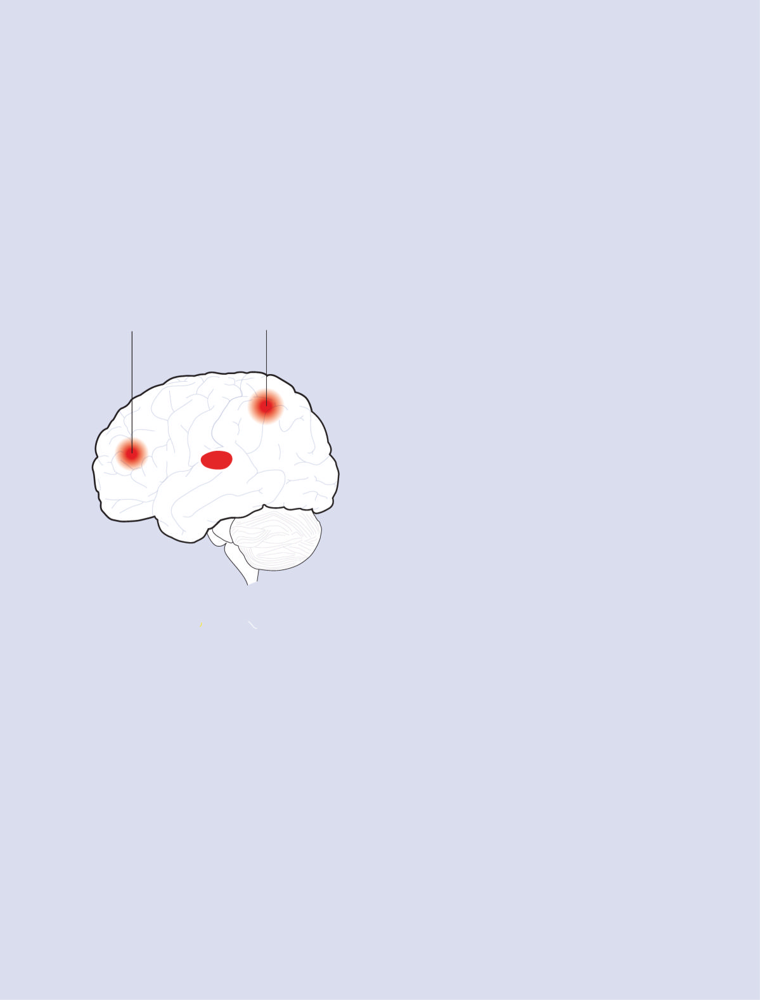
脑扫描揭示大脑某些区域在产生意识体验中起关键作用
外侧前额皮层 后顶叶皮层
但该模型同样适用于互联网和人类：其创造者大胆声称我们应该能够计算任何特定信息处理网络的意识程度，无论是在人类、老鼠还是计算机的大脑中。我们只需要知道网络的结构，特别是它包含多少节点以及它们是如何连接在一起的。
不幸的是，数学涉及如此多的复杂计算，随着节点数量的增加呈指数级增长，即使是对于只有大约300个神经元的简单线虫，我们最先进的超级计算机也无法在现实时间框架内执行它们。然而，这些计算很可能在未来得到简化，使其更加实用。
丘脑(内部)
这个数学理论可能看起来与全局神经元工作区非常不同——首先，它忽略了大脑的解剖结构——然而令人鼓舞的是，两个模型都说意识是关于结合来自我们眼睛、耳朵等的输入信息，并且都专注于信息处理网络中连接最密集的部分。我觉得这个共同点反映了该领域正在取得的重大进展。
全局神经元工作区模型。这表明来自我们眼睛、耳朵等的信息首先在感觉脑区中无意识地处理。只有当它点燃前额和顶叶皮层的活动时，才会进入我们的意识感知，这些区域通过超快脑波连接。
这个模型将意识与困难任务联系起来，这些任务通常需要汇集多条知识链。这种观点很好地符合了在酒吧里，所有感官和关于他的知识包裹在一起，感觉比构成它的原始感觉信息丰富得多。
我们可能还没有解决所谓的意识难题——一堆神经元如何能产生看到红色的体验。然而对我来说，担心难题只是
我们的外侧前额叶皮质和后顶叶皮质在执行新任务或复杂任务时表现出高度活跃，而在我们自动执行重复性任务时（比如在熟悉路线上开车），这些区域的活跃度会下降。
全局工作空间理论的主要竞争对手是整合信息理论(integrated information theory)，该理论认为意识就是将数据整合在一起，使其大于各部分的总和。据说这个理念解释了为什么我遇见朋友的体验[另一个版本的二元论，将意识视为某种如此神秘以至于无法通过科学研究大脑来解释的东西。历史上每当我们认为某个神秘现象必须有超自然原因时，比如精神疾病甚至面包发酵，我们最终都找到了科学解释。在我看来，如果我们继续逐步解决”简单问题”，我们最终会发现根本没有困难问题存在。]
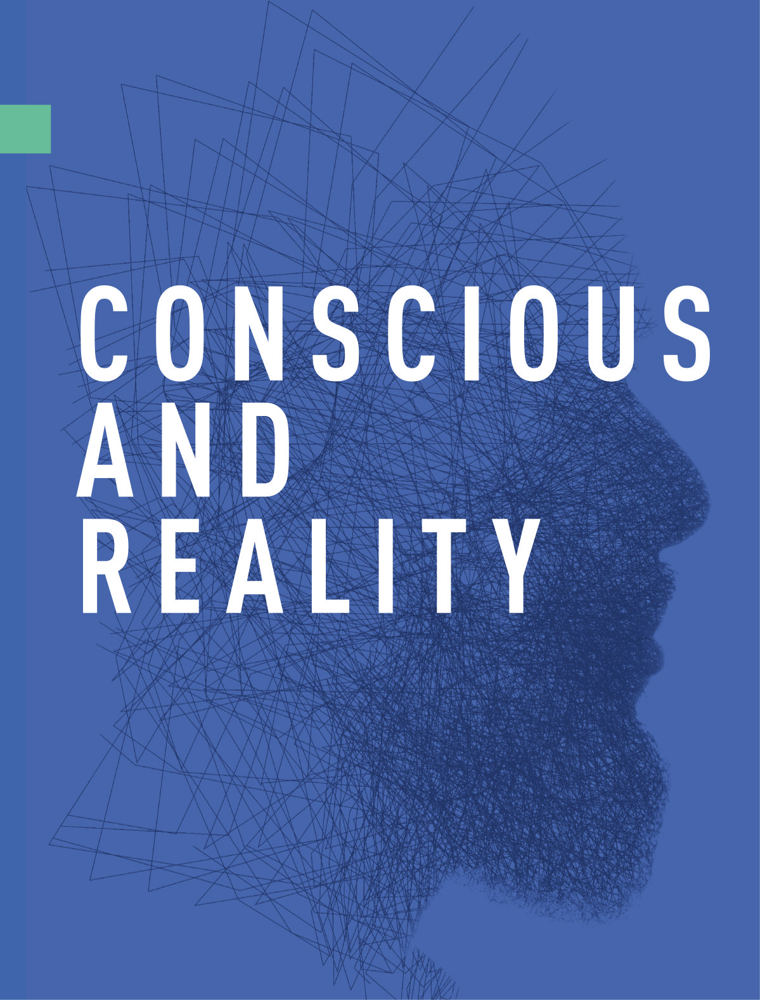
第6章
78 | 新科学家基础指南 | 意识
意识是我们拥有的一切，但它在世界中处于什么位置？
我们内在世界与外在世界之间的关系是意识的另一个重大谜团，迄今为止答案很少。
这是一个有两面的难题。第一面，已经提及过，是我们理解的支撑现实运作的物理过程如何设法产生有意识的体验。第二面是意识本身在构建现实中发挥的作用——这就是问题变得非常模糊的地方。
物理定律在多大程度上能够解释意识的运作？试图回答这个问题的努力在有意识心智最神秘的能力之一中达到高潮——明显利用我们的主观体验来改变周围世界的能力。
希望、记忆、希望、判断、道德、疑虑——所有这些汇聚在一起影响决定。有时我们很难理解自己是如何做出决定的。对于基础物理学家来说，这完全是个谜。我们植根于对世界有意识体验的决策能力，是一种改变物理世界的不太秘密的超能力，看似随意地改变其演化过程。
这是迄今为止设计的任何物理定律都无法解释的事情，它引出了一个关于意识与外部世界关系的尖锐问题。法国艾克斯-马赛大学的Carlo Rovelli说：“我们行动，我们决定，我们发起行动。我们如何将这种能动性(agency)插入自然的总体图景中？”
能动性似乎存在于类似于意识的光谱上。我们不会倾向于将有意识的体验归因于苹果，苹果也不会决定何时从树上掉下来。然而，如果我们爬上一棵树，我们可以做出有意识的决定跳下去。不过，中间的情况变得混乱——例如，粘菌使用趋化性向食物源移动是否表现出能动性？
大多数人认为不是。威斯康星大学麦迪逊分校睡眠与意识中心的Larissa Albantakis说：“能动性不仅仅是反射。如果你只是对环境做出反应，你就不是一个主体，你只是一个经历动作的系统。”我们能动性明显的深思熟虑品质使其区别于细菌对化学刺激的反应，甚至青蛙反射性地攻击飞过的苍蝇。纽约哥伦比亚大学哲学家Jenann Ismael说：“我们收集来自过去的影响，将这些影响置于反思过程中，我们以某种方式提取出希望和梦想之类的东西，并将它们运用到行为上，在施加给我们的影响之间进行调解。”
我们当前的物理定律并不试图解释这是如何产生的。Ismael说：“我们认为自己来自因果秩序之外，并以某种方式干预其中，使事情发生。”我们作为有意识的存在给予自己的神般地位很难解释，因为确实看起来，例如，当我在你的大脑中放入大量血清素时，你的心理状态会改变，“Knox说。”问题是，如果你认为有两种不同的分离物质，你认为这怎么可能起作用。”
加州理工学院的物理学家Sean Carroll说：“如果有证据表明我们应该为有机物或人类或其他什么开辟一个不同的领域，那么请务必这样做。但我是由原子组成的，我的物理定律声称要解释原子，而且似乎最可能的假设是物理定律解释了我。”核心难题变成了什么样的物理定律可以统一两种非常不同、相互冲突的观点。Ismael说：“我们看到做出选择并对世界发生的事情施加因果影响的主体，然后科学出现并说，‘你实际上是一堆粒子或原子，你只是在遵循微分方程’。”
beings is highly suspicious to many physicists. “If [says Carroll. “What we want to figure out is how those ]
我所说的某些东西不归结为物理定律，那么我基本上是在假设某些[对于Carroll和许多其他人来说，答案不在于]
超自然的、存在于自然定律之外的东西，“加州查普曼大学的物理学家[神秘主义，而在于涌现。这是一种观念，即当]
Matt Leifer说。[你观察复杂系统的单个组件时难以理解的行为]
多年来，这一直是自然哲学家们[和性质，在你将事物视为整体时会突然出现。]
以各种心身二元论形式采用的流行出路：认为精神和物理[有很多先例。例如，气体的温度或]
领域是分离的，一方的规则不适用于[密度在单个分子层面上意义不大。然而，]
另一方。但这在现代科学中似乎难以站得住脚。“成为一个完全的二元论者是相当[当你观察气体的所有分子时，它们是可测量的]
82 | New Scientist Essential Guide | Consciousness

“一个问题是为什么我们
应该期望物理学能够
解释意识”
解释物理变化的量：比如[然而，一些人怀疑基于物理学的理论是否]
温度差如何导致热流，或者[有足够的能力。“我不相信物理学]
气体被压缩时如何推动活塞。[必然像我们大多数人被引导相信的那样基础，”]
关键仍然是我们大脑的现象级复杂性。[Leifer说。他认为，物理学之所以如此成功，]
“说我能通过假设空气由相互碰撞的分子[正是因为它提取了容易的部分——世界中那些]
组成来解释空气的温度和密度是一回事，“[适合用规律的数学定律来描述的部分——]
Carroll说。“说我能解释心智、选择和[并将其放入标有”物理学”的盒子里。但这并不]
意识作为原子和分子相互碰撞的涌现[意味着一切都能装进去。]
似乎是一个更加戏剧性的项目。“[以一个在意识感知讨论中经常出现的老问题为例：颜色。]
但正如我们不需要知道气体中每个[” 物理学家对红色有一个定义：某种波长的光，”]
分子是如何运动的就能知道其温度一样，[Leifer说。但他们遗漏了事物红色最本质的方面]
代理性(agency)也可能通过掠过其[——我们如何感知它的红色——纯粹因为我们没有]
内部细节并找到对应于可测量结果的[提出共同标准的方法。问题是我们有什么理由]
全局量来理解。如果我们要实现这一目标，[认为物理学有答案。]
仍有大量基础工作要做。[这可能代表着回到新的、更微妙的]
“你如何将’做决定’或’选择’或’引起某事发生’[二元论思维方式。其他人认为答案]
这样的概念翻译成统计力学的语言，其中你[可能在于对量子效应如何在我们大脑中发挥作用]
有事物相互碰撞、概率分布等等？“Carroll问道。[的某种新理解，甚至更具投机性地在量子理论与]
到目前为止取得的进展围绕着[重力的相互作用，或其他我们甚至还没有发明的物理学中。]
“信息”作为物理事物这一仍然模糊的概念，[” 这只是在不同科学描述层次之间]
意识大脑操纵信息的方式被视为关键。[建立桥梁的问题，还是理解一个全新现象的问题？”]
这是数学意识理论（如整合信息理论(IIT)）的[Carroll问道。“我认为是第一个答案，但我]
起点。[承认这里存在问题。” ❚
由于我们的意识体验似乎与外部物理世界相关并且是其一部分，我们自然的看法是我们的意识是它的产物。我们可能把事情完全搞反了。
现实不依赖我们而存在吗？阿尔伯特·[衰变。那些信奉多世界解释的人认为这是]
爱因斯坦似乎毫不怀疑：[宇宙分裂成每种可能结果时产生的幻觉。]
当我们不看月亮时，它肯定不会消失，[还有一些人说没有必要试图解释它——况且，谁在乎呢？]
他曾经不可思议地问道。[数学有效，所以就闭嘴计算吧。]
他被这样一个命题激怒了：事物只有[无论如何，波函数坍塌似乎]
当我们观察它们时才变成现实。[取决于干预或观察，引发了一些巨大的问题，]
这个建议来自于[尤其是关于意识在整个过程中的作用。这就是]
我们有史以来最经过充分测试的物质现实理论：量子理论。[测量问题，可以说是量子理论最大的难题]
当涉及预测世界将如何发展时
行为，量子理论是无与伦比的。它在量子理论中的每一个预测，无论多么违反直觉，都得到了实验的证实。例如，电子有时表现出波的特征行为，尽管在其他情况下它们似乎表现得像粒子。
在观察之前，这样的量子物体被认为处于所有可能观测结果的叠加态中。这并不意味着它们同时存在于多种状态中，而是我们只能说测量的所有允许结果仍然是可能的。这种可能性在量子波函数中表示，这是一个编码所有结果及其相对概率的数学表达式。
但是，如果有什么的话，波函数能告诉你关于量子系统在我们进行测量之前的性质，这一点根本不明显。这种行为将所有那些可能的结果减少为一个，被称为波函数的塌缩——但没有人真正知道这意味着什么。一些研究人员认为它可能是一个真实的物理过程，就像放射性衰变一样。
“在量子理论中很难解释，”加州查普曼大学的哲学家凯尔文·麦昆说。“每天都有更多的解释被提出，但所有这些都有问题。”
最流行的被称为哥本哈根诠释，以量子理论先驱之一尼尔斯·玻尔的故乡命名。他认为量子力学只告诉我们当我们进行测量时应该期待什么，而不是导致那个结果的原因。这个理论不能告诉我们量子系统在我们观察它之前是什么样子的；我们能问的只是不同可能结果的概率。
这样的观点似乎把你推向一个不舒服的角落：我们的观察行为召唤了结果的产生。这可能是真的吗？这似乎与科学通常假设的相反，正如爱因斯坦所暗示的。然而，这个想法有一些根源。匈牙利物理学家约翰·冯·诺依曼在1930年代早期首先考虑了它，他的同胞尤金·维格纳在1950年代用一个思想实验深入探讨，现在被称为维格纳的朋友。
84 | 新科学家基本指南 | 意识
假设维格纳站在一个没有窗户的房间外面，他的朋友即将对一个粒子进行某种测量。一旦完成，她知道粒子的观察性质是什么，但维格纳不知道。他不能有意义地说粒子的波函数已经塌缩，直到他的朋友告诉他结果。
更糟糕的是，直到她这样做，量子理论没有提供维格纳思考实验室内所有未见事件具有固定结果的方法。他的朋友、她的测量装置和粒子仍然是一个大的复合叠加态。
这就好像我们生活在一个唯我主义的世界中，只有当结果的知识影响到有意识的头脑时，塌缩才会发生。“由此可见，物体的量子描述受到进入我意识的印象的影响，”维格纳写道。“唯我主义在逻辑上可能与现在的量子力学一致。”
阿尔伯特·爱因斯坦质疑当我们不看月亮时，月亮是否真的停止存在。
普林斯顿大学的约翰·惠勒用不同的方式表达：这不是唯我主义，而是一种将事物带入存在的互动合作。我们生活在一个”参与式宇宙”中，惠勒说——一个不能在不涉及我们积极参与的情况下有意义地描述的宇宙。“关于量子力学最令人惊讶的是，”他写道，“它允许人们认真考虑……宇宙没有观察就什么都不是。”
但惠勒无法摆脱参与式宇宙提出的无法解决的问题的困境。首先，维格纳和他的朋友似乎陷入了无限回归。维格纳本人是否处于状态的叠加中，直到他将结果传递给隔壁大楼的其他朋友？

“量子理论可能暗示没有我们的参与什么都不会发生”
哪个观察者”决定”波函数塌缩何时发生？什么构成有意识的观察？其中一个的”事实”比另一个的更基本，“布鲁克纳说——因此我们被迫得出结论，”没有’世界本身的事实’“。相反，每个观察者只有事实。
尽管这些问题持续存在，一些理论家最近回到了惠勒愿景的一种形式，波士顿马萨诸塞大学的克里斯·福克斯称之为”参与式现实”。这种转变部分是因为缺乏更好的选择，但主要是因为如果你认真对待量子力学，某种依赖于观察者的主观性元素似乎是不可避免的。
几年前，维也纳大学的理论物理学家卡斯拉夫·布鲁克纳以稍微改变的形式重新审视了维格纳朋友的场景。
量子力学的一种解释从容地接受这样的结论。由福克斯和其他人在2000年代设计，量子贝叶斯主义(也称为QBism)植根于这样的观点：量子力学只提供关于理性观察者在进行测量时应该相信他们会看到什么的建议——这些信念可以随着观察者将新鲜经验纳入考虑而更新。这就是”贝叶斯主义”的来源：它指的是经典概率理论，始于18世纪，根据观察者已知的情况分配概率。
大卫·德意志在牛津大学提出的理论。[QBism直接否认存在任何客观的]
在这里，朋友进行了测量——她已经[量子态概念。这并不意味着]
坍塌了粒子的波函数，产生了[在个人信念之外就没有任何”真实”的东西，]
结果A或B——但只告诉维格纳她看到了[只是量子力学不直接]
一个确定的结果，而不是什么结果。在德意志的情景中，[涉及那个问题。布鲁克纳的”替代]
维格纳被迫得出结论，他的朋友、她的[事实”的存在在这样的图景中不会造成困扰，因为它一直]
测量设备和粒子处于联合叠加态，尽管他知道测量[假设了它们。实际上，波]
已经发生。[函数坍塌也不会，这只是一种谈论]
对维格纳的朋友来说，她明确地处在，比如说，[测量如何更新我们知识的方式。]
“我看到A”的状态，但对维格纳来说，她处在”我[但很少有物理学家准备接受这种]
看到A”和”我看到B”的叠加态。那么谁是对的？他们都是对的，[对他们描述现实努力的严格限制，]
布鲁克纳说，这取决于你采用谁的观点。[这就是为什么QBism仍然是少数派运动。维也纳]
他已经证明，如果量子力学是正确的，[量子光学和量子信息研究所的理论家马库斯·穆勒的回应]
就没有特权视角可以让第三个[是将事情提升一个层次。]
观察者调和维格纳和他朋友的[“QBism还不够极端，”他说。“它假设]
陈述。“没有理由假设[存在一个外部世界，它]

最终负责我们的体验。“他的[简单，不同的观察者通常可以]
方法涉及想象没有[在情节的某些方面达成一致，“基里贝拉说。]
基本自然定律——没有广义相对论、[惊喜并未止步于此。这种涌现的现实]
麦克斯韦方程或海森堡不确定性[应该具有我们在量子]
原理——并询问世界会是什么[物理学中看到的品质，其中物体可以表现出波状特性]
样子。[并以”非定域”方式表现，当对一个粒子的测量]
穆勒剥离了物理学，使用了一个叫做[似乎可以瞬间影响]
算法信息论的数学领域，它[另一个空间分离粒子的状态。]
使用归纳逻辑来询问，鉴于你经历了[结论是，从关于我们]
X——你对世界进行观察并看到[个人体验将包含什么的最小]
结果X——你接下来体验[假设出发，你可以恢复一个]
另一个结果Y的几率是多少？香港大学理论家[我们所知的世界。“世界仍然可以看起来]
朱利奥·基里贝拉说，这个想法”是[像我们体验的样子，即使在]
将我们的体验想象成由许多[真相中它会截然不同，“穆勒说。]
帧组成的电影，并询问问题，鉴于我到目前为止[要看出穆勒的想法如何被检验并不容易。]
看到的帧，我接下来会看到什么帧？“[但他可能走在正确轨道上的间接证据]
令人惊讶的答案是，即使没有任何[来自他们解决一个长期存在的]
潜在定律，当随机体验堆积起来时，[形而上学难题的方式。在19世纪末，]
下一个体验的条件概率，[奥地利物理学家路德维希·玻尔兹曼]
由比特串描述，对于简单比特序列[将世界描述为充满粒子的空间，这些粒子进行]
往往比对于复杂序列更高。[随机运动，采取各种不同]
这使它看起来像是有一个相当简单的算法[配置。实验长期证实]
生成比特串。所以观察者推断出[我们的现实符合这一愿景，但存在一个问题。]
一个简单的现实”模型”，其特征是规律[如果你检查每种配置的概率，]
且易于理解的定律，平滑地连接[结果发现我们更不可能是经过数十亿年]
一个体验到下一个。在星球上进化的有知觉生物，而更可能是短暂的孤立”大脑”，
这看起来极其奇怪：随机性如何[通过纯粹的机会从混沌中凝聚出来并自由漂浮，]
产生这种明显受定律约束的行为？[带着想象的记忆和体验。]
这有点像我们理解气体的方式。尽管，[我们如何知道我们不是这些”玻尔兹曼]
原则上，其分子的所有可能配置[大脑”，容易在任何时刻溶解回]
都是被允许的，但我们看到的粒子[波动的宇宙中？]
速度的概率分布有一个简单的钟形曲线，[如果客观现实以数学上]
粒子在空间中分布得平淡[可预测的方式从我们过去的体验中涌现出来，决定]
均匀。从中产生了与[未来观察，那么玻尔兹曼大脑]
我们可以轻易测量的事物相关的简单定律：压力、温度[会遇到的体验中的突然不连续性]
和体积。这些定律并不写入气体[将微乎其微。]
粒子本身；它们是不同配置概率的涌现特性。体验应该是平滑的、连接的，
“令人惊讶的是，客观[在我们的尺度上，相当可预测。]
外部世界的概念在长期内自动涌现，“[尽管如此，这个直接建构的宇宙图景]
Müller说道。更重要的是，“不同的观察者会[来自意识体验的内容是如此’超越’，以至于其他]
倾向于对外部世界的属性达成一致”，[研究者几乎不知道该如何理解它。但很少有人]
他说。这是因为，根据算法[会彻底否定它。甚至爱因斯坦也保持开放的心态。]
信息理论，不同观察者的比特串[物理学的基础是假设存在一个独立于任何感知行为]
概率会趋向于收敛到[的真实世界，“他在1955年去世前不久的]
相同的分布——因此他们会对[一封信中写道。“但这一点我们并不知道。” ❚]
“世界法则”达成一致。“总的来说，这部’电影’很可能[是真实的”。]
有意识吗？
试图用数学方法概括意识问题会引向一些非常奇异的道路—— 最具争议的是，暗示某种形式的意识可能是物质的普遍属性。
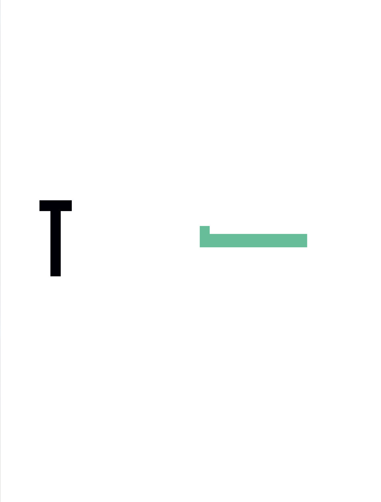
意识难问题的独特困难源于理论(IIT)认为，系统的意识感受体验的内在主观性质。无论产生于信息在其子系统间它是什么，你可能会认为，它都不是移动的方式。可以探测和测量的东西——不是我们基于数学的自然现象模型的天然适配。[← 回到第14页了解IIT的基础]
然而，数学在解决困难问题方面[考虑这些子系统的一种方式是将它们视为岛屿，] 有着良好的记录。[每个都有自己的神经元群体。这些岛屿] 物理学家Eugene Wigner在[通过信息的流动连接。根据这个想法，要] 1960年代创造了”数学的不合理有效性”这一短语[出现意识，这种信息流必须足够复杂，使] 来概括这样一个奇特的事实：仅仅通过[岛屿相互依存。改变从一个岛屿流出的] 操作数字，我们就能以惊人的[信息流应该会影响另一个岛屿的状态和] 清晰度描述和预测[输出。原则上，这让你可以给意识程度] 各种自然现象，从行星运动和[标上数字：你可以通过测量一个岛屿的输出] 基本粒子的奇特行为到[对来自其他岛屿的信息流的依赖程度来量化它。] 数十亿光年外两个[这给出了系统整合的感觉] 黑洞碰撞的后果。信息的程度，一个称为”phi”的值。
这种成功归功于数学[如果岛屿间没有信息流依赖，] 将概念转化为正式、逻辑陈述的[phi为零，就没有意识。] 能力，这些陈述能够揭示仅仅用[但如果阻断或切断连接会影响] 混乱的人类语言交流无法暴露的洞察。[它整合和输出的信息量，] “这可能帮助我们量化[那么该群体的phi就高于零。] 咖啡香味等体验，而这是我们[phi值越高，系统展现的意识就越多。] 仅靠简单英语无法做到的，”德国[IIT的另一个关键特征，即排他性] 慕尼黑数学哲学中心的数学家Johannes Kleiner说。[假设，说明群体只有在其phi值]
这就是为什么Kleiner和牛津大学的”最大”时才会明确展现数学家Sean Tull开始将意识，即其自身的意识程度必须大于可以说是唯一具有半成形[你能归属给其任何个体部分的] 数学基础的意识理论的数学原理[意识程度，同时也大于] 正式化。整合信息[它所属的任何系统的意识程度。]
人脑的所有部分[比如通过全身麻醉进行镇静时，] 可能都有微意识。但[但现在在剑桥大学Bor实验室工作的Pedro Mediano] 当一个部分的意识增加时，比如[和他的同事们已经证明情况并非如此。] 当一个人从麻醉中清醒时，[Bor说：“它要么上升要么保持不变。”而且解释] 微意识就会消失。在IIT中，只有[为什么信息流会产生体验，比如咖啡的] phi值最大的系统才会展现我们[香味，是有问题的。IIT将意识] 记录为体验的意识。[体验框架为”概念结构”的结果，]
自从威斯康星大学的神经科学家[这些结构由相关网络部分的] Giulio Tononi首次提出这个想法以来，[排列方式塑造，但许多人认为这种解释] 它已经赢得了支持者。剑桥大学的Daniel Bor说：[复杂且令人不满意。] “从理论上讲，它很有吸引力。[哲学家John Searle是IIT的批评者之一。] 我们有意识和[他认为IIT忽视了意识为什么] 智力之间的这种联系：能够在镜子中[以及如何产生的问题，而是做出了] 认出自己的生物似乎也是最聪明的。[有问题的假设，即意识只是一个副产品。]
意识和信息存在产物之间的某种联系。对于智能来说，这似乎是合理的。“智能与收集和处理信息有关联。”这意味着你也可以建立相关联系，即在某种程度上，意识与信息处理和整合有关，“Bor说道。
考虑到我们对人脑意识的了解，这也是有道理的。例如，如果大脑皮层受损，意识就会受到影响。这个区域有相对较少但高度互连的神经元，在IIT中会有较大的phi值。另一方面，小脑有更多的神经元，但它们相对缺乏连接。IIT会预测小脑损伤对意识体验影响很小，这正是研究所显示的。
不过，IIT在一些细节上不太令人信服。当你入睡时，phi应该会降低，或者[原因，他说，IIT”似乎不是一个严肃的科学建议”]。
也许对IIT作为数学理论最令人困扰的批评涉及[对潜在数字缺乏清晰度。当涉及到实际]为像大脑这样复杂系统的整体[计算phi值时，IIT给出了一个几乎]不可能遵循的方案——这一点连Tononi都承认。“按照目前给出的方法，phi很难为整个大脑计算，”Tull说。这是一种轻描淡写的说法。使用当前方法，[为人脑的860亿个神经元计算]phi[需要比宇宙年龄更长的时间。Bor已经]计算出，仅为线虫302个神经元[大脑计算phi就需要5×10^79年]在标准PC上。
[当你为那些你不会]期望有意识的事物计算phi时，你会得到各种奇怪的[结果。德克萨斯大学奥斯汀分校的理论物理学家Scott Aaronson，例如，最初]对这个理论感到兴奋，他将其描述为”一个严肃、可敬的尝试”来弄清楚如何对哪些物理[系统有意识这一问题得到常识性答案。但后来他开始测试它。]
Aaronson采用IIT的原理并用它们[来计算一个称为]Vandermonde矩阵的数学对象的phi。这是一个数值相互关联的数字网格，可以用来构建一个网格状电路，称为Reed-Solomon解码电路，用于纠正从CD[和DVD读取信息中的错误。他发现一个足够大的]Reed-Solomon电路会有巨大的phi。[扩展到足够大的尺寸，这些电路之一]最终会比人类更有意识。
[在信息处理程序的其他安排中也存在同样的问题，]Aaronson指出：你可以有整合信息，具有高phi值，但不会产生任何我们认为是意识的东西。他得出结论，IIT[不可避免地预测在物理系统中存在大量意识]，而理智的人不会将其视为特别”有意识”。
Aaronson离开了，但不是每个人都认为高度有意识的网格状电路是个破绽。对Kleiner来说，这只是问题本质的结果：我们缺乏信息，因为任何对意识的分析都依赖于自我报告和直觉。“我们无法从网格中获得报告，”他说。“这就是问题所在。”
与其放弃一个有前途的模型，他[认为我们需要澄清和简化]潜在的数学。这就是为什么他和Tull着手尝试[识别IIT的必要数学成分]，将它们分成三个部分。首先是编码信息的物理系统集合。接下来是意识[体验的各种表现或”空间”]。最后，有基本构建块将这两者联系起来：因果的”repertoires”。
[在2020年，他们展示了这些成分]如何以提供逻辑一致方式应用IIT算法寻找[phi的方式结合。“现在基本思想已经定义得足够好]，可以让技术问题消失，“Kleiner说。[他们的愿望是数学家现在能够]基于IIT的前提创建改进的意识模型——或者，更好的是，竞争对手[理论。”我们很高兴为IIT的进一步]发展做贡献，但我们也希望帮助改进[和统一各种现有模型，”Kleiner说。]”最终，我们可能会提出新的模型。”
这种刺激的一个后果可能是对IIT应用于网格状电路所提出的观念的清算[，即无生命物质可以]有意识。这样的声明通常被完全驳回[，因为它似乎等同于]“泛心论”(panpsychism)，即意识是所有物质的基本属性的观点。
[这并不是说基本粒子有]感觉。但泛心论者确实认为它们可能[有某种意识的相似物，无论多么]零碎，可以结合起来产生鸟类或黑猩猩[或我们所体验的各种]意识层次。“粒子或其他基本物理实体可能有简单的意识形式，这些意识形式是[基本的，但复杂的人类和动物]
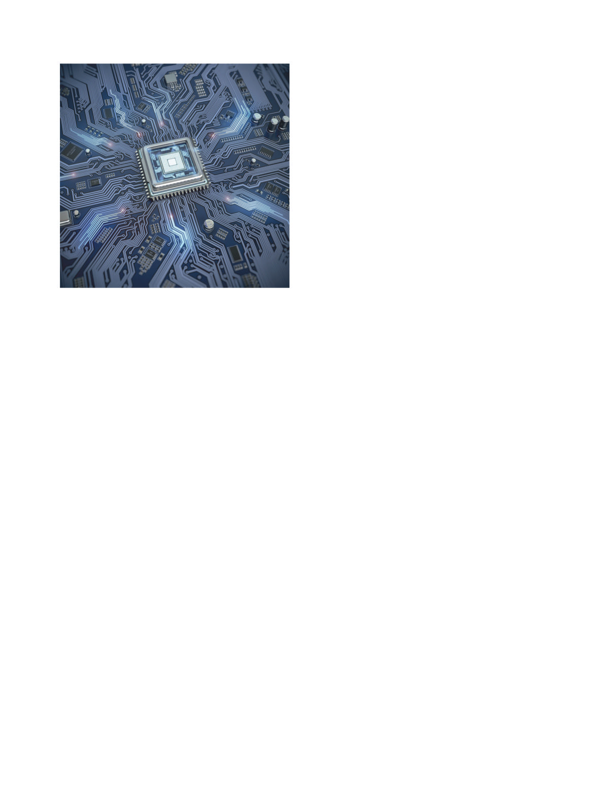

有简单的意识形式，这些形式是[Roger Penrose关于我们的意识实际上是]“宇宙存在的原因”的建议。它基于
意识将由此构成或从中涌现，“挪威内陆应用科学大学利勒哈默尔分校的海达·哈塞尔·默奇(Hedda Hassel Mørch)说。
电子可能具有某种形式意识的观点可能难以接受，但泛心论者认为这提供了解决困难问题的唯一合理方法。他们的推理是，与其试图用非意识元素来解释意识，我们应该问基本形式的意识如何结合起来产生我们拥有的复杂体验。
考虑到这一点，默奇认为IIT至少是一个好的起点。它的一般方法，即根据某些大脑区域变得活跃时我们所感知的内容来分析第一人称视角，并使用这些来制定对其物理相关性的约束，“可能是正确的”，她说。尽管目前表述的IIT并不严格说一切都有意识——因为意识出现在网络中而不是单个组件中——一个改进版本完全可能如此。
“我认为IIT的核心思想与泛心论完全兼容，”克莱纳说。
这也可能符合来自其他地方的迹象，即我们的意识与宇宙的关系可能不像我们想象的那样简单。以量子测量问题为例。量子理论，我们对物质基本相互作用的描述，说在我们测量量子对象之前，它可以有许多不同的值，封装在称为波函数的数学实体中。那么是什么将这些可能性坍缩为确定和”真实”的东西呢？
一种观点是我们的意识做到了这一点，这意味着我们生活在物理学家约翰·惠勒(John Wheeler)所称的”参与性宇宙”中。
这个想法有很多问题，其中最主要的是在意识心智进化之前什么在做坍缩。一个允许意识成为物质属性的可行数学模型至少为此提供了解决方案。
然后是牛津大学数学家对量子理论不足的直觉。但如果这个想法有任何实质内容，IIT的框架——特别是其排除假设——表明宇宙内容各种尺度之间的信息流可能创造出不同类型的意识，这些意识根据任何特定时间存在的内容而起伏。我们意识的进化可能在IIT的术语中”排除”了宇宙的意识。
或者也许不是。有充分的理由对数学解释意识的能力保持怀疑，更不用说对我们理解物理学的连锁反应。据爱尔兰梅努斯大学的计算机科学家菲尔·马奎尔(Phil Maguire)说，我们似乎正在处理如此复杂的事情，以至于我们的计算可能甚至不可能。“分解认知过程如此复杂，以至于不可行，”他说。
其他人表达了类似的怀疑，质疑数学是否能胜任这项工作，即使在原则上也是如此。“我认为数学可以帮助我们理解大脑中意识的神经基础，甚至可能是机器意识，但它不可避免地会遗漏一些东西：体验的感受性内在品质，”康涅狄格大学的哲学家和认知科学家苏珊·施奈德(Susan Schneider)说。
英国达勒姆大学的哲学家、泛心论的坚定倡导者菲利普·戈夫(Philip Goff)有类似的观点。他指出，意识通过感知品质处理物理现象——例如咖啡的气味或薄荷的味道——这些在纯粹的定量客观框架中无法传达。“在处理意识时，我们需要超越公共观察和数学这些标准科学工具，”戈夫说。
但克莱纳并不气馁。他正在开发一个可以纳入无法言喻的私人体验的数学模型。该模型目前正在同行评议中。即使它不起作用，他说，其他东西会起作用：“我完全相信，结合实验和哲学，数学可以帮助我们在揭开意识之谜方面取得更大进展。”
92 | New Scientist Essential Guide | 意识
“我们需要解决意识的真正问题”
在意识本质上取得进展的最好方法可能是将其分解为组成部分。
意识的主观性质使其甚至难以定义。我们最接近共识的是存在”作为有意识存在的某种感受”。作为我或你存在有某种感受，可能作为海豚或老鼠存在也有某种感受。但可能——作为细菌或玩具机器人存在没有任何感受。挑战是理解这怎么可能是真的以及为什么。有意识的体验如何与大脑和身体内的细胞、分子和原子相关？物理物质为什么会产生内在生活？
简介
阿尼尔·塞斯
阿尼尔·塞斯是萨塞克斯大学认知与计算神经科学教授
有些人担心科学可能无法胜任这项任务。他们指出你无法精确控制或观察感受体验。有些人甚至质疑物理机制能够解释意识的观点。
我不同意。我相信科学有能力解释意识，但只有当我们停止将其视为需要重大解决方案的单一大谜团时才可能。
[英国，以及][著作]相反，我们必须将其分解为各种[存在]
[你：意识的][新科学]相关属性，并逐一解决。随着我们逐步解释为什么特定的大脑活动模式会映射到特定类型的意识体验，我们会发现意识本身这一更深层谜团开始消散。
简单问题实际上是一系列问题。[[>]]

这些涉及理解大脑如何与身体其余部分协调，产生感知、认知、学习和行为等功能。这些问题实际上根本不简单；关键在于没有概念上的神秘性，这些问题可以用物理机制来解决，无论这些机制多么复杂和难以辨别。另一方面，困难问题是一个谜：为什么以及如何所有这些都应该伴随着意识体验：为什么我们不只是肉质机器人，没有内在宇宙？
诱惑是认为解决简单问题对解决困难问题毫无帮助，使得意识的大脑基础成为完全的谜团。
幸运的是，有一个替代方案，我称之为意识的”真实问题”：如何根据大脑和身体的物理过程来解释、预测和控制意识的各种属性。真实问题与困难问题不同，因为它至少在第一个实例中不是关于解释为什么以及如何意识是我们宇宙的一部分。它也与简单问题不同，因为它不会将主观的、经验的属性扫到地毯下面。
真实问题并不是一种全新的思维方式，但对我来说，用解释、预测和控制来表述事物有助于明确成功的意识科学应该是什么样子，因为这些是在大多数其他科学领域中应用的标准。
以红色的视觉体验为例。困难问题问为什么会有这样的体验，而简单问题包含与特定波长的光进入眼睛相关的所有过程和结果。从真实问题的角度来看，我们想知道大脑中特定活动模式的什么特点解释（并预测和控制）了为什么红色体验是这样的。为什么它不像蓝色，或牙痛，或嫉妒？
这种方法有一定的渊源。不久前，生物学家和化学家怀疑”活着”的属性是否可以通过机械论来解释。如今，尽管关于生命仍有许多未知之处，但活着需要某种特殊成分的观点早已被抛弃。生命的困难问题与其说是被解决了，不如说是被消解了。
现在，确实生命与意识不是同一回事。最明显的是，生命的属性是可以客观描述的，而意识的属性只存在于第一人称中。但这并非不可逾越的障碍；这主要意味着相关信息因为是主观的，更难收集。
消解生命困难问题的部分策略是停止将其视为一个需要顿悟解决方案的大恐怖谜团，而是将其视为相关属性的集合，每个属性都可以单独解决。对于意识，有许多方式来切分这个蛋糕。我倡导的一种方式是区分意识水平（你有多意识，如全身麻醉和正常清醒意识之间的差异）、意识内容（你意识到什么）和意识自我（“做你”或”做我”的体验）。
通过发展解释、预测和控制意识这些不同方面的理论，我相信所有意识体验的充实图景将会显现。
让我们聚焦于内容和自我。我解释这些意识属性的策略基于认知神经科学中一个越来越流行的理论，称为预测处理(predictive processing)。基本思想很简单。想象你是你的大脑，被锁在颅骨的骨质穹隆内，试图弄清楚外面世界是什么样的——从大脑的角度来看，这个世界也包括身体。你所能依赖的只是嘈杂和模糊的感觉信号，这些信号只是间接地与外面的世界相关，而且肯定没有标签（“我来自一杯咖啡！我来自一棵树！”）。在这种观点下，感知必须是一个推理过程，一个神经实现的概率猜测过程。当我看到桌子上的红色咖啡杯时，这是因为”红色咖啡杯”是大脑对相应感觉
信号隐藏的、最终不可知的原因的最佳猜测。感知，在这种观点下，必须是一个推理过程，一个神经实现的概率猜测过程。当我看到面前桌子上的红色咖啡杯时，这是因为”红色咖啡杯”是大脑对相应感觉信号的隐藏的、最终不可知的原因的最佳猜测。
这就是我和我在英国苏塞克斯大学的同事们在我的实验室里一直在做的事情。我们的一些实验非常简单——例如，发现人们意识地感知预期图像比意外图像更快、更准确。但真正令人兴奋的工作正在将我们带入现象学的深处——意识体验的”它是什么样的”本质。在一个例子中，我们正在
信号。当我体验落日的光辉，或者冒险奶酪的浓烈味道时，那也是一种感知的最佳猜测。
这些感知的最佳猜测是如何得出的？根据预测性处理理论，大脑不断地使用来自感官的数据来校准其感知预测。预测性处理理论认为，感知涉及两个相互对流的信号流。存在一个”由内向外”的信号流，通过大脑的感知层级结构向下级联传递，传达关于感觉输入原因的预测。然后是”由外向内”的预测误差——感觉信号——报告大脑期望与实际获得信息之间的差异。通过持续更新其预测以最小化感觉预测误差，大脑将安定并重新安定在对其感觉原因的不断演化的最佳猜测上，这就是我们有意识地感知到的。
在这个观点中，感知不是对外部现实的被动记录。它是一种主动构建，一种”受控的幻觉”，其中大脑的最佳猜测通过预测误差最小化的持续过程与世界——以及身体——联系起来。
预测性处理不是意识理论，在解决困难问题所需的意义上。相反，至少在开始时，最好将其视为意识科学的一种理论，在真正的意义上。它提供了一种建立解释性动力的方法，当我们询问是谁或什么在进行[调查不同种类的视觉幻觉现象学及其对不同类型感知预测的依赖性。
一些幻觉，如那些由精神病或神经退行性疾病引起的，可能是复杂的，具有被体验为真实的丰富感知场景。其他的，如那些由渐进性视觉丧失引起的，可能相对简单，不被体验为与真实世界连续。这些差异可以通过以不同方式部署感知预测的新型神经网络架构来模拟。这些神经网络作为视觉体验大脑基础的计算模型，我们可以通过要求体验幻觉的人评价它们提出的内容来检查其输出。我们现在正在扩展这种我们称之为”计算现象学”的方法，应用到感知体验的其他更基本的方面，如时间流逝的感觉和视觉空间的三维结构。
通过逐步解释感知体验的深层结构——不仅是它们呈现的具体内容，如猫或咖啡杯，而是它们如何在时间和空间中展开——我的信念是困难问题的表面神秘性已经开始消解。当我们询问是谁或什么在进行
所有这些感知，并从同样的”真实问题”角度考虑作为有意识自我的体验时，这个过程获得了动力。
与表面看起来的情况相反，自我不是从头骨内某处通过感官窗户向外窥视的你的本质。相反，自我也是一种感知。“作为你存在”的体验是基于大脑的最佳猜测的集合，理解这一点进一步削弱了困难问题所依赖的二元论直觉。
正如意识有许多方面，我们体验作为自我存在也有许多方式。这些可以排列在一个松散的层级中，从作为物理身体存在的低层次体验开始，通过从特定第一人称视角看世界的体验，做事情的有意识意图（我们可能称之为自由意志的体验），一直到在丰富的社会文化环境中作为连续的人的体验——一个有名字、身份和一套记忆的自我。我认为自我性的每个这些方面都可以被理解为一种独特的受控幻觉形式。
现在，让我们深入到有意识自我性的最基本方面：作为身体存在的体验。我将其视为简单地作为活着的有机体存在的基本感觉——部分通过情绪表达
身体的内部状态——比如血压，或心脏的状况——因此使大脑能够执行其最重要的任务：保持身体活着。
像所有感觉信号一样，内感受信号只是间接地与其原因相关，因此内感受也必须涉及一个最佳猜测的过程。正如对视觉信号原因的推理支撑着视觉体验一样，我的提议是内感受推理支撑着其他种类的体验：在这种情况下，是身体体验，如情绪和心境。
这个提议可能看起来只不过是一些关于情绪涉及感知身体生理条件变化的旧观念的现代润色。但它不止于此。遵循真实问题策略，情绪体验和视觉体验之间的差异现在可以根据起作用的不同类型的感知预测来理解。物体的视觉体验通常关注弄清楚那里有什么，因此相应的感知体验具有在特定位置和物理范围内的事物特征是有意义的。相比之下，情绪体验通常关注有机体的生理状况和存活前景。这些体验，以及
以及情绪，但在最深层次上没有任何可描述的内容。
正是在这里，从内部感知身体的感觉，即内感受，开始发挥作用。内感受性感觉告诉大脑关于身体的信息，但在更普遍的身体感受中，它们没有形状和空间中的位置。相反，它们具有效价，在心理学中，这意味着事物现在是好的还是坏的，或者在未来可能是好的还是坏的——这就是感受情感的体验。
指南 №13
太阳系
我们宇宙邻域的旅程——以及更远的地方
太阳 / 地球和月球 / 内行星 / 气态巨行星及其卫星 / 未知边缘 / 系外行星和生命 / 以及更多
7月21日发售
指南 №12
意识
为什么我们有意识体验，我们的大脑是如何产生它们的？自我是什么，意识如何融入宇宙？
意识是我们拥有的一切——我们的存在感，以及我们与世界的关系。但它是什么以及为什么存在仍然是根本性的谜团，这是第12期《新科学家基础指南》的主题。话题包括：
❶ 意识理论
❷ 动物和人类的心智
❸ 自我和自由意志
❹ 睡眠、梦境和意识改变
❺ 意识与宇宙
£9.99